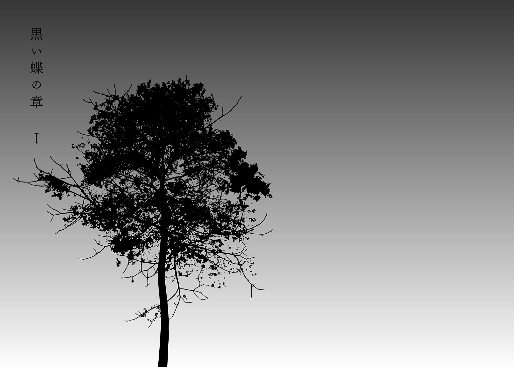
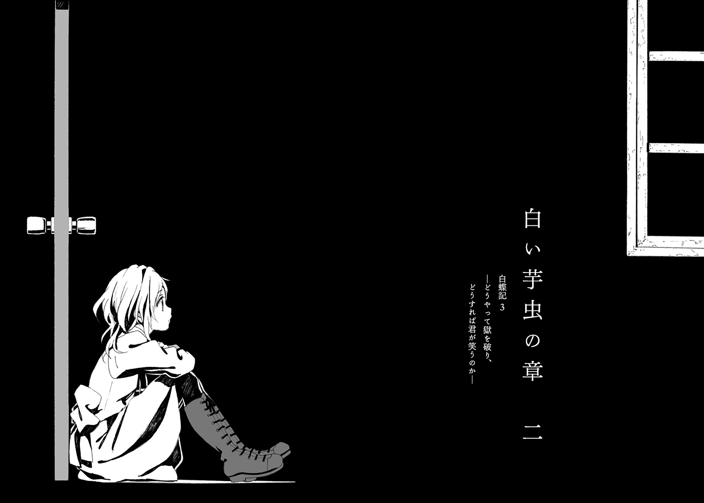

| 白蝶記 3 ―どうやって獄を破り、どうすれば君が笑うのか― | |
| るーすぼーい | |

この本は縦書きでレイアウトされています。
また、ご覧になる機種により、表示の差が認められることがあります。
 ダッシュエックス文庫DIGITAL
ダッシュエックス文庫DIGITAL
白蝶記 ３
―どうやって獄を破り、どうすれば君が笑うのか―
るーすぼーい

こめかみに痛みを覚えて目を覚ますと、そこは見知らぬ小屋の中だった。
おれはどれくらいの間、気絶していたのだろうか。
高い位置にある格子窓から青白い明かりが差しこんでいる。今日は満月だった。キリギリスやカエルが真夏の夜を謳歌していて、意識を失う前と後で、それほど時間は経っていないと気づいた。
木の構造材がむき出しの狭い小屋だった。ベッドもストーブもない。捕まって監禁されているという状況が、かつて教団の児童養護施設にあった〝懲罰小屋〟を思わせる。かつてのおれは、極寒の施設のなか、理不尽な暴力と我が身のふがいなさへの怒りに震えながら、日記を書いていた。いまの相手は教団なんて比較にならないほど強大で、得体の知れない組織だった。施錠されていたドアから入ってきたのは、小倉のような粗暴なだけの素人ではない。
二人の男が踏み込んできた。有無を言わさずおれの腕をひねりあげて、後ろ手にロープを結ぶ。彼らは荒事に慣れているようだった。おれはあっという間に口にタオルを嚙まされ、目隠しまでされて、床に転がった。
「いまからある方々がいらっしゃる」
「お前は何も見ない。何もしゃべらない。死にたくないならば」
体格や顔立ちからしても外国人の風貌だった。不慣れな日本語が耳元に吹き込まれると、二人の気配は遠のいていった。
遠くでフクロウの鳴き声が聞こえる。野犬か何かの獣もさっきからひっきりなしに啼いている。生まれ育った北海道のどんな山奥よりも、自然の息吹を強く感じる。
ここは北海道の東に位置する無人島だった。海鳥の営巣地として知られ、国からも保護区に指定されている。そのため、メディアも含めて一般人の立ち入りは禁止されているはずだった。そんな世間から離れた場所に、彼らの拠点はあった。おれはとんでもない場所に足を踏み入れている。目隠しをされた状態で芋虫みたいに丸まっていると、思い出したように身体が震え出した。覚悟は決めてきたはずなのに、臆病者の気質は抜けきらない。
小屋の外から土草を踏む足音が複数迫ってきた。もう考えていても始まらない。おれはこれまで大切な人に会うためにがむしゃらに生きてきた。長い時間をかけて調べ上げ、ついに、たどり着いたのだ。
足音からして小屋に入ってきたのは二人か、三人だ。おれが追い求めていた目的の男と、その同類の人間たちだろう。一人がおれのそばに立った。視線を感じる。おれを認めた彼がなにを思ったのか、一瞬、息を詰めるのがわかった。
「大きく、そしてたくましくなったな......」
そのとたん、胸の内に溢れ出るものがあって、おれは力の限りわめいていた。口に嚙まされたタオルと、まとまらない想いによって叫びは言葉にならなかった。
「私が室井だ」
男がため息とともに自ら名乗った。どこか感情を押し殺したような響きがあった。おれは引き寄せられるように声のするほうを振り仰いでいた。目隠しに遮られて、彼の顔は見えない。
「驚いたよ。まさか私の居所を探しあてるなんて。なにをしに来たのかとはあえて聞くまい。だが、間が悪かったな。これから私の一族総出で、あるパーティが開かれる。重要な会議であり、儀式のようなものだ。私はその主催であり、家族の再会に涙を流している暇はない」
そう言って、傍らの人間たちに向けて語りだした。
「お集まりのところ申し訳ない。これは私の忘れ形見。一つの抜け殻のようなものです。道内の漁港近くの民宿から船を借りてやってきたと調べはついています。なんの背景もない一般人ですので、どうぞご安心を」
「珍事だね、室井さん。式典に縁もゆかりもないこんな子供が紛れこむだなんて」
「かわいそうだが、片づけておきましょうかね？」
老人のしわがれた声が頭上から冷たく降ってくる。彼らが、おれのような存在をどう見ているのかが、会話の端々から伝わってきた。おれのような青くさい小僧を殺したところで、彼らは毛ほどの罪悪感も覚えないのだろう。
島に渡れば命の保証はないと、あらかじめ教えられていた。室井という男はもはやおれたちと同じ人間ではない、とも。
それでも、取り戻さなくてはならない人がいた。おれは、息も絶え絶えにタオルを口内に張りつけながら、その人の所在を必死になって尋ねていた。
「陽咲か？」
室井が言った。
「生きているとも。間もなく、私のあとを追って死ぬことになっているが」
１
代わり映えのしない一日が、まるで白紙の日めくりカレンダーをめくるみたいに続いている。
チャイムが鳴った。その放課後の合図に、同年代の子供たちが教室の外に飛び出していく。おれは座ったまま、自分の机に肘をついて首をひねった。
開けっぱなしの窓の向こうには、中学校の校庭が広がっている。春から通い始めてそろそろ三カ月になるだろうか。平凡で、安全な、川幌市の公立中学だ。教団の村とは違って、下校する子供たちは楽しげだ。初夏の曇り空のもと、甲高い声を上げながら、友達と連れだって歩いていく。もし、おれが彼らに混じって下校しても、はた目にはなんの違和感もないだろう。十四歳のおれはたぶん、普通の中学生になりつつある。
「旭くん、旭くん。ラーメン食べて帰ろうよ」
物想いにふけるおれの背中を小突いてきたのは、朱理だ。机の横に立って、相変わらずだらしない笑顔を向けてくる。同じ学校に転入して以来、毎日のように話しかけてくる。毎日のように、ご飯の話だ。
「味噌ラーメンがいいなあ。醬油はこの前食べたし」
「今月はもう金がない。昨日本買ったから」
「おごってあげる」
こづかいは実業家の父親からたんまりもらっているらしい。何度か自宅に招かれたが、矢島の家はお金もちだった。がっしりとした鉄の門を抜けると広い芝生の庭があり、玄関にはでかい水槽があった。教団を抜けて親元に帰った朱理は、わがままいっぱいに育てられているようだ。服やぬいぐるみやＣＤやお菓子が、部屋のベッドや床に散乱していた。
「お前、なんで太らないんだ？」
「旭くんこそ。文句言いながらわたしについてくるのに」
「おれは鍛えてるから」
朱理が笑う。なぜか、おれの発言が面白いらしい。
「なんだっけ、ベッドのはしっこで腹筋してるんだっけ。そういうの腰痛めるって、パパが言ってたよ。どうせあれでしょ、映画で観た殺し屋がやってたやり方でしょ？」
「ただの殺し屋じゃない。かっこいい殺し屋なんだ」
朱理と出会って、もう一年以上になる。二人で教団の村から川幌市まで逃亡した。おれは市内の病院で起こったテロ事件に巻き込まれ、十カ月ほど入院していた。そのため朱理は同い歳だが、学年はおれより一つ上だった。モデルみたいな美少女として学校でも評判の上級生が、放課後になると誰憚ることなくおれを訪ねてくる。
「ねえ、知ってる？」
不意に、朱理の目が嫌らしい感じに細くなった。
「わたしたち、つきあってるって噂になってるらしいよ」
「ふうん」
「ふうん、て。否定しないの？」
「いや、新鮮なんだよ。子供はそういうの好きだよな。やたら色気づいているというか。おれもそういう普通の中学生の噂に巻き込まれるような......、なんだろ、普通になったんだなって」
「いや、キミは浮いてるよ。そろそろ気づこうよ。まずいよ？」
朱理と下校した。
川幌市の人の多さにはまだ慣れなかった。駅前には忙しなく行き交う人々がいて、気持ちが急かされる。
駅の裏手にあるラーメン屋は、狭くて小汚い。そして、旨い。川幌市で両親と暮らすようになってからグルメに磨きをかけた朱理が見つけてきた。
注文したラーメンを待っていると、奥の壁際にあるテレビに目がいった。
画面には、見知った山奥の児童養護施設が映っていた。報道陣と警察の数は異常に多かった。平時の村ではまず見られないほどの群衆が施設を取り囲んでいる。
「またやってるねえ」
朱理が他人事のように言った。おれも連日のニュースでもう感覚が麻痺していたところだった。
今回逮捕されたのは園長先生だった。小倉の悪行を黙って見過ごしていた憎いヤツだ。施設の正面玄関から警察官に挟まれた園長が顔を隠して現れ、無数のフラッシュが白く焚かれた。レポーターの女の人が嵐のように叫んでいる。児童虐待の容疑と、テロ事件に関わる重要人物として......！
その後は、教団関連の映像がダイジェスト版で流れた。車に乗り込もうとした幹部に食い下がったカメラマンが、人だかりから飛び出してきた信徒に殴られた。教団施設の門前で教祖の名を泣きながら叫ぶ男たちがいる。信徒勧誘のためのセミナーの手口が、コメンテーターの解説付きで紹介された。教団の本拠地で抱え込んでいたという美術品の数々は総額で五十億円にも及ぶらしい。
一年前に金城が予見していたとおり、教団は日に日に崩壊していった。きっかけはやはり、病院の爆破事件だったようだ。おれと朱理は怪我で済んだが、病院にいた大勢の子供や老人とその家族が亡くなった。事件の首謀者は、しばらくの間外国の武装集団という噂だったが、ある時期を境に、なぜかやたらとマスコミが教団をやり玉にあげるようになった。
昨年の冬、おれも足のリハビリが終わって退院したころ、幹部の一人が、記者会見の場で堂々と罪を告白した。『〝われわれ〟は邪欲にまみれた現世に喜びを与えたのだ』。彼らには悪びれた様子がなかった。教団のわけのわからない動機に世間もわけがわからなくなったようだ。度の過ぎた理不尽な動機に大人たちが憤慨するかたわら、おれの中学校では『喜びを与える』というフレーズが不謹慎にもブームになっていた。
先月に逮捕が目前に迫った教祖が自殺したことで、教団事件は収まるどころか、怒りに震える国民と殉教者になった教祖を崇める信徒との間で、よりいっそう白熱しているようだった。
「そのうち、あの人体実験のこととかもわかっちゃうのかな。脳みそになんか刺して電流ながすやつとか」
「だろうな。でも、味噌ラーメン食いながらする話じゃないな」
「そうやってすぐ『かっこつけー』なこと言おうとするんだから」
と、苦笑して割り箸を手渡してくる。目の前のカウンターにラーメンが届いていた。
「んー、んまんま」
ずるずると麵をすする朱理は至福の表情だ。腹をすかせながら、真冬の夕別町を逃げ回っていたあのときとは違う。
「うちに警察とか来ないか？」
「わたし悪いことしてないよ、なんで？」
「いちおう関係者じゃないか。お前の親父さんも、もと信徒だったんだろ？」
「旭くんちは？」
「いや、とくに......。母さんが、シャットアウトしてるのかも」
「もう忘れなさいって、パパがよく言うよ。テレビで教団のことやってても、チャンネルすぐ変えちゃうし」
はっきりと変わったのは、もう、お互いに帰る家があるということだった。旭くんち。朱理んち。当事者とはいってもおれたちはやっぱり子供で、大人の配慮によって部外者にさせられていく。
店を出ると、朱理が腹ごなしにカラオケに行こうと騒ぎ出した。中間テストも終わったばかりだったので、とくに断る理由がなかった。誰かに追われているわけでもないし、誰かを殺す計画を練る必要もない。
おれたちはそれぞれ親からもらった携帯電話で家に一本連絡を入れた。うちの母も、朱理の親もおれたちの帰りが遅いとひどく心配する。
ここのところ蝦夷梅雨というのか、今日も空は白く濁っていて、少し肌寒い一日だった。なのに繁華街のスクランブル交差点を歩く女の子は、みんなノースリーブだ。朱理も制服のスカートを二、三回内側に巻いて短くしているらしい。
だから、長袖のジャケットを羽織った若い女とすれ違ったとき、思わず振り返ってしまった。
白い女がトランクを引きずって、駅の方向に歩いていく。上着だけでなくスカートも白い。服から覗ける肌も、健康的な日焼けとは無縁の白さだった。柔らかそうな黒髪の後ろ姿が、やがて通りを行き交う人たちに紛れて見えなくなった。
「かわいい子でもいた？」
「時任......」
「えっ？」
「......なわけないか」
信号が赤に変わりそうだったので、交差点を走って渡った。
朱理と遊び歩いていると気が紛れる。
カラオケを一人で熱唱し、ゲームセンターのクレーンゲームでぬいぐるみを取り、喫茶店でパフェを平らげ、夜になると親が心配する、と言って朱理はさっさと帰っていった。二人で村から逃亡していたときもそうだったが、朱理はとにかくマイペースでおしゃべりで、一緒にいると悩んでいるヒマも与えられない。そもそも朱理は教団の外の世界への順応が早すぎるように思うのだけれど、それが性格の違いというものなのか。
「また一人になりたくて来たのかい？」
カウンター越しに微笑んできた工藤さんは、一年半前と何も変わらない。教団の連中に荒らされたバーの店内も、いまではすっかり元通りだ。
「いつもどおりミルク？」
「カフェオレで」
椅子に腰かけたおれは、改めてちょっとびっくりする。初めてお店を訪れたときと違って、床に足が届く。この一年半で急激に背が伸びたのだ。
まだ早い時間だからか、クラシックの流れる店内に他のお客さんはいなかった。
「金城はまた警察署ですかね？」
「警察としてもあいつに聞きたいことは山ほどあるんじゃないかな」
工藤さんはグラスを磨きながら軽い調子で答える。
「逮捕されたりしませんよね？」
「まさか。なんでそんなこと聞くの？」
「いや......、だって、金城は教団の幹部だったわけだし。金城の本意じゃなくても、悪いことをさせられたこともあったかも」
おれはちょっと焦った。工藤さんに気持ちを見透かされたような気がしたからだ。
教団は崩壊して、大勢の幹部が逮捕されている。なのに、おれは平然と生きている。目をつむれば、いつでもどこでも、小倉の凍死体を思い出せるのに。
「また陽咲ちゃんのこと考えてるの？」
その名前が出て、気持ちがより沈んだ。お馬鹿な朱理でさえも、滅多に口に出さない女の子の名前だ。
「今日は帰ります」
「おや、常連客の機嫌を損ねてしまったかな」
「違いますよ。樹のバイトがもう終わる時間なんで、一緒に帰ろうかと」
「じゃあ樹くんのスーパーまで送ろう。僕もちょうどドライフルーツをきらしていてね」
工藤さんは、中学生のおれに夜の歓楽街を一人で歩かせまいとしているのだった。
優しい大人たちに囲まれて、人殺しのおれはなに一つ不自由なく暮らしている。殺人に巻き込んだ陽咲が生きているのかも、わからないというのに。
十時を少し過ぎて、樹がスーパーの裏手の職員通用口から出てきた。
半年前からアルバイトを始めた樹は日に日に変わっていった。見送りに出てきた上司らしき男の人にしっかりと頭を下げて挨拶している。すると男の人が樹の肩に手を置いて、なにか言った。たぶん、樹の勤務態度を褒めているのだろう。もう一度腰を深く折った樹の「ありがとうございます」という声は快活な好青年のそれで、かつての人見知りの表情はまったくうかがえなかった。
「帰ろうぜ」
「旭？」
外灯の下にたたずむおれを見つけて、樹が自転車を押してきた。
「ダメでしょ、こんな時間まで遊んでたら。お母さん、心配するよ？」
「お前に説教される日が来るなんてな」
少し前まで、どちらかといえばおれが樹を助けている気でいた。悪夢にうなされている樹の寝汗をふいてやったこともある。樹が風邪で寝込むたびに、こっちははらはらしていたものだ。いまも、目の前の樹の額はうっすらと汗ばんでいる。仕事で流したすがすがしい汗だ。
「また背、伸びたね」
並んで歩きながら、樹が言う。
「お前も肉がついてきたな」
「だってお母さん、肉ばっかり出すんだもん」
「教団で出されてた飯がおかしかったんだよ」
「だからってここ三日続けてステーキでしょ」
「ニュース見たか。あいつら児相や福祉部の目もごまかして、食事の品目や量を減らしてたんだぞ。修行のためだってよ。つまり、お前が貧弱だったのはあいつらのせいなんだ。おれがチビだったのもな」
「へええ......」
おれが急にいきり立ったせいか、樹は足取りを緩めた。
しばらくお互い無言のまま、住宅地を抜けていった。曲がり角で、警察官に出くわした。病院の爆発テロ以降、自転車で夜道を巡回する警察の人が増えたという。おれは知らずうつむいて、彼らをやり過ごしていた。
「部活でも始めたら？」
おれの緊張をよそに、樹が朗らかに語りかけてきた。
「旭は頭もいいし、かっこいいから、すぐ人気者になれるよ」
「学校のガキどもとは仲良くなれる気がしないよ」
どこから噂が伝わったのか、学校に転入して一週間もしないうちに、おれが教団の村から来たことがクラスに知れ渡った。陰口をたたかれるのも面倒だったので、おれは自ら出身地を告白した。つい先週、それでもからんできた男子を泣くまで言い負かしてやったところだった。その後、おれは職員室に呼ばれ、担任だけでなくスクールカウンセラーとかいう人まで出てきて、長いこと面談を受けた。悩みもなくぬくぬくと育ってきた子供たちがうらやましいのだと、大人たちはおれにそんなレッテルを貼っていった。
川沿いにあるアパートの五階が我が家だった。居間と和室の二部屋で母と樹の三人で暮らしている。教団の施設育ちのおれたちが手狭に感じることはなかったが、母は、毎晩深夜まで高卒認定試験の勉強にいそしむ樹のために、もう少し広い家に引っ越したいと言っていた。
病院爆破事件以降、金城や工藤さんたちが動いてくれたおかげか、おれと樹は教団の児童養護施設から川幌市内の施設へと移った。おれは間をおかずに母に引き取られることになったが、樹は違った。樹の両親はすでに亡くなっていたのだ。親戚もいるにはいたが、調査によって家庭環境に問題があることがわかったらしく樹の養育許可は下りなかった。また兄弟と離れ離れになってしまうのかと思っていたところ、母が里親に名乗り出てくれたのだ。初めて会ったときから感じていたが、里親になるために、仕事の合間に研修や面談を受けにいっていた母は本当に優しかった。子供のおれにも、見ず知らずの他人を育てる苦労は想像できる。きっと、教団を抜けだして数日の間一緒だった陽咲にも優しくしてくれたのだろう。
「旭、また工藤さんのところ行ってたでしょ？」
玄関を開けると仁王立ちの母がいて、いきなり怒られてしまった。
もう、あの真冬の夜に束の間抱きしめてもらったときとは違う。一年以上ともに寝起きして、誕生日やクリスマスを一緒に過ごしているうちに、おれは母を困らせる悪ガキになっていた。
「樹を迎えに行ってたんだよ」
「工藤さんから連絡あったのよ。よく考えてみなさい。あなたみたいな子供がいたら、お店にも迷惑でしょ？」
「店に来るお客さんとは仲良くしてるよ。この前なんか、有名ラーメン店のオーナーと一緒に飲んだんだ。楽しかったな。今度、ラーメン一杯無料にしてくれるってさ」
「......もっと子供らしい遊びがあるでしょうに」
ため息をつかれてしまったが、居間に上がればテーブルの上に夕食が用意してあった。学校帰りに朱理の大食いに付き合わされたものの、ちょっと時間が空けばお腹は減る。健康そのものの男の子になったおれと樹は隣り合って座り、箸を手に取る。母はおれが脱ぎ捨てた靴を整え、小言を言いながらも、傍らのソファでコーヒーをすすりだす。翻訳の仕事をしている母は普段ならいつまでも辞書や原稿とにらめっこしているのだが、食事の際は必ず作業を中断しておれたちのそばにいる。
一家団欒とでもいうのだろうか。アツアツの風呂に入って、デザートのりんごを食べながら樹と読んだ小説の感想なんかを言い合って、母が布団を用意してくれるまで笑って過ごす。
けれど、最近は温かい気持ちになるたびに、胸が詰まりそうになる。心に棘でも刺さっているみたいに苦しい。まるでもう一人の自分が空の上からおれを冷静に見ていて、そいつは声までかけてくるようだ。
自分だけ幸せになっていいのか、と。
寝る前に母に触れられたおれの手は〝懲罰小屋〟に鍵をかけたときのまま、白く冷たい。
２
次の日も、その次の日も朱理と遊び呆けていた。
六月も半ばを過ぎた土曜日、おれは朱理を連れて図書館にやってきた。静寂が苦手な朱理を放っておいて、美術関係の棚から一枚の絵を探した。それは、陽咲をさらった男を知る意味でも、一度観ておきたい絵だった。
陽咲の行方はまったくわからなかった。
母に聞くと、病院が爆破されたその日、ある男がアパートを訪ねてきた。
男は物言わぬ黒服たちを引き連れ、かつて妻だったはずの母を脅して半日ほど居座り、夜になるとベランダから川を挟んだ病院で火の手があがるのを満足げに眺め、それから陽咲を車に乗せてどこかに連れ去った。
陽咲を助けようと必死に食い下がった母の証言があり、部屋で男が堂々とコーヒーを飲んでいった形跡もある。なにより、その誘拐犯の素性は割れている。
おれの父親らしいのだ。
これだけ手がかりがあるにもかかわらず、警察からはこれまで捜査が進展したような連絡はなかった。
――室井、という名前よ。
あるとき、ベランダで一人沈んでいたおれに、母が申し訳なさそうに教えてくれた。
――とても知的で子供に優しい人だった。少なくとも、若いころのわたしには魅力的な人に見えた。当時は貿易商社に勤めていると言っていたけれど、細かいことはわからなかったし、そんなこと気にならなくなるくらい、わたしはあの人に夢中になっていたの。あの人も、わたしに本気だったと思う。でも間違えないで。あの人が実は善良だとか、なんらかの事情があって罪を犯すようになったとか、そういう類の人間ではないの。そう、人間ではない。これは人でなしとかいう比喩じゃないわ。あの人は本気だった。本気でわたしから旭という幸福を奪うために、わたしを愛したのよ。
出産直後の母を置き去りにし、生まれたばかりのおれを教団に送りつけて行方をくらました。そんな男の心理がわかるわけもなかったが、母の痛みだけはどうにか知りたいと思った。
――あの人が描いたという油絵を見たことがあるの。良し悪しはわからないけれど、何かを痛切に表現しようとする意志が伝わってくる、迫力のある絵だったわ。
一頭の蝶が寿命を迎えたのか、土の上に横たわっている。けれど、安息は与えられず、地面には無数の敵が待っていた。蝶の白い羽をかじっているのは、かつての自分ともいえる芋虫たちだった。
おれの父、室井は『我が子を食らうサトゥルヌス』という絵に触発されて、そんな蝶の絵を描いたのだという。
掲載されている本の解説によれば、ローマ神話に登場するサトゥルヌスは自分の子供に殺されるという予言を信じて、子供を呑み込んでいく。画家のゴヤはそんな伝承を、鬼が我が子を頭から丸かじりにしている絵に仕立て上げたみたいだ。ちょっと見ただけで夢に出てきそうなくらいに恐ろしい。本を広げながら、身震いする思いだった。おれの父も、この悪鬼のような存在だというのか。
「ヤダ、気持ち悪い絵。そんなもの家で一人でネットで見ればいいじゃん」
朱理は退屈らしく、さっきからしきりに帰りたがっていた。
「まーた考え事でしょ、考えるの禁止だからね。パパが言ってたよ。暇だからよけいなこと考えるんだって。危ない子に見られちゃうよ、旭くん」
「なにが危ない？」
「怖い絵を見て怖い顔してる中学生。危ないと思いまーす」
たしかに、室井の人物像を探ってなんになるというのか。おれはプロファイリングに長けた捜査官でもなんでもなく、ただの中学生だ。こんなことしたって陽咲にたどり着けるわけもない。
分厚い本をバタンと閉じて黙々と出口に向かった。朱理が、おれの怒ったような態度にまずいと思ったのか、慌ててあとをついてくる。
「そだ、明日さ、パパと焼き肉食べに行くんだけど来ない？」
図書館を出てすぐの公園の芝生を歩いていると、朱理が先回りして下からおれの顔を覗き込んできた。最近のおれはよく下を向いて歩いているようだ。
「旭くんのお母さんとお兄さんも誘ってさ。金城さんとかも来るかなー」
朱理はうるさいが、おれのそばでうるさくしている理由がわかってしまうだけに、なんとも気まずいときがある。
「気ぃつかわなくていいぞ」
「なんのこと？」
「おれは別に元気だから。ただ暇なんだよ」
「暇かあ」
朱理がにんまりと笑う。
「わたしたちって、川幌に来るまでずっとピンチだったけどさ。なんていうか旭くんて、全然変わらないよね。そりゃ、ちょっと背も高くなったけど、いっつも気を張ってる感じ。暇とか言うくせに、いまもピンチみたい」
朱理にはわからない。おれたちは協力しあって教団の追手からは逃げ切ったが、おれは過去からは逃げられない。樹や朱理がまぶしく見えることがある。罪を抱えたまま、おれはずっと後ろ向きで、なまじここのところ直接的な脅威がないだけに暇で、自分のことがどんどん見えてくる。
「おれは......」
「なあに？」
人殺しだから。
陽咲だけが、罰を受けるように行方知れずになっているのだから。
友達に胸の内を吐き出すこともできなくなった。みんなおれの悩みを知っているからだ。樹も朱理も施設での出来事を察している。みんなのおれを見る目は変わらないが、おれから見えるみんなが変わっていきそうで、ひどく怖い。でも、親や友達によけいな心配はかけたくない。おれはずっと強がって生きていかなくてはならないのか。
「悪いな、つきあってもらったのに。ゲーセン行くか。ぬいぐるみ取ってやるよ」
「お、うれしいな。旭くんはゲームもうまいからなー」
朱理は笑顔だ。おれも意識して笑顔のはずだ。
こうして、憂鬱を人に隠そうとしてさらに憂鬱になっていくような、なんの生産性もない一日が過ぎていくのだと思っていた。
陽が落ちかけて、街が夜の賑わいを覗かせるころだった。白い女を見かけたのは、クレーンゲームの吐き出し口からウサギの人形がぽとりと落ちたときだった。
ゲームセンターの店頭で、おれはアパレルショップや喫茶店の立ち並ぶ繁華街の雑踏を背にしていた。クレーンゲームの筺体のガラスに通りを歩く女の姿が映って、引き寄せられるように後ろを振り返った。女はおれに気づいた様子もなく、うつむき加減に人の波に紛れていく。
「旭くん、あのクマさんも取ってー」
おれの胸は高鳴っていた。ガラスケースに頰をくっつけて甘えた声を出す朱理にかまわず、おれは足を踏み出していた。
「ごめん朱理、ちょっと今日は帰るよ」
見覚えのある長い黒髪だった。背格好も、身にまとっている服も、一年前と同じだった。おれの知る限り、女が逮捕されたというニュースはなかった。あとを追わずにはいられない。
女は通り沿いにある靴屋と寿司屋の間の路地に入っていった。おれは自然と駆け足になっていた。路地の先には、居酒屋やスナックが細々と連なっている。女の後ろ姿を正面にとらえながら、距離を置いて路地を進んだ。声をかけたい衝動に駆られる。けれど、接点を持ってしまえば、もう後戻りはできないような気がする。
ひりひりする追跡が続いた。暗くなるにつれて、辺りの風景は少しずつ柄の悪い区域のそれに変わっていった。爆音の漏れ聞こえるライブハウスの前に、ロシアや中国といった外国から来た若者が座りこんでいる。タンクトップ姿の黒人が十字路のど真ん中で、通過する高級車にガンを飛ばしていた。若い女たちが、スプレーで卑猥な落書きがなされたブロック塀によりかかって、げらげらと笑っている。白い女は周囲の喧騒にまったく反応を示さず、常に同じ足取りで先を歩いていた。
アパートだろうか。女は外壁にひびが見えるほど古めかしいビルの自動ドアをくぐっていった。その整った横顔がビルの玄関口の外灯にさらされて、おれは息を呑んだ。
間違いない、時任だ......。
病院爆破事件以降、時任の行方もまたわからなくなっていた。教団がテロを起こしたというのだから、幹部の時任も無関係ではないだろう。警察に身柄を拘束されていないのが不思議だった。それとも、任意で取り調べを受けている最中だったりするのだろうか。
おれは路上に立ちすくんでいた。繁華街からずいぶん歩いてきてしまった。すでに夜の八時は回っているはずだった。立ち止まって十階建てほどのアパートを眺めながら、ゲームセンターに置き去りにしてしまった朱理のことをようやく思い出す。普通の中学生ならば、このまま見なかったことにして帰るか、携帯電話で金城や母に連絡を入れるところだ。そういえば携帯電話が何度か鳴っていたが、無視してしまった。でも、ここで踵を返したら、おれは再び鬱屈とした日々に引き戻されてしまうのではないか。そうすれば二度と陽咲にも会えないような、陽咲を自らあきらめるような、日常と非日常の境界線を感じていた。
「入ってこないのか、旭」
出会ったときも幽霊のように忽然と現れては消えた女だった。
時任は当然のようにおれの尾行に気づいていて、アパートの玄関先で薄く笑っていたのだ。
こちらに来い、お前はこちら側の人間だ、と瞑い目がおれを招いている。
３
殺風景な部屋だった。六畳ほどの和室には布団と、床に直置きの小さなテレビがあるだけだ。
「なにか飲むか？」
部屋の入口のすぐ横に流し台があった。時任は備え付けらしき冷蔵庫からペットボトルを取り出し、放り投げてきた。とっさに受けとったが、ボトルの口をあけて水を飲む気にはなれなかった。
「大きくなったな。その背丈では、もうあの〝懲罰小屋〟の底をくぐることはできないかな」
時任は流し台にもたれかかって、立ったままおれを眺めていた。
頭の芯がぼうっとする。なぜ、のこのこと部屋に上がり込んでしまったのかと、自分の行動が説明できなかった。黙っていると、時任が話し続けた。
「体格もよくなった。いまなら小倉にやられっぱなしということもなかったかもな。陽咲や樹を別の形で守れたかもしれない」
久しく聞かなかった小倉の名前が出て、目が覚める思いだった。
「生きてたんだな」
つい、挑むように言葉を投げていた。
「ようやくいい顔になった」
くすりと笑った目の奥に、企みの気配のある怪しい光が見える。時任はまったく変わっていなかった。
「生きてるならなんで、捕まっていないんだ？」
「そう言うな。旭だって、警察は怖いのだろう？」
「あんなテロ事件を起こしておいてよく言う」
「教団か。あれは残念だったな。お前のなかの罪を一身に引き受けていた悪役は、お前の手が届かないところで裁かれることになった。これから先、旭は誰を憎んで、誰のせいにして自分を正当化していくのかな」
「ああ、わからないな。だから、まずはこれからお前を警察に突き出してやる」
「ついでに自分と陽咲の罪も告白してくるというのかな。いいさ、わたしもつき合ってやろう」
「小倉の死は、死体もなければ証拠もないんだろう？」
「とはいえ、わたしは知っているし、忘れない。わたしだけでなく、樹や金城、矢島朱理......それから――」
小首を傾げて尋ねてきた。
「お前の母は？」
腹の底から怖気が走った。母は小倉殺しの経緯までは知らないはずだった。おれからは言ってないし、金城や樹が口を割るはずもない。
「まあ、お互い、再会の挨拶はこのくらいにしておこうじゃないか。警察への出頭はいつでもできる」
時任はふっと息をついて、ペットボトルを片手に部屋の片隅に足を伸ばして座りこんだ。おれも適当に腰を下ろして何気なく天井を見上げた。蛍光灯の笠の中に蛾がいて、ばたばたと出口を探してもがいていた。
「まずは安心してほしい。わたしはもう教団の人間ではない。お前や矢島朱理を捕まえようと、声をかけたわけではない」
噓かもしれないが、教団がかつての力を失っているのは事実だ。
「なんで病院であんなひどいことをしたんだ。お前たちの目的はおれと朱理だったんじゃないのか？」
「信じなくてもかまわないが、あのテロは教団がやったのではない。教団が川幌市内で爆弾テロを計画していたのは事実であり、それが証拠の一つになっていま世間は騒いでいるが、実行に踏み切る算段はまるで整っていなかった。あれで大幹部の一人は死んだし、わたしも巻き添えを受けたのだからな」
「ふうん、あんたは使い捨てにされたってことなんじゃないのか」
「ああ、テロの実行犯として、警察からも追われているところさ。だから、人目を忍んでこんな部屋を借りたところだ。寂しいものだろう？」
言って、酒でも呷るようにペットボトルの口を傾けて、ぐびぐびと水を飲み始めた。
「教団がどう自滅したのかなんて、いまとなってはおれもどうでもいいよ。あんたのいまの立場もな」
「だが、陽咲の行方は気になっている......、だろ？」
瞬間、おれは畳に手をついて身を乗り出していた。
「知ってるってのか？」
「わたしたちの目的は同じだ」
「答えろよ」
時任の水気をはらんだ唇が艶っぽく光った。
「わたしはこの一年半の間、テロで受けた傷を癒しながら東京に隠れていた。同時に教団幹部だったころの情報や人脈を活かして、裏社会を渡り歩く人間たちとも接触していた。目的はもちろん、わたしをハメた人間を探しあてるためだ。それでわかったのは、テロ事件を裏で操っていたのは、室井という男だということだ」
室井......。陽咲をさらった、おれの父だ。
「室井は闇社会では名の知れた男だ。いや、名前だけは知られた男というべきか。ただの企業つきのヤクザだという声もあれば、武器の密輸入を取り扱う商社マンだとも言われていた。だが、実態は〝犯罪コンサルタント〟だという。仁義や筋を通したかと思えば、気まぐれに裏切りもやる。これは室井の力を示す噂だな。信用を重視する人間が多い裏の界隈で、平然と裏切りを行って生きていけるだけの背景を持っているということだ。わかったのは、室井の組織......」
饒舌な時任が、珍しく言い淀んだ。
「組織というよりも一族というべきか。室井には華族と呼ばれていた戦前から脈々と続く資産家貴族がついている。彼らは教団の初代教祖とも関わりが合って、一時期は激しくいがみあっていたそうだ。教団がまだ日本の情報機関の一部だった戦後の話だがな。古い人間は古いことをいつまでも覚えている。今回のテロを教団になすりつけた理由もそういったしがらみからかもしれない」
テロ事件の解明に、いまは考えが及ばなかった。
「その室井ってのがやばいヤツなのはなんとなく知ってるよ。母さんから聞いたんだ」
そのとき、時任はなぜか嫌なものでもみるように目を細めた。
「ではやはり、旭は室井の息子なのだな」
「そうらしい」
「本当に？」
「母さんが間違ってなければな」
「そうか......」
時任のまなざしが落ちた。何か深く考え込んでいるようだった。
「なんだよ、時任」
「いや、室井やその一族が各地で子供を作っていたという話を耳にした。その多くがあの雪深い児童養護施設に送られたともな。これで裏が取れた。わざわざ川幌に戻ってきた甲斐があった」
顔を上げた時任は、くっくと笑い出した。
「恋する旭にすごく残念なお知らせがある」
「は？」
「陽咲はお前の姉かもしれない」
「な、なに馬鹿なことを言ってんだ？」
おれは顔をひきつらせて、口を尖らせた。モグラたたきのゲームみたいだった。久しぶりに陽咲への気持ちが顔を出したと思えば、唐突に頭から抑えつけられたようだ。時任の舌が再び滑らかに走り出した。
「なぜならば、室井は間もなく死を迎えるからだ。室井が末期がんで、もうすぐ組織が代替わりするという噂は闇社会では有名で、近々厳かなパーティが開かれるらしい」
「パーティだって？」
「世代交代、力の継承のための式典だよ。来賓に新しいトップをお披露目する機会でもある。血縁を重視するあたりがいかにも貴族らしいが、一般の企業でもよくある話ではないかな」
「待てよ。じゃあ陽咲は室井のあとを継がされるってことか？」
「これは臆測だが、陽咲もまた室井の血を引いていて、だから誘拐されたのではないかな」
「そんな理不尽な......」
「この世が理不尽と不条理に満ち溢れていることは、施設で学んだろう？」
「だって、あいつは......、陽咲はただの女の子じゃないか。歳だっておれの二つ上だ。そんなテロをやるような連中の仲間入りをするわけがない」
「そうだな、十三歳の少年が殺人を犯すわけがないよな」
おれはうめいて、押し黙った。
凍りついていた毎日に、一気に生々しい情報が入ってきて、叫び出したくなった。叫ぶかわりに、拳を握って我慢した。
「でも、生きて、いるんだな......」
吐き出した声が震える。腹の底に熱がこもった。
「どこにいるんだ、陽咲は。そのふざけたパーティはどこで開かれるんだ？」
「それがわかっていたら、わたしもお前に会いに来ていないさ」
「おれだって知るかよ」
しかし、時任が接触してきたのは、おれが室井に至る糸口を持っているからではないか。希望を与えられて、頭にかかっていた靄が少しずつ晴れてきた。
「またいい顔になったな。前にも言ったかもしれないが、わたしはお前のことが好きだぞ」
「いいから教えろよ。なぜ、お前はおれに会いに来たんだ？」
「お前がパーティの招待状を持っていると思ったからだ」
「なるほど。陽咲はどうか知らないが、おれは間違いなく室井の息子だからな」
「いいぞ、冴えてきた。それでどうなんだ？」
「いまのところはなにも」
「がっかりだな。まあ、焦っても仕方がない」
時任の話を加味しても、室井という男は相当な実力者なのだろう。テロを起こし、陽咲を誘拐しても影も追えなかった。
「時任は、室井に復讐したいのか？」
「いいや、自衛のためだ。室井はわたしをテロの実行犯に仕立て上げようとしていた。室井にとってわたしなどはゴミのような存在だろう。だから直接会いに行って、わたしがどれだけしぶとく、厄介な人間かを思い知らせてやろうと思っている。強い者は、強い敵と争おうとしないからな」
争いを避けるために武器を取る。矛盾しているようだが、修羅場をくぐってきた時任なりの考えなのだろう。ほんの一瞬、冷酷な機械のようだった時任の目が激しい感情にぎらついて光った。
「そこで提案がある」
「室井が接触してきたら、教えろと？」
「教団の幹部だったときのコネクションから、わたしはこの街にもそれなりの情報源を持っている。それなりの金と、それなりの経験もな。中学生のお前にはできないこともやってのけよう」
「手を組もうってことだな？」
「わたしたちには人に言えない重い過去がある。だから、ちょっと追いかけっこしたくらいの軽い過去は水に流そうではないか？」
不思議と抵抗はなかった。むしろ、時任とのやりとりに高揚している自分がいる。〝懲罰小屋〟で小倉殺しの追及を受けたときや、川幌市までの逃亡劇を演じたときもそうだった。生き残るために必死だったという言いわけがあって、自分の罪を忘れていられる時間。朱理や樹と遊んでいても決して満足できない、ひりひりするような感覚だ。勢いで、時任の提案を了承しかけたとき、ズボンのポケットで携帯電話がけたたましく鳴った。
夢から引き戻されるようだった。はっとして着信表示を見ると、当然ながら自宅からだった。朱理からも連絡がいったに違いない。母と樹にも心配をかけている。
「今日は帰る......」
携帯電話が鳴りやんで、おれはすっくと立ち上がった。
「またつまらない芋虫に戻るのか？」
時任の声に後ろ髪を引かれる思いだった。
帰宅すると、夜の十二時を過ぎていたにもかかわらず、母と樹は外出着のまま、玄関で外靴を履いて待っていた。いまにもおれを捜そうと家を出るところだったのだ。そんな二人におれは、時任のことを黙っていた。世間を騒がす教団の元幹部と会っていたと知られればまたよけいな心配をかけてしまうだろうし、なにより、言ってしまえば、警察に通報されて時任との縁も切れてしまうような気がしたからだ。
４
室井が近づいてくる気配もなく、六月が終わろうとしていた。
放課後に下駄箱で朱理を待っていると、同じクラスの男子に声をかけられた。
「お前、サイボーグなんだって？」
先日、教団が行っていた猟奇ともいえる人体実験が暴かれたところだった。電流を用いたマインドコントロールや白質切断術とよばれる時代錯誤の脳手術の様相がネットで公開されて、またひと騒ぎになっているのだ。
なかなかしつこいいじめっ子だと思った。おれは転入して間もなく彼を徹底的に言い負かしてやったことがあるが、それだけに根に持たれているようだ。
「そういや目つきがやばいと思ってたんだよ、なあ」
その呼びかけに同調するように薄笑いを浮かべる取り巻きがいる。彼の父親は道議会議員の秘書らしいが、いまはその息子が二人のコバンザメみたいな子分を従えてからんでくる。おれは言った。
「そうやって人を傷つけるようなことを平気で言って、なんの報いも受けないとでも思ってるのか？」
そのとたん、彼らは吹き出した。
「やべー、かっけー」
「やっぱずれてるよ、こいつ。マジ、何かに操られてるんじゃね？」
肩を押された。はじめは手首だけで軽く。けれど、おれが抵抗するそぶりを見せなかったせいか、次第に肩と腰に力が入っていった。下駄箱を背にしていたおれは、背中を強く打ちつけた。調子に乗った彼のパンチが腹に迫ったので、その腕をつかんだ。ケンカの口火を切ってしまったようだ。取り巻きが力まかせに拳を振るってきた。
「死ねよ、信者」
身をよじったり腕で防いだりして、顔と腹を守った。なかなか倒れないおれに連中の怒りの火は燃え上がる。けれど、猛吹雪のような小倉の暴力に比べたらかわいいものだった。やり返すつもりはなかった。どんなクズでも傷つけたら後悔する。
「お前の彼女も信者なんだろ？」
朱理のことだ。いつも一緒にいるから勘違いされている。とっさに彼らが朱理に目をつけたらどうなるかと想像した。学校で噂が広まったら朱理の立場が危うい。いまや教団の関係者に人権はないのかと思われるほど、世間の目は厳しい。おれは焦って言った。
「ち、違うよ、あいつは彼女なんかじゃないよ」
喉を絞って情けない声を出してみた。すると、彼の振りかぶっていた手が止まった。
「噓つけよ、土日もデートしてるんだろ」
「だから違うんだよ。おれが一方的に言い寄ってて、でも、ぜんぜん相手にされなくて......、あいつが優しいのにつけこんでるっていうか......」
「お前、ストーカーだったのかよ」
暴力に興奮していたいじめっ子の顔に余裕が戻ってきた。小倉もそうだったが、弱いと決めつけた相手が、それ相応に弱い者らしくしていないと彼らは安心できないのだ。
「もう許してくれよ、いや、ほんと、ごめんなさい......」
指を突きつけて笑いだした彼らが、それぞれ同じ形をした虫みたいに見える。おれは思い返していた。小倉にもこうして卑屈な演技をして死の酒を手渡したのだ。
満足した三人が去ると、急いで制服の乱れを直した。ほどなく朱理がやってきた。
「ごめんごめん、遅くなった。さあ、とんかつ食べにいこー」
周囲に人気がないのを見て、朱理に顔を向けた。
「用事ができたから帰るよ」
「え、なにそれ」
「あと、今後、学校で馴れ馴れしくするな」
「ヤダ。なんで？」
「お前とつきあってるって噂がいい加減迷惑なんだよ」
朱理は眉間にしわを作って腕を組んだ。
「あー、そうか。旭くんには好きな人いるもんね。彼女が帰ってきて、誤解されたら困るかー」
納得してくれるなら、理由はなんでもよかった。
「そういうわけだ。ごめんな。噂されるとか、なんていうか、かっこ悪いし......」
「あはは、じゃあ土日に連絡するね。こっそり遊ぼうよ」
「暇だったらな」
「それと、心配しなくてもわたし、旭くんにチューしたいとか、そういうのないからね」
根の明るい朱理には友達も多いようだった。廊下を渡ってきた女生徒に声をかけると、すぐさま笑いながら連れだって下校していった。
いいヤツだなと、心から思う。テロ事件で入院していたころも、毎日のように見舞いに来てくれた。だからこそ、もっと早く距離を置いておけばよかった。いじめっ子たちに教えてもらったようなものだった。もっと頭を使わなければ......。
その晩から、樹との交換日記を再開した。施設にいたときはよく交わしていた日記のおかげで〝懲罰小屋〟から脱出できたのだった。
おれはつとめて明るい話題を選んで、ときには噓も交えて日記を書いた。樹に手渡すと、うれしそうに目を細める。
「なんだか懐かしいね」
「ごめんな、勉強で忙しいのに」
「いいんだよ。ここのところ、小説も書けてなかったから。楽しみ」
母のもとで暮らすようになって、樹は夢に向かって猛然と勉強している。奨学金つきの大学に進学後、就職して働きながら小説家を目指すのだという。外見は気弱そうだが、真面目で心根の熱いおれの兄貴分だ。邪魔をしたくなかった。
「よかったよ、旭」
交換日記を始めて一週間後の夜、居間で樹が微笑んできた。
「ここのところずっと元気なかったじゃない。ぼーっとしてるっていうかさ。無理もないけどね」
「そうかな」
「文章が楽しげだよ。朱理ちゃんと映画観にいった話なんか最高」
作り話の一つだった。朱理とは放課後に連中にからまれて以来、遊んでいない。
「最近は、この日記のなかに出てくる、時川さんっていう子とも仲いいんだね」
「ああ、頭がよくてちょっと悪ぶってるヤツなんだ。話が合う」
「よかったね。朱理ちゃんの他にも友達できたんだね」
時任のことだった。あのときから時任にも会っていないが、いずれは行動をともにすることになるだろうから、あらかじめ予防線を張っておきたかった。
「文章からして女の子だよね？」
日記には男のように書いたつもりだった。樹は文章を書いているだけあって、鋭いのだろうか。返答に困っていると、樹が優しい目でおれを見つめていた。
「あのね、旭。もし旭が陽咲ちゃん以外の子をいっとき好きになっても、ぼくは怒らないよ」
「ちょっと聞き捨てならないな」
「その子を大切にするんならね。陽咲ちゃんとおんなじくらい」
風呂場からシャワーの流れる音がする。母が風呂からあがる前に話をつけたかった。
「怒らないでね。でも、いまのぼくたちが陽咲ちゃんにできることって、なにもないんだよ」
「陽咲は生きていて、いまも助けを待っているんだぞ」
「だからたくさん勉強して、早く独り立ちしなきゃ。陽咲ちゃんが戻ってきたとき、ぼくらが後ろ向きに生きていたら、陽咲ちゃんだってがっかりするでしょ。ぼくだって陽咲ちゃんにまた小説読んでほしいよ。だからいま自分にできることを一生懸命やるんだよ」
樹は大人になっていた。人を殺したことのない樹は、苦しかった施設での過去を取り返そうと、前向きに歩んでいる。
警察の力をもってしても陽咲の行方はいまだわからない。おれたち子供には雲をつかむような話だ。だから、おれは陽咲を捜し続ける。夢を追っているうちは自分の血に染まった手を見なくて済むからだ。それは大望を口にするだけで実行に移さない人間の現実逃避に似て、とても甘美なのだ。陽咲に会って、陽咲を幸せにするまでは......、とちっぽけな自尊心を保っていられる。罪に向き合って怯えることもない。
樹が日記帳を閉じて静かに言った。
「ぼくは、まず目の前の旭に幸せになってほしいんだよ」
樹は本気でおれの将来を案じてくれている。ありふれた言葉に感動して、おれは決意を深くした。おれにかまわず、樹にはまっすぐ歩いていってほしい。
「ありがと、樹。それで、その時川ってやつ、ちょっと遠いところに住んでてさ、帰りが遅くなっても母さんには心配しないでくれるよう、樹からも言っといてくれよ」
「え、まさか本当に好きになっちゃったの？」
「ばーか。お前の小説の主人公はそんな軽いヤツなのかよ」
「ほんとにー？」
「まあ、年上の一人暮らしの寂しいヤツだから、ちょっと気にはなってるかな」
「陽咲ちゃんといい、旭は年上が好きだからなあ」
「頼むよ。別に悪いことしてるわけじゃないからさ」
「わかったよ。でも、電話には出てね」
朱理を避けていると、学校ではすぐに孤立した。世の大人たちは教団を糾弾することに夢中で、学校の子供たちもそれに呼応するかのように残酷になっていった。
バーで金城に出会ったのは、教団と密接な関係にあった神経工学の大学教授が逮捕され、人体実験と称したクラスメイトが裁縫で使う縫い針をおれに突き刺した夜だった。
「どしたんだ、その手」
刺されたのは左手の甲だった。金城はおれの絆創膏の貼られた手がカウンターに置かれているのを見て言った。
「おいおい、美人のお母さんが泣くぞ」
「ああ、だからせめて腫れが引くまでは帰りたくないんだ」
金城はおれの隣に腰かけて、さっそくタバコをふかし始めた。
「らしくないな、旭。教団のことでいじめられてるんなら、全員ぶっ飛ばしちまえばいいだろ」
「すると向こうの親や学校から母さんに連絡がいくだろう。母さんは忙しいんだ」
「まったくだ。お前みたいなクソガキの飲み代も稼いでくれてるんだもんな」
「つまり今日くらいは金城のおごりってことかな」
金城が陽気に笑った。工藤さんにカフェオレを頼んで、おれに寄こした。
「ちょっとは落ち着いたの？」
乾杯してから、訊いた。
「まだ山は越えてないな。俺も警察の各部署から引っ張りだこだよ。もう、なんかの罪で捕まったほうが楽なんじゃないかってくらいにな」
これまでも何度か金城に近況を尋ねたが、守秘義務というのか、子供のおれに、具体的な捜査の進展具合を話してくれなかった。
「陽咲は？」
陽咲の誘拐事件についてだけは、本当のことを話してくれると信じている。
「すまんな」
金城は飲みかけのウィスキーを置いて言った。
「もう一年半も経っている事件で、捜査もだいぶ縮小されている。担当してた刑事が一人、三カ月前に事故で亡くなった。俺が知ってるのはそれだけだよ」
「そっか」
「くやしいよな」
おれはカフェオレのグラスを傾けた。飲み干すと、金城がまた同じものを頼んでくれた。
「ところで、時任がこの街に潜伏してるって話を耳にしたんだが、なにか知らないか？」
「いや、生きてたんだな」
噓が平然と口から出た。
「幹部だった時任は俺に接触してくる可能性があると警察は見ているんだが、いちおうお前にも知らせておこうと思ってな」
「もし見かけたら？」
金城はちょっと考えるような間を取って言った。
「まあ、通報かな。警察は時任が爆破テロの実行犯だとにらんでいる。あいつも未成年だから警察もまだマスコミを利用した捜査は踏みとどまってるが、かなり本腰を入れてるぞ」
「金城も時任がやったと思ってるの？」
「いいや。俺も警察署で、あの事件には裏があるって言っているんだがね。こんだけ国民が騒いでたらブレーキはきかないんだろうさ。俺だって時任に言いたいことはあるが、なにせあれから時間が経ってるからな。前と同じかわいそうな女の子のままかどうか......」
金城に室井の存在を話すべきか迷う。金城は腐った大人ばかりだった施設を抜けて、初めて出会った信頼できる男だった。ただ、室井について聞けば、同時に時任に会ってしまった話をしなくてはならないだろう。
おれたちの会話が止まったのを見てか、工藤さんが声をかけてきた。
「金城、ここのところアルバイトにはまっているというが、本命の保育士の資格試験はどうだったんだ？」
「受かったよ......って、工藤てめえ、旭の前で言うなよ」
「保育士？ あんたが？」
思わず笑ってしまった。
「人の第二の人生を笑うな」
「いや、ごめん。似合わな過ぎてさ」
「金城はロリコンだからね。今回の教団事件では逮捕を免れたが、保育園できっとお縄になるはず」
「うるせえよ。見てろよ、来月から禁煙もするんだ」
泰然とグラスを磨く工藤さんに、金城がくってかかっていた。お返しとばかりに金城が工藤さんの恥ずかしい話を始める。工藤さんが澄まし顔で言い返す。二人には固い友情があるようで、ちょっと入りこめなかった。
おれが後ろ暗い気持ちに押しつぶされそうな毎日を送っていて、時任と一緒に闇社会の大物を追おうとしているだなんて、とても言えなかった。
時任に会って以来、毎晩似たような夢を見る。
山奥の施設では見慣れた吹雪の夜。
施設のあの小屋で、裸の小倉が真っ白になって転がっている。
おれは、ざまあみろ、と強がって笑う。
しかし、小倉は不意に起き上がり、おれの首に腕を伸ばして襲いかかってくる。
おれは慌てて外に逃げて、小屋の戸を背中で押さえつける。
小倉は、わめき、怒鳴り、おれの背後で獰猛な熊みたいに暴れている。
木戸が破られそうになったそのとき、陽咲が雪道を走ってくる。
陽咲はおれの代わりに戸を押さえ、小倉をとどめる。
おれは何もできない。
小屋の戸が開き、陽咲だけが、中に引き入れられる。
陽咲が閉じ込められたまま、二度と、戸が開くことはない。
悪夢に耐えきれずに目を覚ますと、隣で寝ている母も起こしてしまう。
「旭、どうしたの？」
おれは嫌な汗が全身から噴き出しているのを感じながら、母に向かってまた噓をつく。
「ごめん、母さん。今日、学校で友達と遊んでたのが夢に出てきてさ」
「うなされてたけど？」
寝室の暗闇のなか、母の声が厳しく追及してくる。
「プロレスしてたんだ。はは、楽しかったなあ」
「本当に？」
「うん、ちょっとトイレいってくるよ」
洗面所で顔を洗った。〝懲罰小屋〟に鍵をかけた手も洗う。鏡を覗くと、そこには殺人犯の目つきをした少年が映っていた。
もう、限界だった。
陽咲さえ無事ならば、教団の悪人どもと一緒におれも捕まってしまいたかった。何度か自首しようかと思い悩んだ。だが、運よく小倉の死が事件として認められたとしても、そのときは陽咲も罪に問われてしまうのではないか。犯行当時十三歳だったおれと、二つ年上の陽咲ではまた違う処分が下されるのではないか。刑事責任能力がどうとか、犯罪ではなく非行だとか、逮捕ではなく補導だとか、関連するいろんな言葉を調べたが、やっぱりおれは陽咲を巻きこんだ殺人犯で、この胸が押し潰れそうなほどの苦しみは、罪と呼ばれるものがもたらしているに違いない。
早く来い、とそれでも歯を食いしばった。
おれのような悪人には、もっと悪い人間が必要だ。愚かな犯罪者が自分の罪を生い立ちや世の中のせいにするように、おれもまた、陽咲を誘拐し、病院を爆破した男のせいにしなければ、もう、夜中に叫び出してしまいそうだった。
室井を追って、陽咲を取り戻す。おれはひたすらそのときを待った。
そうして、夏休みを前日に控えた暑い昼下がりに、見知らぬ男が校門でおれを待っていた。
よれたスーツを着込んだ、髪の薄い、貧相な顔立ちの中年の男だった。シャツの襟もくたびれていて、借金取りにでも追われているような出で立ちだ。男はおれの名前を確認し、震える手で紙袋から携帯電話を差し出すと、怯えたように走り去っていった。
予感はあった。手渡された携帯電話をいじって、それが確信に変わる。
電話帳には、ただ、『父』という登録だけがあった。
ついに来たかと、身体が喜びに震えるほどだった。
おれは携帯電話を握りしめ、時任のアパートに足を向けた。
５
「おかえり、旭」
時任はおれの帰還を歓迎していた。
部屋に上がり込んでこれまでの経緯を話すと、さっそく室井に電話をかけた。
コール音が続くにつれて緊張が募った。二十回以上は鳴っただろうか。深い穴の底へ堕ちていくような気がした。
電話がつながると、間をおかずに男の声が耳に届いた。
「かけてきてしまったか」
せせら笑うような陽気な声だった。
「怖がらなくていい。お前はステーキが大好きらしいが、私はすでにさ湯しか飲めないような身体だ。もし真冬の小屋に閉じ込められたりしたら、穴を掘って逃げ出す力もなく凍え死んでしまうだろう」
おれのことは何でも知っていると、言いたげだった。
電話越しに父がいるというのに、なんの感慨もわかなかった。
「室井、だな？」
「そうだ」
「陽咲はどこだ？」
「気持ちはわかるが少し抑えろ。中学生が病院を爆破するようなテロリストと戦おうというんだ。相手の譲歩を待った方が、得策じゃないか？」
「あんたは、テロリストなのか？」
「ただの酔っぱらいだよ。人間というものは一人殺すと後悔するが、百人殺すと英雄気取りだ。私の商売はこの世に上質の酒を届けるサービス業かな。あのテロでも大なり小なり幸せになった人間がいる。ペルシャ湾の馬鹿王子とか、日本ではぱっとしなかった武器の密輸業者だな。川幌警察署の予算も増大したし、旭や朱理ちゃんも教団から足を洗えてよかったな」
母が言った通り、室井が常識の外にある人間だというのはよくわかった。相手の出方を待つしかなかった。
「だが足を洗えたのに、戻ってきてしまった。旭には才能がある」
「なんの才能だ？」
「私の後継者としての才能だよ。私が掘った穴を抜けて脱獄したそうじゃないか。絆を感じないか？」
あの〝懲罰小屋〟の穴は、室井が掘ったというのか。
「あんたは、教団とどういう関係があるんだ？」
「旭と同じだよ。物心ついたときには施設で育っていた。昔から教団は、私の一族から被検体を募っていてな。よくいじめられたものだよ。だから気まぐれに、先のテロで罪をかぶってもらうことにした」
「おれや母さんを捨てたのも、気まぐれか？」
「話が逸れているな。旭が知りたいのは、陽咲の行方だろう？」
恨んでいるわけでもないのに、口から強張った声が出てしまっていた。おれの向かいに立って会話の成り行きを見守っていた時任が、冷静になれ、と息だけでつぶやいた。
「くだらないパーティを開くらしいじゃないか」
「ほう、知っていたか」
「あんたの後継者になれば、陽咲を返してくれるのか？」
「返すも何も、この世のたいていのことは旭の自由になるだろうな。お前や陽咲の罪などちっぽけなものになる」
言って、室井がふっと笑った。
「だが残念ながら、まだ旭に決まったわけではない」
「どういうことだ？」
「ドッグレースを想像してみるといい。私には全国各地に十人ほどの子供がいてな。招待状を送ってこうして返事が返ってきたのが、お前も含めてたったの二人だ。後継者はどちらかにしぼられる」
「くだらないパーティに参加するために、もっとくだらないドッグレースに参加しろと？」
「ここだけの話、私だって嫌だったのだよ。ただちょっと、生きているうちに働き過ぎたのだな。お世話になった人たちが引退を祝うと言ってきかない。レースには私のこれまでの顧客やスポンサーが大金や利権を賭けていて、断りようもなかったのだ」
つまり、おれはこれから室井や室井のそばについている人間たちのお遊びにつきあわされるらしい。
「年齢のせいか、お前の倍率は低くなっているが、私は応援しよう」
「断ったら？」
「お前は二度と陽咲には会えず、一生罪に怯えながらつまらない人生を送る」
はじめから断るつもりもなかった。陽咲の安否を室井から引き出せて、ひとまず胸をなでおろした。
「いちおう言っておくが、親や友人、警察を頼っても無駄だ。私や私の一族が力を持っているからという理由もあるが、なにより私に報いを受けさせようにも、私は間もなく死ぬからだ。そして、私が死ぬとき、お前がもたもたしていたら、陽咲も死ぬ」
おれは腹に力を込めて言った。
「せいぜい長生きして待っててくれよ、お父さん」
室井は笑った。不敵な笑い声は次第に大きくなり、漏れた吐息がいつまでも耳にまとわりつく。ひとしきり笑って満足したのか、本題を短く切りだしてきた。
「人を殺してもらう」
陽咲に会えるのならば、なんでもやってやろうという覚悟だったのに、その一言でおれはとたんに青ざめた。
「目標は二人だ。一人目はまず、もう一人の候補者。この一人目についてはさっきも言った通り余興だから、私としてもそれほど重視していない。寿命が迫っているので、急いではほしいがな」
「やめろ......」
「簡単な才能試験だ。小倉とかいう施設の職員と同じだよ。今回も、陽咲を守るためだから、仕方がないだろう？」
電話の向こうで悪魔が甘くささやいている。
相手が理外の理にいる大人であることを忘れていた。自分がいきりたってばかりのガキだと思い知らされた。
「ふざけるな。そんな、見ず知らずの人を殺せだなんて......」
「見ず知らずの人間ではない。お前の家族だ」
おかしくなりそうだった。おれは殺人の罪悪感から逃げるように朱理や樹を遠ざけて、時任のもとに飛び込んだのだ。なのに、また同じことを繰り返せと、実の父親が言っている。しかも、今度は血のつながった人間らしい。
「美夜子という名前だ」
室井が追い打ちをかけるように言った。
「姓は時任。教団の元幹部で、十八歳の少女だ」
「ちょ、ちょっと待てよ......！」
時任美夜子......？
時任ならいま目の前にいる。無表情に突っ立って、おれと室井の会話の成り行きをじっと見守っている。
「気をつけろ」
室井が言った。
「お前の姉にも同じ内容の招待状を送っている」
汗ばんだ指先から、手に持った携帯電話が滑り落ちた。
時任の冷たい目の中に、激しく動揺するおれがいた。

１
おぞましさのあまり、とっさに電話を切っていた。
窓の向こうはいつの間にか真っ暗だった。
気持ちの整理が追いつかなかった。室井との通話が切れて、しばらく放心していた。時任に促されるままに、畳に腰を下ろした。
壁際に座りこんだ時任は、変わらず抑揚のない声で言った。
「いきなり姉だ弟だと言われても、困るよな？」
時任もまた、事実を受け入れがたかったのだろう。先日、再会しておれが室井の息子だと言ったときに、時任が一度深く考え込んでいた理由がわかった。
おれが膝を抱えていると、時任が不意に長袖ジャケットの腕をまくった。
「そういえば旭にもアザがあるのだな。私にもある」
見れば、時任の左手の肘に差しかかるあたりに、青黒いアザがあった。
「室井にもアザがあるらしい」
「遺伝してるってことか？」
時任は袖を直し、笑った。
「迷信深い人間たちが、わたしたちを姉弟だと決めつけて遊んでいるだけだ。遺伝するアザもあるにはあるが、たいていが顔面に広がったり、膨れ上がって腫瘍になったりするらしい」
「でも、陽咲にも、たしか右手に......」
「だからどうしたというんだ。それとも、いまさら弟のように扱ってほしいのかな。わたしはかまわんぞ？」
時任の口元が愉快そうに吊り上がる。
おれは一度ぶるぶるとかぶりを振った。問題が山ほどあるのに、時任をお姉ちゃんだとか呼んでいる場合ではない。
「おれを殺せって、室井に言われたのか？」
「睨むな。その気があるなら、前に旭がここに来たときにでもやっていたさ」
知らず安堵のため息が出た。
「おれも、その気なんてない」
「それが聞きたかった。よかったよ。一年以上も会っていなかったからな。思春期の中学生が人殺しをなんとも思わなくなっていたら、どうしようかと」
おどけたように肩をすくめる時任だが、気を許すにはまだ早い。
「じゃあなんで、おれに会いに来たんだ？」
「お前がわたしのあとをつけてきたんじゃなかったか？」
「東京に隠れてたって言ってたよな。川幌市まで来たのはなんでだ？」
「いま言った通り、旭に殺意がないと知りたかったから。室井から同じような使いが届いているか確認したかったから。想像してみろ。逆の立場なら、殺せと命じられた相手の現在の境遇を知りたくならないか？」
時任は流暢によくしゃべる。前々からそうだったが、質問に質問で返すことでまったく自分の手の内を見せないような話し方だ。ひとまず、そうなのか、と納得しておく。
「それでどうするんだ、旭。わたしを殺さないと、陽咲を助けられないという話だが？」
「時任も、おれを殺さないと室井に近づけないんじゃないのか？」
「だが、お互いに人殺しはこりごりだときている」
「お互いに？」
ひっかかったが、時任は答えるでもなく立ち上がり、すっと部屋の玄関を指さした。
「もう九時だ。なにか買ってきてくれないか」
「は？」
「豆腐と、野菜でいい」
「自分で買いに行けよ」
「わたしは警察にも追われている身でな。あまりコンビニやスーパーのカメラに映りたくないんだ」
と、上着の内ポケットから財布を取り出し、こちらに歩み寄ってくる。
「いや、なんでおれが......、それに、今後どうするにしても......」
樹や母の顔が脳裏をよぎる。
「わたしは打開策を考えている。聞きたくないか？」
一万円札を突きつけてきた。帰すつもりはないらしい。
「わかったよ」
渋々うなずいて、靴を履いたところでまた呼びとめられた。
「そうだ、新聞も。なるべく全紙。それから水を五〇〇ミリリットルのペットボトルで。あと、雑巾だな。それに風呂場用の洗剤。覚えたか？」
「ふざけんなよ」
「騙されたと思って、一度夜道を歩いてこい。そのうえで、話をしよう」
使いっぱしりにされてしまったおれは、マンションを出てすぐに時任の言葉の意味を知ることになった。
マンション前に、フルスモークの黒い車が停まっていた。おれのあとを追って、ゆるゆると路地をつけてくる。
室井の手下......？
とっさに浮かんだのは、連中がおれと時任を監視しているという想像だった。学校を出たところで、おれに携帯電話を手渡してすぐに走り去った男にしてもそうだ。室井には大勢の手下がいるに違いない。
近場にあったコンビニに入ると、黒い車から男が降りてきた。黒いスーツに赤いネクタイ。人相は悪くない。ぱっと見はただの会社帰りのサラリーマンといった顔立ちだった。雑誌コーナーにいたおれの横に無遠慮に並んでくる。
買い物を済ませる間、ずっと男の視線を感じていた。
マンションの中までは追ってこなかった。時任に頼まれた物でパンパンになったビニール袋を床に置いて、自分の考えを口に出してみた。
「あいつらは、おれたちがどうやって殺し合うのか知りたいんだな？」
「ゲームだからな。経過を観賞したいんだろうさ」
時任はビニール袋の中身を確認して言った。
「おい、誰が二リットル入りの水を買って来いと言った」
「ああ、五〇〇ミリリットルって言ってたか」
「まったく......」
つぶやくと、時任はなぜか正座した。凜と背筋を伸ばし、割り箸を手に、小皿に盛った豆腐をすするように食べ始めた。
ふと、こいつも腹が減るのかと素朴に思った。
時任は一口食べては目を閉じる。よく味わっているようだった。箸と器の持ち方から肘の角度まで計算されたように整っていて、ちょっと見とれてしまう。修行僧か茶道でもやっている人のようだった。けっきょく時任が食べ終わるまで声をかけられなかった。
「以前から監視はついていた」
割り箸を小皿の上に丁寧に置いて、時任はようやく足を崩した。
時任は窓際に立って、カーテンを開けた。時任の眼下には、きっといまも黒い車があって、車内の男がこちらの窓を見上げているのだろう。
「わたしのような逃亡犯にこの部屋を見つくろってくれた人間から足がついたようだ。となると、その逆もたどれるかもしれない」
「逆？」
聞いたが、自分で思いついた。つまり、室井の居場所だ。
「そう考えて、暑いなか、川幌の街を歩き回ってツテをたどり、いろいろと調べた」
「ちょっと待てよ。お前さっき、警察にも追われてるから家から出られないって......」
「ああ、すまん。警察に追われているのは本当だ。本当だが、買い出しみたいに自分がやらなくてもいいことは人に任せたくなるんだ。教団時代に人をあごで使っていたせいだな。まったく教団は罪深い」
「幹部だったくせによく言う」
「あとわたしは基本的に歩くのが嫌いなんだ。走るのはもっとな」
大勢の信者を連れて、おれと朱理を追いまわしたくせに。おれは呆れて言った。
「それで嫌いなことをした結果、何かわかったのか？」
時任は深くうなずいた。カーテンを閉めて、なにを思ったのか、壁際に座っていたおれに迫ってくる。人差し指を口の前で立てて、神妙な面持ちだ。黙れという意味か？ 思わず立ち上がった直後、時任の唇がおれの耳元まで近づいていた。
「壁の奥に盗聴器。さらに天井にはカメラの類も」
小声で言った。時任の髪の匂いが鼻をかすめる。背後や天井を思わず目で追いそうになった。
「調子を合わせろ」
有無を言わさぬ口調で言うと、おれから離れて仕切り直すように前髪を後ろにかき流した。
「いいや、まったく歩き損だった。室井の組織は大きいうえに、末端の人間は使い捨てられているようで、なにもわからなかった」
大げさにため息をついた。さっきのやりとりの続きを演じるつもりらしい。
「えと、じゃあ、どうするんだよ。打開策があるんだろ？」
演技に戸惑いながら聞くと、時任はさきほどおれが買ってきた新聞を畳の上に広げ出した。
「そうだ、風呂とトイレの掃除も頼む」
「はあっ？」
時任が新聞に指を差していた。
叩きつけるような勢いで、指先を紙面に突きつけている。おれは直感した。文字を見ろと時任は言っている。筆談のような感覚で、何かのメッセージを伝えるつもりだ。正解だったらしく、時任は順番に指を動かしていった。
最初は『に』。次は『げ』。意図が伝わっていると教えるため、一つ一つうなずいて返事していった。その次は『る』だった。
「そのために洗剤を買って来させたんだ」
「だから、ふざけんなよ」
――逃げるぞ。
時任はたまに新聞のページをめくりながら、目当ての文字を探していった。おれも見逃すまいと、慎重に言葉を追った。
――やつらのショーにつきあうつもりはない。
「わたしは潔癖症だが、掃除は嫌いなんだ」
「めんどくさいヤツだな」
――風呂場でわたしに背後から刺されたふりをしろ。
――大声を上げるんだ。
――するとやつらはお前の死体を確認しにのこのことエレベーターでやってくる。
――その隙に、非常階段から降りて外に出るぞ。
そこで時任の指が止まった。もうこれ以上の指示はないということか。
逃げてその後どうするのか。尋ねたいことが溢れてきたが、時任が眼光鋭くおれを睨みつけている。
「しょうがない、やるよ。掃除したら、お前の考えを教えてくれよな」
「もちろんだ。ちゃんとやれよ」
雑巾と洗剤を持って玄関横のドアを押し開けた。タイル貼りの床や壁に黒カビの目立つ、狭い浴室だった。シャワーだけで浴槽もない。
なにをするでもなく待っていると、時任が背後に立っていた。おれははっとした。時任の右手に鈍く光るそれは、調理用の包丁だった。
「......時任？」
凶器を持った時任は無表情だ。不気味なまでに冷たい顔で浴室に足を踏み入れてきた。
「すまんな、旭」
時任が包丁の柄を強く握りしめるのがわかった。
「わたしはかつて施設で人を殺めたことがある」
「なに、言ってんだ......？」
あきらかに時任の様子がおかしい。段取りでは、演技で大声をあげればよかったのではなかったか......？
「お前のように計画立ててやったわけではない。本当は血を見るだけで卒倒しかけるような、かよわい女の子だった。しかし、暗い部屋で複数の幹部たちに殴られ続け、そこにナイフが転がっていたのだから、仕方がなかった」
おれは息を詰め、あとずさった。すぐに壁に背を打った。殺気が目の前に迫っている。時任のまるで動かない切れ長の眉毛もあいまって、突きつけられた刃物の切っ先がより鋭く見えた。
「あまりわたしを信用するな」
時任が包丁を振りかぶった。
２
「驚かせやがって」
マンションの階段を降りて夜道を走った。先導していた時任はあらかじめ逃走ルートを考えていたようだ。ビルとビルの間を抜け、街灯もない細い路地を何度か曲がった。歓楽街を抜けて川沿いの土手まで来ると、追手の気配は完全に消えていた。
「お前は、演技が......、はあっ、下手そうだからな......」
走るのが大嫌いというのは本当らしく、時任はバテバテだった。土手の階段にへたりこむように腰を下ろし、額の汗をぬぐっていた。夏だというのにジャケットを着込んでいるから、暑苦しいのは当たり前だろうに。
「それに、お前の後ろにゴキブリがいたんだ。わたしはあれも大嫌いでな。部屋を出る前に始末しておこうと思った」
「噓つけよ。北海道にはいないんだぞ」
「それは神話だ。雪深い山奥の村ならいざ知らず、川幌には小さいのがいる。昨晩も畳の上を走りまわっていたんだ。まったく、殺してやりたくなるだろう？」
「時任は暴力が大嫌いなんじゃなかったのか？」
「殺人は暴力の延長線上にあるようで、実はまったく別物だ。この理屈、旭にならわかってもらえると思うが？」
わかるようでわからなかったが、とにかく汗だくの時任は偉そうだった。
「水を買ってきてくれ」
「いい加減にしろよ」
「さきほどお前は二リットル入りの水を買ってきた。わたしが頼んだのは五〇〇ミリリットルだ。二リットルのペットボトルを持って走れるわけがない。お前は間違えたのだ」
というか、逃げるつもりだったなんて、知るわけがない。
水を持って来るまでてこでも動かなさそうだったので、仕方がなく路上の自販機に走った。
「ほらよ、ちょっとは逃げ回ったおれと朱理の気持ちがわかったか？」
ペットボトルを差し出すと、時任は一口飲んで言った。
「あのときより、状況は悪いと考えるべきだ。なぜならば、いまのわたしたちには、頼れる金城や工藤がいない」
「ああ......、教団の兵隊や、警察もな」
「よくわかってるじゃないか。まずは、室井から届いた携帯電話の主電源を落としてもらおう。きっと妙なアプリが仕掛けられている」
言われて気づいた。ＧＰＳ機能で居所がばれるからだ。
「それ、水の注文より先に言えよ」
「お前が間違えたからだろう。わたしは順序立てて動いている。お前がちゃんと五〇〇ミリリットルの水を買ってきていれば、先に携帯の話をしていた」
......しつこいヤツだった。が、細かい言い争いをしていても始まらない。
「順序立てて動いてるって？」
時任は水を飲み干し、ようやく重い腰をあげた。
「まずは移動しよう。ホテルを取ってある」
「ちょっと待てよ。そもそも、ヤツらはおれたちを監視しているだけで、逃げ回る必要なんてあるのか？」
「逃げ回るつもりはない。宿は五つ押さえている。足がつかないように、順番に泊まっていく」
「それ、逃げ回ってるじゃないか」
「だが、室井の目はかわせる。ずっと筆談で会話しながら、室井を追えというのか？」
たしかに、と返す言葉もなくうなずいた。室井たちはおれたちの殺し合いが見たいのだろうが、おれたちにその気はない。いくら陽咲を助けるためとはいえ、これ以上殺人を犯すだなんて、相手が誰であろうと考えただけで目まいがする。だったら、室井を捜すしかない。こっちから出向いて、陽咲を取り返してやる。
「無謀といえる行為だが、もはやそうするしかない」
言って、時任はさっさと土手をあがっていった。
時任のあとを追いながら、自分の携帯電話から自宅に電話をかけた。
「ああ、樹か。ごめん、今日ちょっと、例の時川ってヤツの家に泊まってくるよ。母さんにも言っといてくれないか？」
電話越しの樹は、えー、とか、ちょっと待って、とか言って困っていた。
「明日から夏休みだし、ちょっとくらいいいじゃないか」
「楽しいんだね？」
「まあな」
「しょうがないなあ。今度紹介してよ」
樹がちょっと折れてくれたところで、半ば強引に通話を切った。
不良息子と言われても仕方がない。家族を騙しているようで気が引ける一方で、いまさら家に帰りたくはないというのも本音だった。
着の身着のままマンションを抜けだしてきたかと思えば、時任は金だけは持っているようだった。
土手を少し歩いて広めの道路に出るとすぐさまタクシーを拾い、あとはオフィス街の一角にあったビジネスホテルまで直行した。
「ダブルの部屋を取っておけばよかったかな」
チェックインを済ませて部屋に入ると、時任が言った。
ちょっと意味がわからなかった。黒い絨毯の敷き詰められた部屋にベッドは二つあって、時任と二人、問題なく寝られる。
「矢島朱理とは、一つのベッドで寝たのではないのかな？」
「からかってんのか。おれはあのとき床で寝たんだよ」
「ムキになることはないだろう。弟が初体験をすませているのか、気になっただけだよ」
時任は靴を脱いでベッドに腰かけた。おれもベッド脇の机の前の椅子に座る。一瞬、おれのうんざりした顔が、卓上にあった鏡に映った。夜中に洗面所で見た顔よりはだいぶまともだった。
「腹が減っていれば、何か頼んでやろう」
「その前に、今後どうするのか聞きたい」
「簡単だ。わたしは頭を使う。お前は動く」
お前も動けと言いたいところだったが、時任は警察にも追われているのだった。
「どう、動けと？」
「慌てるな。暑い」
時任は部屋に備え付けのリモコンを操作し、冷房を効かせ始めた。天井から送られてくる冷風はやたら強く、ごおごおと音がするほどだった。
「この男を追う」
時任が携帯電話を差し出してきた。画面のなかに、スーツを着込んだ中年の男が映っていた。年齢は三十代くらいだろうか。前髪がＶ字型に後退していて、頰もこけている。げっそりとやつれている印象だ。窪んだ眼窩の奥に、陰湿そうな目が暗く光っていた。
「これが、室井？」
「まさか。室井はきっとお前に似て、もっと男前だろうさ」
「じゃあ誰なんだ」
「テロの本当の実行犯」
憎しみからか、時任の声が低くなった。
「名前は山城隆一。もとは教団の人間で、教祖づきの大幹部の秘書のような役職だった。わたしはこいつに一杯食わされて、わざわざ人目につく病院でお前たちと追いかけっこする羽目になった。まあ、それはいい......」
「本当に、こいつが？」
「わたしは見た。あのとき、この男の持っていたバッグが爆発したのだ。わたしだけでなく、病院のロビーにいた大勢の人間がそれを目撃したはずだ」
「それが本当なら、なんでお前が疑われているんだ？」
「教団が事前に計画していた通りの手口だったからだよ。先にも言ったと思うが、教団は教団で爆弾テロを計画していた。山城が室井に情報を流したんだろうな。〝われわれ〟はまんまと利用されたというわけだ」
それで現場にいた時任も実行犯にされたということか。
「この山城ってヤツも捕まってないんだな？」
「ああ」
時任が携帯電話の画面をスライドさせると、新しい画像が出てきた。山城という男が夜の街にたたずんでいる。
「室井にとっくに消されているかと思ったが、ちゃんと生きていた」
おれはまじまじと画像を眺めた。見たことのある店の看板が並んでいた。
「川幌の市場があるあたり？」
「調べたところ、山城は室井の組織に鞍替えしてからそれなりの地位を得たようだ。なかなかできる男だ。考えてみれば、教団に見切りをつけるのがわたしより早かったわけだしな」
自嘲気味に笑って続けた。
「室井の本業の一つは、拳銃の密輸だといわれている。ロシアや中国から渡って来たモノをこの街で売りさばく。いまの相手は主に暴力団だが、昔は道警にも売っていたそうだ。先のテロの犯人が外国人勢力だの過激派だのと、道警の捜査が二転三転したのは、室井がかつて点数稼ぎに励んでいた道警幹部の弱みを握っていたからだという」
拳銃。暴力団。警察との裏取引。まったく樹が小説に書きそうな話だった。そして、おれはそんな世界に無邪気に憧れていた。
「そして山城は、この街での拳銃取引を仕切っている」
「山城なら、室井の居場所を知っていると？」
「微妙な線だ。わたしもここまでたどり着くのがやっとだった。ただ、室井という男は、我が子や妻は忘れるが、部下や顧客の名前と顔はすべて記憶しているらしい」
「そんな逸話だけじゃな」
「たどっていくしかない。山城の正面にいる男を見てみろ」
背広を着た男の後ろ頭があった。
電柱を背にしていた山城はこの男と目線を合わせているようだ。あごを引いて腰を軽く丸めているところから、山城が男に会釈しているようにも見えた。
「この男は新見と呼ばれている。室井の一族だとも噂されるが、室井以上に謎が多い。つまり、それだけ組織のなかで上の立場なのだろう」
「山城から新見、そこから室井につなげていくってことか」
おれはひとまず山城の顔や特徴を目に焼きつける勢いでじっと見た。素直にボスの居所をしゃべってくれるとはとうてい思えなかった。時任がおれの顔を見て言った。
「いい顔だ。まるで怖気づかないんだな。今度の相手はうさんくさい宗教団体ではないのだぞ」
「あんたらに鍛えられたせいかな」
「お前はわたしを金城や警察に売らなかった。その機会はあったはずなのに。この意味がわかるかな。お前はすでに重大事件の逃亡犯をかくまっているんだ。犯罪だぞ？」
なんとなくわかっていて、考えないようにしていた。時任と関わればどうなるのか。樹や母に迷惑がかかるのはつらいが、夜な夜なうなされてその都度笑ってごまかす毎日もつらい。
「おれが降りると言ったら？」
また強がって聞いてみた。
「わたしは動きづらくなるな。警察もそうだが、なにせ、山城にも面が割れている」
「なんだよ......、おれの罪がどうの、陽咲を助けられなくなるだのと、お得意の相手の弱みにつけこむような話はしないんだな」
「ああ、困っているから助けてほしい」
おれは口をつぐんだ。おれや樹をいじめぬいていた教団幹部が、ベッドの上に手をついて、小さく頭を下げている。あるいはずっと憎たらしい敵でいてほしかったような気がする。おれはずっと怒っていたかった。怒っていれば、暗い気持ちをごまかしていられた。おれは自分本位なガキだった。
「いや、なんていうか、うん......、金城からちょっと聞いたけど、時任も時任で教団に利用されてたみたいなところがあったらしいじゃないか」
「優しいのだな」
顔を上げた時任がおれを見つめていた。無表情だが、どこか普段よりも気の抜けた声だった。
「男は優しくなければ......、という名文句があるが、旭の場合は優しくなければこんな目にあっていない......、だな」
ニヤリ、と笑った。人を小馬鹿にしたような笑みだった。
「許せ。手をついたのも、お前の人の良さにつけこんだつもりだったのだがな。まさか真に受けるとは」
「この野郎」
「ふふ、またいい顔になった」
「やってるやるよ、ちくしょう。もうこうなったらあとには引けないからな」
時任にルームサービスのミートスパゲッティを取らせた。腹ごしらえをして、迷いをふっ飛ばす。バスルームで顔を洗って戻ってくると、時任が自分の携帯電話を突きつけてきた。
「明日から歩き回ってもらうぞ」
時任が指し示してきたのは、川幌の繁華街一帯の地図だった。
３
翌日から、おれは街に出ていた。
まずは山城に接触する。室井にたどり着くにはあまりに細い糸だと思ったが、時任にしても他にあてがないようだった。
デパートでＴシャツとデニムを買って、その場で着替えて会計した。昨日は学校から時任のアパートまで直行したわけで、制服姿では浮いてしまう。お金は五万円ほど、時任から渡されていた。当の時任は、ホテルでくつろいでいる。
地下鉄駅のコインロッカーに、学生カバンと袋に入れた制服を詰め込んだ。これを取りに戻れる日が来るのだろうか。
駅から地上に出て片側二車線の大きな通りを南に歩いていくと、狭い区画に飲食店がぎゅうぎゅう詰めに突っ込まれたような一帯に出る。住所としては工藤さんのバーも近いが、この辺りは夜になると客引きが闊歩している。
からっからに晴れた昼下がり、おれは縦長の茶色いビルの前で立ち止まっていた。五階の窓を見上げる。ビルの隣は焼き肉屋で、通りを挟んだ向かいにはパスタ屋さんがあった。看板もなければ、いかつい車も停まっていない。とても暴力団の事務所には見えなかった。
時任の話では、山城は毎日取引先の事務所を訪れるのだという。
おれはパスタ屋の二階から、ビルの入口を見張ることにした。山城が現れれば時任に連絡して、可能ならあとをつける。張り込みと尾行。前菜のサラダをつまみながら、おれはちょっと興奮していた。
ポケットのなかで携帯電話が振動した。朱理だ。
「旭くん、あーそぼ」
間の抜けた声に、興奮が覚めた。窓越しのビルから目を離さず、言った。
「いま忙しいんだ」
「えー、また？ ここんとこずっとじゃない。せっかく夏休みになったっていうのにさー」
うまい言いわけが思いつかなかった。
「ねえ、いまどこなの？ どっかのお店？ 音楽聞こえるよ」
「実はいま女の子と遊んでるんだ」
「はい？」
朱理は面食らったようだ。
「だから、まあ、そういうわけで」
「ちょ、ちょっと待ってよ。え、本当に？」
そのとき、注文した料理が届いたのか背後に店員が立っていた。「おすすめランチのラヴィオローネでございます」と、器を置いて去っていった。
「ごめん朱理。お店の中だから」
朱理はなお文句を垂れていたが、無理やりに通話を切った。
あまり気にしていなかったが、店内は床もテーブルもカーテンも白と、落ち着いた雰囲気だった。なんというかデート向けで、中学生の男子が一人で来るようなところじゃなかった。適当にオススメされていたラヴィオローネというパスタを頼んだものの、ぱっと見は大福餅みたいな丸っこい形をしていた。パスタっぽい何かの生地のなかに、ほうれん草と卵とチーズを詰め込んだような、とろっとろの食べ物だった。嚙みごたえがなくておれにはちょっと上品すぎたし、張り込みといえばアンパンに牛乳だよなと、思った。冷たくしてしまった朱理のことが引っかかったが、見慣れぬかたちのパスタと一緒に胃の奥に流し込んだ。
店内には女性客が一人で本を読んでいたりして、長居しても文句は言われなさそうだった。
窓を見下ろすこと三時間。五杯目のコーヒーを頼んだとき、動きがあった。ビルの中から男が出てきた。服装は普通のスーツだが、髪形と体格がハンパじゃない。スキンヘッドの海外プロレスラーみたいな男は、ビルの前の道路を睥睨するように首を回し、そのまま大股を開いて座りこんだ。
大男はタバコを吸いながらときおり首を傾け、視線をビル前の道路のほうに向けている。誰かを待っているのだと推測した。彼は来賓を出迎えに出てこさせられた、下っ端なのだと。
しかし、空振りだった。
黒いベンツがやってきて、後部座席から出てきた男は、遠目に見ても山城ではない。袴姿の白髪の老人だった。
それから日が暮れるまで変化のない時間が続いたが、嫌いではなかった。やるべきことがあるというのは、いまのおれには幸せなことだった。
ただ、ずっと椅子に座っていたので、お尻が痛くなってきた。母や樹からも着信があったので、一度席を立って、トイレに入った。
「旭、今日は帰ってくるんでしょうね？」
樹の携帯電話にかけたのに、母が出た。電話の向こうで、樹らしき誰かが動く気配があった。
「ごめん、母さん。ちょっと友達と旅行にいきたいんだよね」
「ダメです」
母が怒るのは当然だった。お説教が始まった。初めて会ったときのような凜々しさは微塵もなく、息をまいていた。それは世間一般の優しいお母さんの言いようだった。どれだけ息子を想ってくれているのかが、伝わってくる。教団の村で、おれの代わりに陽咲を連れていったときも、心では泣いていたのだろう。
「あとで、友達からも電話させるよ。それじゃ」
おれはまた母の期待を裏切った。自分から電話を切ったのに、トイレのなかで、しばらく携帯電話を耳に当てたまま、放心していた。
席に戻ると、夕食を頼もうかという時間になっていた。店の前の通りにも、どこからともなく柄の悪そうなお兄さんたちが湧いて出てきていた。おれは会計を済ませた。暗くなってくると、お店の窓からでは山城の顔を見誤るかもしれないからだ。
路肩に腰を下ろして、くたびれた家出少年のようにぼうっとしていた。
やがて低速で近づいてくる高級車があって、ビルの前で静かに停車した。助手席から出てきた男の背格好に目を奪われた。携帯電話をいじっているふりをしながら覗き見ると、たしかに山城だった。
山城は同じ車から出てきた二人の男を引き連れ、ビルに入っていった。携帯電話のカメラでその様子を撮っておいた。
ひとまず車のナンバーを記録して、時任に電話を入れた。しかし繫がらなかった。呑気に風呂にでも入っているのか。山城たちがすぐにビルを出てきたので、おれは彼らを追うことにした。
山城を乗せた車は、夜になって活気づいたネオンの街を、人が走るよりも遅いスピードで進みだした。車道の真ん中でたむろしている若者がいても、クラクションを鳴らさない。車の進路からして、歓楽街を抜けるつもりだとわかった。おれは走って先回りして、車が行き交う幹線道路に出た。
タクシーを拾うと、ちょうど山城の車が通りの角から頭を出して、こちらの前に入ってきた。
「前の車を追ってください」
一度は言ってみたかったセリフだった。しかし、妄想と違って運転手さんはご機嫌にアクセルを吹かしてはくれなかった。
「ごめんね、お兄ちゃん。うちの会社、そういうのお断りなんだよね」
えっ？ とあごを突き出したものの、赤ら顔のおじさん運転手は前を向きながら言った。
「それにほら、あのエコカーって、最近のヤクザ屋さんでしょ。フルスモークだし」
男心を踏みにじられたと、ショックを受けている場合じゃなかった。
「じゃあ、とりあえずまっすぐ行ってください」
「まあ、でも、わけありなの？」
不意に、おじさんの声に愉しげな響きが混じった。ルームミラーで見るおじさんはにやついていた。意外と嫌いじゃないみたいだ。
「まあ、はい」
「んじゃ、まっすぐね」
タクシーはぴったりと、山城の車の後ろについた。
山城たちは安全運転を心がけているようだった。信号が黄色になると余裕を持って止まる。スムーズな車の流れに身を任せていると、辺りの景色から人工的な明かりが少なくなっていった。
タクシーを降りた先は、小高い丘の上の閑静な住宅街だった。川幌でも相当なお金もちが住んでいるのだろう。周辺のどの戸建も立派だった。ちょっとした公園くらいの広い敷地を、レンガや木の塀が囲っている。塀の向こうではたいていマツやスギの木が枝葉を伸ばしていた。
山城の車は三階建てほどの背の低いマンションの地下に入っていった。コンクリートむき出しの灰色の建物は、豪邸の建ち並ぶ住宅地の中で異彩を放っていた。
地下駐車場への入口はシャッターで固く閉ざされていた。玄関も同じく、自動ドアをくぐったかと思えば、その先にはさらにもう一枚ドアがあり、インターホンで声をかけるか、部屋の鍵を回さなければロックは解除されないみたいだ。郵便受けには部屋番号だけが書いてあり、ご丁寧に表札は出ていなかった。
ひとまず山城の居場所をつかんだだけでもよしとするか。
そう思って、時任に連絡しようとしたが、また繫がらなかった。
なだらかな傾斜のある住宅地を下って大きめの通りに出ると、タクシーでホテルに戻った。
が、部屋に入れなかった。時任からもらっていたスペアのカードキーが無効になっている。
フロントの人に聞くと、時任は――偽名を使っていたようだが――昼過ぎに急きょチェックアウトしたという。
時任の身になにかあったのか。ホテルを出て、もう一度念のため携帯電話を操作した。
「ニュースを見てないのか」
電話に出たかと思えば、時任は開口一番にこちらを非難するような声を出した。
「あとで見るといい。いまわたしは、記念公園の展望広場に来ている。カップルでいっぱいだよ。タクシーで来い。お前さえよければ、デートしよう」
今日三度目のタクシーを拾い、夜景で有名な観光スポットに向かった。車内で携帯電話からネットのニュースを読むと、時任がホテルから逃げ出した理由がわかった。
テロの実行犯は教団元幹部の少女Ａ。
警察の公式発表が出ていた。関連する記事を追っていくと、時任の実名が公開されているサイトに行き当たった。大手の週刊誌がすっぱ抜いたらしく、目線入りの顔写真がすでにネット上の至るところに広まっていた。
「室井の仕業だろうな」
再度連絡を取り合って待ち合わせると、時任が言った。
「どこかの報道機関にわたしの情報を流した。警察はマスコミの報道を公平にしようとして、指名手配を明言せざるを得なかった。そして教団に十代の幹部はわたししかいなかったから、正義感あふれる有志が調べればすぐに誰だかわかってしまう」
「おれたちが逃げたからか？」
「さすがに賢いな。これは、とっとと旭を殺せというメッセージだ。もはやわたしの逃げ場は、室井の組織にしかない」
時任は厳しい目つきでまっすぐに前を見ていた。眼下には川幌のオレンジを基調としたきらびやかな夜景が広がっている。
「こんな人気の多い場所に逃げていたあたり、時任もさすがだな」
なぜかそんな、慰めにもならないような言葉が出ていた。時任がこんな状況でもあきらめてはいなかったからか。
「それで、どうする？」
おれは言った。時任を見捨てるのは簡単だった。
「山城の居所は、さっき見つけてきたんだが？」
「素直に殺されてはくれないということかな？」
「いまの時任からは、いつでも逃げられるからな」
時任は首を回し、おれを見つめた。穏やかなまなざしだった。長い前髪が丘の下から吹き上げる風に揺れた。夜景のムードのせいか、普段より幼く、もろそうな女の子に見えた。
「母さんに連絡して挨拶してくれよ。おれはいま、友達の女の子と旅行中なんだ」
「浮気性なのだな」
冗談めいた言葉とは裏腹に、時任は考え込むようにうつむいた。
公園を出て、一時間ほどかけて歓楽街まで歩いた。
道すがら、時任は母に電話していた。
「時川と申します。わたしの旅行に旭くんを強引につきあわせてしまって申し訳ありません」
声のトーンを一オクターブほど上げて話す時任は、真面目そうな少女を演じていた。横で樹が聞いていても、電話越しでは正体がわからないだろう。
時任は旅行の目的地から自らの家族構成、おれと知り合ったきっかけまですらすらと噓をでっちあげていた。
「実はわたしも教団の人間でした。それで話が合ったというところもありますが、旭くんには施設でご迷惑をおかけしていました。お詫びします」
なにを白状し始めたのかと思ったが、時任はまるで目の前に母がいるかのように頭を下げていた。
驚いておれも足を止めた。時任が本気で教団での出来事を謝っているような気がした。
「旭くんには助けていただいています。......はい、では、二、三日で戻りますので」
会話は終わったようだ。ちょうど薄暗い路地を進んでいたので、顔を上げた時任の表情はうかがえなかった。
一年半前に朱理と夕別町をうろついていたときとは違った。国家権力に追われている時任は周到に、今夜の宿泊先を考えていた。歓楽街の奥まった場所にあるラブホテルの階段をおれたちは上がった。受付の人に顔を見られることもなく、宿泊代金も部屋で清算するシステムらしい。
「山城のマンションには入れなかったか」
居間と寝室の二間続きの洋室だった。ガラスのテーブルを挟んで、木製の腰掛けに向かい合って座った。
「どの部屋に住んでるのかは、わからなかったな。でも、車のナンバーは覚えておいたよ。小説で読んだんだけど、陸運局ってとこにいけば住所も教えてくれるんだろ？」
「めざとい子供だな。前にも手こずらされたわけだ。だが、いまでは請求にはきちんとした説明が必要だ。ナンバーだけでなく車体番号もいる」
「そうなのか。まあ、あの車が山城のものだとも限らないしな」
「わたしに任せろ」
時任には山城の部屋を割り出す腹案があるようだった。
「あと、いちおう山城たちの写真も撮っておいた。山城の他の男たちは知らないか？」
携帯電話ごと画像写真を預けると、時任は首を振った。
「わからない。むしろ、山城が手に提げているカバンが......」
と、時任は自分の携帯電話の画像と見比べた。昨晩見た、新見と会っている写真だ。
「同じカバンだ。黒いビジネスバッグ」
「それがどうしたんだ？」
「よく見ろ。新見と会っているときと服装は違うのに、カバンは同じだ」
同じ黒いスーツのように見えたが、時任はブランドが違うと言い切った。
「スーツはひと目でわかる高級ブランドだが、カバンは見た感じ使い古された安物だ。周りの男たちに持たせるでもない」
「大事なものが入っているってことか？」
「拳銃かもな」
ふざけたように言って、立ち上がった。
「明日の日中、旭はまた暴力団事務所の前で張り込みをしていろ。山城の家が一つとは限らない」
「わかった。お前はここでテレビでも見ながら隠れてるのかな？」
「そうだな、わたしは物心ついてから休暇というものを取った覚えがない」
時任だって十八歳らしい。休んだことがないわけがないと思うが、陰惨な教団施設を顧みればありうる話だ。
「さっきの母さんとの電話でも聞いたけど、時任も施設で育ったんだな？」
しかし、時任は無表情に歯を磨き始めた。寝る準備をするつもりらしい。いかがわしいことが目的のホテルだけあって、部屋にはキングサイズのベッドが一つだった。
「寝るぞ。お前は床が好きなのだったな」
昔話に興じるつもりはないらしい。
上着を脱いで、丁寧にしわを伸ばし、ハンガーにかける。肘のあたりにあるアザが気になった。時任はハンガーにかけた上着のポケットから何か取り出していた。透明な包装紙だった。時任が指で軽く振ると、中で白い粉末が揺れていた。
「睡眠薬とか？」
時任はうなずいて、薬をコップの水に溶かして、飲みほした。
「ないと眠れないのか？」
「必要なら一つやろう。死ぬほど苦いが、市販されているものより即効性が高いぞ。お前のような子供が飲めば、死ぬかもしれんがな」
丁重にお断りしておいた。
時任はそれでもなかなか寝つけないようだった。
朝の十一時に、おれたちはホテルを追い出された。
「山城が現れたら、連絡してくれ」
休むと言っていた時任だが、やるべきことがあるようで、路上に出るとすぐに別れた。
七月も下旬となって、いっそう陽射しの強い日になりそうだった。おれは青空のもと、昨日のパスタ屋に向かった。店に入って昨日と同じ窓側の席に座った。
窓から見下ろす街の人の流れはばらばらだった。学校が夏休みに入ったからか、中高生らしき子供も目についた。目的もなさそうにぶらぶらしている若い男たち。白いワンピースを着た女の子がうつむき加減にちょっと急ぎ足で歩いている。その先を行く男子は手をつなぎたそうにちらちらと後ろを覗いている。四人組の女の子が道を塞ぐように並んで歩いていた。ときおり爆発したような嬌声をあげて、じゃれあっていた。店内にも十代のカップルが入ってきた。言葉少なめだが、メニュー越しに交差する視線に二人して照れているようだ。おれは怖くなった。どうやったらあんなふうに普通になれるのだろうか。あんなふうに気楽に生きていたら、きっと小倉や室井がやってくるというのに。この世は冷たくて、残酷な大人も大勢いて、幸福はささやかであればあるほど、奪われるものなのに。
ドラマや小説のイメージ通り、裏社会の人間はあまり昼には動かないようだった。ランチを平らげ、コーヒーで粘り、夕食を食べ終わってさすがに店員が怪訝そうな顔をしてきたときだった。山城が現れた。事務所のビルに入ったのを確認して、おれも店を出た。
今日もすぐに用件を済ませたようだ。昨日と同じ男たちを引き連れて、山城の車は日が暮れてネオンの灯りだした歓楽街を進んでいった。
「方向からして、昨日のマンションだと思う」
「わかった。現地で合流しよう」
時任に連絡をつけると、おれはまたタクシーに乗り込んだ。時任もどうやら街中にいるようだった。
高級住宅地に着いた。山城の車がマンションのシャッターを開けるところを確認して、少し通り過ぎたところでタクシーを降りた。
時任から着信があった。
「近場に公園があるな。渡す物があるから、そちらへ」
山城のマンションがある通りから角を一つ折れた先に、緑に囲まれた公園があった。踏み入ると遊具の一つもなく、ただ土の地面が広がっていて、どこか荒涼とした雰囲気があった。ベンチと公衆トイレがなければ、空き地と勘違いしたかもしれない。
時任がタクシーでやってきた。運転手に顔を伏せるでもなく、堂々と支払いを済ませていた。かさばった紙袋を両手に抱えるようにして車を降りてきた。
「時任お前、サングラスかけるとかあるだろ？」
「街を歩いていて、どれだけサングラスをかけた人間とすれ違う？ 警官が職質を狙うのは、逆にそういうわかりやすい変装をしている者だ。週刊誌やネットに出ていたわたしの顔写真は目線入りだったし、よほど注目されなければばれることはない」
「でも、お前、なんていうか......、ほら、美人じゃないか。注目されるだろ」
「美人にいつまでもこんなものを持たせないでくれ」
時任は二つある紙袋のうち一つを突きつけてきた。地面に置いて中を覗くと、タグのついた帽子とボーダー柄のポロシャツがあった。衣類の横には厚さ十センチくらいの長方形の白い箱がある。
「そこのトイレで着替えて来い。旭はいまから配達員だ」
時任の命令通りに、おれはマンションの玄関でインターホンを押して回っていた。
「すみません。お荷物が届いているんですが、部屋番号が書いてなくて......、山城さんのお宅でしょうか？」
一階から三階まで一軒ずつ訪ねていった。幸いにしてワンフロアに五部屋しかない贅沢なマンションだった。しかも、上の階に行くにつれて、四部屋、三部屋と確認作業の回数は減っていった。
あとをつけてきたわけだから、不在ということは考えにくかった。三階の最後の一部屋から、反応があった。
「うちは山城じゃないけど？」
怖そうな声がインターホンから流れてきた。いかにも山城の取り巻きが発しそうなドスの利いた声だ。
部屋の名義が山城とは限らない。いま公園で待機している時任がそう言っていた。
おれは帽子を深々とかぶり、カメラからなるべく顔を見られないようにして、適当に大手宅配会社の名前を出した。
「早乙女様からです」
早乙女とは、山城が秘書をしていた教団の大幹部の名前らしい。道内の教団支部を取りまとめていた古株の老人で、現在は逃亡中だった。
インターホンの向こう側で、人がやりとりする気配があった。
「モノはなんだ？」
「それは、ボクには......」
時任から渡された物は、変装グッズの他に、お中元みたいにノシのついた箱だった。『御祝い』とだけ書かれている。中身はおれも知らない。
「じゃ、そこ置いていけ」
「え、でも、サイン......」
「いいからいけ」
ひええっと、口に出しておれは退散した。ちょっとわざとらしかったかもしれない。でも、配達伝票もでたらめだし、顔を見られずにすむのは好都合だった。
時任は公園のトイレに隠れていた。
「公園に来てから、誰かに見張られているような......、あとをつけられたか、旭？」
時任が声を潜めて言った。思わず周囲を見渡した。公園内にはもちろんのこと、一軒家ばかりの人口密度の低い一帯だからか、舗装の行き届いた通りに人影もなかった。
「まあいい。それで、首尾は？」
「三階の三○三号室だったよ。盗聴器でも届けたのか？」
「いいや、お食事のお誘いだ。山城はいまから、早乙女が残した教団の裏金のありかを尋ねに来る。待っているのはわたしだがな」
もとのＴシャツデニム姿に着替え直すと、おれたちは繁華街に向かった。日中、時任は時任で着替えや日焼け止めを呑気に買い込んでいたそうだ。ただ、それだけの小物にしては、時任の持つ紙袋は、歩きながら脛を打つくらいに膨れ上がっているのが気になった。
「旭のかえの下着やシャツも買っておいてやったぞ」
「時任のファッションセンスに期待するしかないね」
二人して紙袋を片手に持ちながら、寄り添うように歩いた。人が見れば、買い物帰りのカップルかと思われるのかもしれない。
山城との待ち合わせ場所は、歓楽街の入口近くにあるタイ料理屋だという。
「ところで山城は、今日も同じ黒いカバンを持っていたか？」
時任が聞いてきた。おれは歩きながらうなずいた。
「ああ、言われてみるとたしかに安物みたいだったな。ああいうヤツらってもっといかついアタッシュケースとかを持ってそうなのに」
「盗難を恐れているのだろう。もっとも、いまからわたしたちに奪われてしまうわけだが」
「カバンのなかに、室井の住所が書いてあるといいな」
「たとえ手掛かりがなくても、今後、山城との交渉で優位に立てる」
「よかったよ。殴りつけて室井の居場所を吐かせろとか言われたらどうしようかと」
時任といると気分が高揚する。話がサクサク進むのだ。中学校のクラスメイトはゲームや恋愛の話ばかりだ。朱理はご飯の話ばかりだったが......。
「暴力沙汰はともかく、ちょっと荒っぽいことにはなる」
歓楽街の電飾のついたアーチをくぐったとき、時任が言った。脇の細い通りに入りながら続ける。
「いまから行く店には当然だがトイレがある。男女共用でわたしは一度使ったことがあるのだが、入って左手には男用、右手には女用の個室というつくりだ」
「山城が小便しているうちに、カバンを盗んで逃げろと？」
「男用の便器の真後ろに、女用の個室がある。さらに個室に入って正面に窓がある。トイレの窓から逃げるのは、得意ではなかったか？」
「どうかな。ドライブインで金城におごってもらったときより身長が高くなってるから」
「矢島朱理よりはまだ小さいのが悲しいな」
「トイレに駆け込みたくなるほど酒を飲ませるのか？」
「機会はわたしが作る。ヤツが用を足している隙にカバンを盗み、個室のドアを閉めて鍵をかけろ。容易には追えなくなる」
店の入口から逃げるよりはずっといい手だった。山城は手下を引き連れてくるだろうから、店の正面にも人を立たせているかもしれない。
「なら、山城より先に、女用のトイレに隠れておけばいいな」
「頃合いを見て、トイレに入れ。その後、山城も続くよう誘導する。だが無理はするな」
時任が足を止めた。赤一色の看板があり、入口のドアの角からタイの国旗が垂れ下がっている。
「いいか、無理はするなよ」
念を押すようにじっと見据えてきた。
「いちおう、逃走ルートも教えておくが、捕まると思ったらカバンを捨てて逃げろ」
「せいぜい、二、三人だろ？ おれはあんたら教団の百人くらいからも逃げ切ったんだぞ？」
真顔だった時任が少し頰を緩めた。
「あれは引き分けだった」
「そうだな、だからいまから途中で茶々入れてきたヤツにケンカを売るんだ」
妙な縁だった。怒ったり、怖いと思ったりしたことはあるが、心底嫌いだと思ったことはない。時任はどうなのだろうか。
別々に入店しようと、時任が短く言った。
４
片側に六席しかない縦長の狭いお店だった。通路は一つしかない。独特のお香のにおいがこもっていて、木彫りの仏像が壁の棚に飾ってある。奥の厨房では現地の人と思しき料理人さんが、大きなフライパンを火にかけていた。
おれは時任のあとに一人で来たふうを装って、奥から二番目の席に着いた。赤と緑の縞模様が印象的な、長いテーブルクロスが床まで伸びている。椅子は背もたれもない丸椅子だった。テーブル自体も小さくて、向かい側に人がいれば膝をつきあわせてしまいそうなほどだ。背後の席には時任がいた。おれたちはちょうど背中合わせになる形だ。他に客の姿はなかった。
てきとうにメニューの写真を見て肉っぽいのを頼んだ。朱理に、トムヤンクンだのなんだのとうるさく教えてもらったことがあるのだが忘れてしまった。
一度、通路側にあるトイレを見学しておいた。小便器の上にカバンを置いておけるようなスペースはなかった。用を足すなら足もとに置くだろう。さらに時任の言った通り、女子用の個室に窓があった。背を伸ばして窓を開けておいた。きつそうだが、肩が通る幅はあった。
肉春巻きみたいな料理が届いたとき、入口のガラス戸に複数の人影が迫った。
山城たちが店に入ってきた。連れてきた子分は二人。事務所に行ったときから顔ぶれは変わっていない。三人は山城を先頭に一列になって奥に進んできた。おれはうつむいて肉春巻きにかぶりつくふりをした。いや、実際に旨かった。
山城が時任の姿を見つけたようだ。ちょうどおれの横で、立ったまま言った。
「驚いた。こんなところでテロリストの時任さんに出会えるとは」
本物の爆弾魔は、カバンはちゃんと持って来ていた。時任の名を呼んだとき、カバンをかばうように、腹のほうに引いたのを盗み見た。
時任が背後で言った。
「まず座ったらどうなんだ。あいにく一人がけだが」
「そのようだが、切れ者と評判だった美少女幹部殿のことだ」
「指名手配中の少女が怖いのかな？」
さすが時任だった。狭い店内に呼び出して、先に取り巻きを店の外に追い出しておく算段だったのだ。トイレの窓から逃げるのであれば、より時間が稼げるだろう。思わく通り、山城は手下の二人を外に出させた。
背後で、山城が時任と向かい合って席に着く気配があった。
「俺は早乙女のじじいに呼び出されたはずなんだが？」
「名前を借りただけだ。しかし、帰るには早い。なぜならば、わたしはたしかに教団の裏金を管理している。まあ、まずは乾杯しようではないか」
山城はビールを注文して、言った。
「言っておくが、俺は教団の使いっぱしりだったときとは違う」
「ああ、あのころはみんな坊主にされていた。病院を爆破したおかげで髪も伸ばせたようで、よかったな」
「ガキのくせに生意気な態度は変わらないな。病院に案内してやったのを忘れたか？」
「案内したのはお前のバックについている人間だろう。〝われわれ〟はけっきょく、しがない中間管理職だったのだ」
時任の声はひどく冷たく聞こえた。小倉殺しの一件で、おれを追及したときを思い出させる。一つ一つ、相手の表情やしぐさを、その鋭い目で観察しているのだろう。時任が訊いた。
「教えてくれないか。お前はなぜ捕まらないんだ？」
「さあ、時任さんの言うバックについている人のおかげかな」
「差し支えなければわたしにも紹介してほしいのだが」
「けっきょくそういう話か。逃亡犯はつらいな」
やりとりから、山城と室井の関係はやはり遠いと考えられた。山城がおれと時任の殺し合いのゲームの招待客であれば、この場でおれたちを捕まえたり、室井に報告したりするなど、もっと別の反応を見せるはずだ。それに気づいてか、時任が踏み込んだ。
「新見、かな？」
山城が言葉に詰まるのがわかった。
「なぜ知ってる？」
「お前の携帯を盗んだことがあると言ったら？」
「ふん、はったりか」
間を置かず、山城は安心したように言った。声だけでは確実なところはわからないが、おそらく時任は顔色を見ながら新しい情報を引き出した。山城の携帯電話に、新見のアドレスは入っていない。新見が、山城から連絡できるような立場にはいないとしたら、山城を問い詰めても無駄かもしれない。
「ああ、新見の名前を出したのはあてずっぽうだよ」
「金次第だな」
「教団の裏金を貢げば、助けてもらえるという意味か？」
「新見さんを紹介してやらんでもないが......、まずはビールでもついでほしいもんだな」
「頼む」
それから、時任は金の話をし始めた。教団の運営資金にあてるはずだったお金を早乙女が着服していた。川幌にあるトンネル会社を通じてばれないようにしていた......とかなんとか。おれにはことの真偽はつかなかったが、山城はにわかに話にのめり込みだした。
交渉は三十分ほど続いた。時任は耳に響く声でよくしゃべるが、相手の話を聞くべきところは一歩引く。やがて、それまで不信感たっぷりだった山城の声色が変わった。
「いいだろう。裏切ったら殺す」
「いつ新見を紹介してくれる？」
「金が先だ」
「わたしが逮捕されてからでは遅いぞ。それに、拳銃の行商人という商売も、このご時世では厳しいようだが？」
山城が舌打ちして笑った。
「......来週だな」
「いますぐというわけには？」
「忙しい人でな」
「わかった。では、ひとまず恩に着る」
そろそろか、と思った。まず会計を済ませようと、おれは立ち上がった。奥の厨房の近くのレジに向かった。
「しかし、時任。お前は施設で殺しをやったそうだな」
レジでお金を払う。ちょうど背後にいる山城は、酔いが回ってきているのか、交渉が成立して安心しているのか、最初より舌を弾ませている。
「幹部になるためだ。お前も新見に取り入るために爆弾を運んだのだろう？」
「そう、仕方のないことだ。何百人という死傷者の数に胸が痛んだが、だんだん、それはただの数字にしか見えなくなった。なぜなら、病院にいた老人や子供の人生と、俺の人生は関わりがないからだ」
釣り銭を受け取った直後、おれは動けなくなった。
病院には大勢の人がいた。怪我や病気で苦しんでいた人。それを助けようとしていた医師や看護師。看病や見舞いにと、一緒になってがんばっていた家族。人殺しのおれにしても、何かが違うと身体が震え出した。
「それでも罪を償いたいと考えることはある。まず死刑だろうが、もしかしたら情状が認められるかもしれない。俺は組織に半ば脅されていた。邪悪な教団の施設育ちで親もいない。ちなみに細かいことを除けば、あのテロが初犯でな」
刑務所に行くことが、罪を償うことなのだろうか。おれの心臓は早鐘を打っていた。振り返って、山城の顔を間近に見たくなった。抑えられなかった。
「まあ、運が悪かったのだな。病院にいた人間も、俺も」
薄く笑う山城は何も苦しんではいなかった。くちゃくちゃと音を立てて、旨そうに揚げ物を食べている。同じ人殺しでも、この世にはいろいろな人間がいるようだ。この男は自分の心の中に住む残酷な魔物と向き合ったことがない。被害者や世間の憎悪を他人事にして生き延びているだけだ。
「なんだ、ガキ......？」
山城が座ったままおれを見上げている。鋭い目が睨んでいる。相手の居心地を悪くさせることで、自分を見ないようにして生きている。
「おい、なんか用か？」
いつの間にか山城は席を立って、おれの鼻先まで顔面を寄せてきていた。底の浅そうな直情的な顔だ。
すうっと霧が晴れるように、胸の内に変化を感じた。おれは小倉を殺したという荷物を決して下ろさない。残りの人生をかけて背負っていく。こういう人間たちに対する憎悪と軽蔑を糧に生きていく。こういう人間たちを、もし、世界から駆逐できたら痛快だろう。自分のことを棚上げするようだが、陽咲を取り返したあとに、そんな大人になりたいと思った。
山城を無視して、トイレのドアを開けた。
個室に入って戸を閉める。いつでも飛び出せるよう、鍵はかけない。
ドアの向こうで、ガラスが割れるような音がした。山城の驚いたような声に続いて、時任が「すまない」と言うのが聞こえた。時任がわざと飲み物でもこぼしたのか。
悪態をつきながら、山城がトイレに入ってきた。洗面台の水が流れ、衣服を擦るような音がする。
しゃがみ込んで、戸と床の隙間から機会をうかがった。
山城の足が小便器の前にあった。足もとにカバンを置いた。ベルトを外す音がして、おれは身構えた。息をのみ、耳を澄ます。小便が便器に叩きつけられる音――いまだ。
ドアを引き、カバンに腕を伸ばした。つかみ、個室に引き寄せるまで数秒のことだった。頭上で山城の悲鳴が聞こえたが、パンツをおろしたまま肩越しにおれを振り返るのがやっとだったようだ。
個室の鍵を閉めて、先にカバンを窓の向こうに放り投げた。急いで背を伸ばし、窓に手をかけた。背後から言葉にならない怒声が上がり、ドアが蹴られた。だが、戸を隔てていてどうにもならない。おれはすでに窓枠から身を乗り出していた。
かつての朱理のように華麗に着地はできなかった。肩から落ちたが、落ちた先が細かい葉が密に茂った背の低い庭木で助かった。ちょうどお店の裏手に出たようだ。目の前に建物と建物の間の狭い路地が伸びている。カバンの取っ手を握りしめ、路地をすり抜けた。
飲み屋が並ぶ猥雑な通りに出た。酔っぱらいの中年やドレス姿のお姉さんの間を縫って、走りに走った。
いくつかの角を曲がり、違法駐車の自転車が乱雑に置かれた裏路地に入った。呼吸を整えながら背後を振り返ったが、誰かが追ってくるような気配はなかった。姿勢を正して路地を歩き、明るい通りに出たときだった。
時任から着信があった。時任の計画は完璧で、雑踏に紛れれば、もう捕まることはないと思っていた。携帯電話を取ろうとポケットに手を突っ込んだ瞬間だった。
「カバンを渡せ」
背後から腕をつかまれていた。そんな馬鹿な、と振り返ろうとしたが、そのまま腕を背側の首の辺りまでひねりあげられる。腰が引けてしゃがみ込みそうな姿勢のまま、いま抜けてきた裏路地まで引きずられた。
男はおれの腕を放し、ビルの壁際まで追い込んだ。三十歳くらいか。アロハシャツを着た、一見して遊び人風の男だった。しかし、腹に飛んできた脇のしまったパンチはとんでもなく速かった。
重い衝撃に目の前が真っ暗になった。全身の力が抜けて、気づいたときにはカバンを落としていた。
「山城さんは顔が広いんだ。電話一本で、この辺りのチンピラは動く」
甘かったということか。愕然と地面に左手をついた。右手をカバンに伸ばしたが、あばらを蹴られて転がされてしまった。呼吸が戻ると、コンクリートの匂いに噎せそうになった。痛みに朦朧としながら男を仰ぎ見た。携帯電話を耳に当てていた。
「痛めつけてから連れて来い、とさ」
肩やお尻、背中など全身のいたるところを蹴られた。身体を丸めて腹だけは守った。無抵抗を装って逃げ出す機会を待った。カバンはまだ手の届くところにある。人を足蹴にし続けて、チンピラもさすがに疲れてきたようだ。おれはじっと目を閉じた。もう一撃が来たときに、足を抱え込んでやろうと気を張り詰めた。
その途端、ぎゃっ、という男の悲鳴があがり、暴力の波が引いた。
目を開けると、背広姿の長身の男の背中があった。男は鼻から血を流したチンピラの顔面に鋭いフックをお見舞いした。
チンピラがふらふらとよろめき、背後の建物の壁に後ろ手をついた。
見覚えのある後ろ姿の男がこちらに視線を這わせた。無精ひげの上で、カエルみたいに横長の唇が笑ったように吊りあがった。
「このクソガキめ。朱理に感謝するんだな」
金城だった。
「話はあとだ。タチの悪いのが集まってきてる」
振り返って、おれの脇の下に手を回した。立ち上がったおれはとっさに叫んだ。
「カバン！」
チンピラがカバンを抱えて路地を抜け出ようとしていた。その先の通りから、人相の悪い男たちがやってきた。二人が三人。三人が四人になる。だいたいが品のないジャケットをだらしなく羽織っていて、どんどん近寄ってくる。
「カバンを取り返すんだ！」
「うるさい。状況を考えろ」
強引に手を引かれた。腹の底が煮え立つ思いだったが、山城の手下が迫ってきている。おれはしくじったのだ。金城のあとを駆けながら、時任に申し訳ない気持ちでいっぱいになった。
５
「乗れ」
路上に停まっていた車に滑り込むと、金城はクラクションを鳴らしながら、アクセルを踏んだ。まばらに歩いていた人を散らせながら、車は歓楽街を走り抜けていった。
「怪我はどうだ？」
二車線の大きな道路に出て、金城が一息ついたように言った。
「たいしたことないよ。それより、なんで？」
左右のミラーを厳しい目つきで確認して、金城はスピードを落とした。
「俺は元刑事でな。昨日、朱理っていう女の子から通報が入ったんだ。『旭くんというお友達がわたしに内緒でラヴィオローネとかいうパスタを食べてます、しかもわたしの知らない女子と一緒に』ってな」
「ああ......」
理解できた。昨日入ったパスタ屋で朱理から電話を受けていた。注文した料理を持ってきた店員さんの声が朱理にも聞こえたのかもしれない。
「そんな変わったパスタをランチで出す店は、川幌にも一軒しかない。くいしんぼうの朱理の名推理が見事に当たったよ。現場に急行してみれば、知ってるガキがヤクザの事務所の前を張ってやがった」
ずっと、あとをつけられていたということか。公園で時任が感じた視線は金城のものだったようだ。
「というわけでお前は逮捕だ。いまからうちでたっぷりしぼってやるから、覚悟しておけ」
「なあ、金城。おれは女の子と旅行に行くところだったんだ」
「誰かのカバンを盗んでか？」
「あれは、その女の子のカバンだったんだ」
「時任のか？」
黙るしかなかった。
そのとき、時任からまた着信があった。カバンを失ったと伝えたかったが、いまは無理だ。
「出ろよ。俺はいまは無職だ。すぐに警察に突き出したりはしない」
おれを尾行していた金城は時任の姿も確認しているのだろう。すぐに声をかけて来なかったところからして、おれたちが何をするのか探るつもりだったようだ。味方になってくれるかもしれない、と時任に電話をかけ直した。
時任は意外にも、金城と合流すると言った。
街の川沿いにあるファミレスの駐車場で待っていると、時任がタクシーに乗ってやってきた。デパートの紙袋を手に提げて、後部座席に乗り込んでくる。
「まるで買い物帰りって格好だな、時任」
運転席の金城が振り返って言った。
「会えてうれしいぞ、金城。通報するタイミングはいくらでもあった。ということは、今度こそ、かわいそうな教団の少女を助けてくれるのだろうな？」
「お前たちは山城を追っていた。たしかヤツは幹部の早乙女の補佐役だったな。いまでは、歓楽街の拳銃配達人だそうだが」
「ヤツが本当のテロの実行犯だからだ。わたしたちはその証拠をつかもうとしていた」
「そんなことは警察に任せろと言いたいが、その警察に追われているんだったな。ここは、信じてみよう。それで、証拠は見つかったのか？」
おれは口を挟んだ。
「ごめん、時任。カバンは......」
「いや、気にするな。わたしにしても山城の手下はせいぜい二、三人だろうと見ていた」
金城が窓を開けてタバコを口にくわえていた。
「まあ今日はうちに泊まれ。あんな騒ぎを起こして、ラブホ街には戻れないだろう」
金城は木造アパートで一人暮らしだった。予想通りというか、室内は片づいていなかった。テーブルの上には飲みかけの缶ビールが転がっていた。ソファには雑多な本が積み上げられていて座れない。フローリングの床にはズボンやワイシャツが脱ぎ捨てられていた。
金城が寝床のスペースを作りながら言った。
「いちおう、警察にも、あのテロが教団の犯行じゃないと見ている動きはある」
「真犯人の目星はついているのかな？」
「そこまでは知らない」
「金城、室井って知ってるか？」
おれは説明した。室井はおれの父で、テロを計画した男だということ。陽咲をさらった張本人であること。おれと時任が殺し合いのゲームをさせられていること。金城は神妙に聞いてくれたが、最後には困り顔で言った。
「室井の名前だけは聞いたことがある。昔からいるフィクサーだ。そして、昔から捕まることはなかった」
時任も同調するように言った。
「たとえ、テロの真犯人がわかったとしても、誇大妄想にとりつかれた教団幹部の自供がある。やってないのに、自分たちがやったことにしたいわけだ。世論は教団を憎んでいるし、そう簡単にはくつがえせまい」
「だがな、時任。お前たち二人で何ができる？」
床に布団が敷かれると、時任がさっさと寝ころんで言った。
「そうだな、山城を追うのももはや難しくなった」
ため息交じりの疲れ果てたような声だった。
「警察の元同期が事件を担当している。明日にでも声をかけてみるよ。悪いようにはしない」
「助かる。旭も、つきあわせてすまなかったな」
いつになくすがるような声だった。何も言えなかった。あの時任が打つ手なしというのなら、おれに何ができるというのか。
おれも家に帰り、普通の生活に戻るのか。やっと、これからの希望の兆しが見えたのに。山城のような人間をこの世から退治するという、中学生の戯言のような夢が。
翌朝になって、金城はアルバイトに出かけた。遊園地で子供相手に着ぐるみをかぶって風船を渡しているらしい。
「まあ、お前ら二人、今日はうまいもんでも食ってろ。夜には帰ってくるから、それから警察に行こう」
と、一万円札をテーブルに置いて部屋を出て行った。
「甘い男だ」
浴室から出てきた時任に、おれはちょっとびっくりした。髪型が変わっている。ロングヘアを高い位置でまとめ、カジュアルな印象だ。
「部屋は汚いが、金城には彼女がいるようだ。歯ブラシが二つあってな。彼女のものと思われるヘアゴムを拝借させてもらった」
時任の行動の意味がわからなかった。出頭する前に女の子らしい遊びでもしたくなったのか。
「これから駅の改札を抜ける。駅には警官も多い。さすがに用心したいからな」
「どういうことだ？」
「新見は北海道の東、根倶路市にいる」
無表情のまま、さらりと言った。
「わたしは野宿も大嫌いでな。歓楽街はうろつけないから、金城に宿を借りようと思ったのだ」
「だから、そうじゃなくて......、なんでわかるんだ」
「山城のカバンには、商売相手のリストの他に手帳が入っていた。元秘書だっただけに、マメな性格だったようだな。なかなかのハードスケジュールで働いていたようだが、手帳をよくよく見ると来週の水曜日の予定は特別なものだった。行き先は根倶路市、相手はＮ氏、とな。おそらく売上の報告をしているのだな。ただ、先週と先々週はＮ氏が川幌まで出向いて来ていたようだが、今回に限っては、Ｎ氏は根倶路市から動かないようだ。つまり根倶路でパーティが開か――」
「ま、待ってくれ、時任」
おれは遮って言った。
「そもそも山城のカバンは、おれがしくじったせいで......」
おれの顔色の変化を楽しむように、時任は笑った。笑いながら、紙袋に手を伸ばした。それは、時任が公園からずっと持ち歩いていた。紙袋から出てきたのは、化粧品やおれの下着のかえではなかった。
「手癖が悪いものでな」
啞然とした。それは、たしかに、おれが一度は盗んでチンピラに持ち去られたはずの黒いビジネスバッグに見えた。
「どうやって......？」
「最初からすりかえておいたのだよ。すり替えのチャンスは旭が作ってくれた」
あっ、と思い当たった。あのタイ料理屋の店内風景を心に思い描く。たしかにおれは激怒して、しばらくの間、山城と睨み合っていた。おれは知らず、渇いた笑いを漏らしていた。
「だから、あんな狭い店に誘ったのか」
「足もとまで伸びたテーブルクロスの長さが気に入ってな」
「時任は日中デパートで、代えのカバンを買っておいた。安物の、似たようなカバンだ。それをあらかじめテーブルの下に隠しておいた」
「だから無理はするな、と言ったんだ」
おれが必死こいて持ち逃げしたのは、偽のカバンだったわけだ。
「お前、おれをおとりにしたのかよ。あらかじめ言っておけよ」
時任は笑みを崩さなかった。
「わたしもカバンのすり替えを実行するか決めかねていたのだよ。まず山城がテーブルの下にカバンを置くかどうかわからなかった。膝にでも抱えられたらおしまいだからな。それから、ただすり替えても気づかれる恐れがある。カバンの重さや使い古したことによる傷の具合、手に持ったときの感触が新品のカバンとは違うだろうからな」
「だからけっきょくさ、おれがドタバタ劇を演じたおかげで、山城も慌てて気づかなかったんじゃないか」
「ああ、お前が本気で逃げてくれたおかげで、わたしも知らぬ顔で、かつ安全に店を離れることができた」
自然と腹は立たなかった。時任はそういうヤツなのだ。
「しかし、旭が無事でよかった。やっと荷物を持ってもらえる」
行くのだろう？ と、時任は誘っている。
急いで部屋を出る支度をした。もう振り返ることはできなかった。おれにはまだ、進むべき道がある。
軟禁されている小屋から連れ出され、十分ほど野原を歩き、屋敷へと出向いた。
午後一時に室井の病室を訪れるのが、陽咲の日課だった。ノックはいらないと、室井から言われている。
ベッドが一つ置かれているだけの、がらんとした部屋だった。板張りの床も壁も、カーテンも白い。窓は開け放たれていて、潮の香りのする風がときおり吹きこんでくる。連れて来られて一年半たつが、陽咲にはここが孤島であること以外、なにもわからなかった。
白いベッドから痛みに耐えるようなうめきが聞こえてきた。ベッド脇に寄って室井のむくんだ顔を覗き込む。黒ずんだ肌が、がんの進行を物語っている。
「旭に、会えるぞ」
陽咲の役割は室井の話をただ聞くことだった。
「旭たちを見失ったと報告があった。つまり、こちらに向かっているということだ」
激しい痛みにベッドで芋虫のように丸くなっているのを何度も見かけていたのに、ひとたび話し出せば、彼はその異常なまでの精神力を発揮する。顔に固定されていた酸素マスクを外し、鎖骨に伸びた栄養剤の点滴チューブまでも握りしめて言った。
「私を殺しに来る。私が父を殺したように。旭もまた、私を殺さねばならない。芋虫が自らの抜けがらを食べるように」
病では死なないと、室井は余命を伸ばし続けていた。
「安らかに、亡くなりたかったのではないのですか？」
「ひと思いに殺されるほうがよほど安らかな死に様だといえば、わかりやすいかな。いいや、私は死に臨んで何かを残したくなったのだな。息子に親殺しをさせるというささやかな悪意を。そうでなくては、私のあとはつとまらん」
室井や室井の周りにいる大人たちの考えを理解しようとするのを、陽咲はすでにやめていた。だが、これから先、なにが起こるのか、そして、どうするべきかには懸命に頭を使っていた。
旭に再び会えるかと思うと、期待に胸が膨らむ。同時に、怖くもなった。旭はまた、殺人を犯すのだから。きっと、自分はそのための人質なのだ。
陽咲は施設での懐かしい日々を思い返していた。樹と旭の三人で野山をかけまわった。旭が照れくさそうに摘んだラベンダーをプレゼントしてくれた。施設では旭がめんどくさがって洗濯物を出さなかったり、食事の時間に遅れてきたりするものだから、つい身の回りの世話をしてしまった。おせっかいを焼き過ぎて、ついには人まで殺してしまった。
気持ちが塞ぎこみそうになる前に、また旭を想った。
旭は優しくて賢いが、子供だけに視野が狭くて極端なところがある。
次の機会があるというのなら、支えてあげたかった。なにがあっても、そばにいてあげたい。
「わたしは、おせっかいなお姉さんなのだから」
１
窓側の席に座る時任は、ずっと景色を眺めていた。電車がスピードを上げるにつれて、車窓から、川幌の街がどんどん流れ過ぎていく。
「なあ、時任、いまさらなんだが」
知りたくもなくて放っておいたことがあった。
「室井は二人殺せって言ってたよな？」
「そういえば、お前は室井との通話を途中で切ったのだったな」
「もう一人って誰なんだ？」
まさか、陽咲かと懸念していたが、答えは意外なものだった。
「室井自身だよ」
時任は窓からこちらに視線を向けた。
「それがパーティのメインディッシュらしい。昔からそうやって親から子へと権力を渡してきたというからな。つきあう気も失せるだろ？」
「ああ、愚問だった」
なんでそんな真似をさせるのか、想像するのも疲れる。室井に近づいて、陽咲を連れて帰る。それだけを考えた。だが、ふと気になって訊いた。
「でも、時任は？」
「指名手配犯を心配してくれているのかな？」
「まあ、うん......」
時任は目を細めて微笑んだ。そういうところが子供だと、言わんばかりだ。
「室井がテロを企画したという証拠をつかむ。その証拠を国家権力に渡すかどうかは決めかねているがな。あるいは室井や室井の取り巻きどもに、この女には証拠をつかまれそうだと、思わせる。連中がわたしを仲間に引き入れたほうがいいと考えるまでな」
「......そっか」
数日の間行動をともにして、身近に感じることはあったが、やはり時任は教団の元幹部で、遠い世界の人間のようだ。
「ところで、手を握らせてもらってもいいか？」
急に近い世界の人間に見えるようなことを言いだして、びっくりした。
「な、なんでおれがお前と......」
「わたしには弱点がある。暴力が怖いのだ。自分はもちろんのこと、他人がやっているのを見ているのもな。調べたところ、自分の方からあえて他人に触れていくことで、トラウマを克服していったという事例がある」
「弱点だなんて......、本当かよ？」
「愚か者ほど弱点を隠すが、わたしは真剣に向き合っている。この先裏社会を生き延びる上で、致命的な弱点だと思っている。今後、お前以外に触れてもいいと思うような相手が現れればいいのだが」
「おれ以外にって......」
「お前が小倉を殺したときもそうだった。わたしは、旭に触れてみたいと思った。かわいそうな芋虫だと。肩に手を置いたり、頭を触ろうとしたのを覚えていないか？」
またなにか企んでいるとしか思えなかったし、道を歩いているわけでもないのに女の子と手をつなぐなんてなんかダサい。そういうのはラブラブなカップルがやることだ。......なんだラブラブって。くそ。でも、時任はおれの瞳の奥を覗き込むように見つめている。おれたちは一見して夏休み旅行中の若いカップルだ。芋虫扱いされたおれは手が汗ばんでいくのを自覚した。
「なにを赤くなっているんだ、十四歳」
「うるさいな。わかったよ」
「助かる」
顔をそむけながら左手を差し出した。するとかなりの間を置いて、手のひらが時任の指で撫でられた。くすぐったくて思わず脇をしめると、時任は短い悲鳴をあげた。
「驚かせるな」
目を見開いて強張った顔の時任に、おれの中の照れ臭さは消えていった。
黙ってまた手のひらを出した。時任は明らかに気分が悪くなっているようだった。汗ばんだ額と浅い呼吸。ゆっくりと雪でも落ちるかのように手を重ねてきた。それから指をからませるまで、駅を一つ通り過ぎた。
「悪くないな......」
人肌の感触を確かめながら、時任は言った。顔色は依然として悪い。
「水、飲むか？」
「いや、しばらくこのままで」
目を閉じて、椅子に深く背をもたせかけた。時任と手を握り合ったまま、おれもちょっとだけ眠ろうと思った。
乗り換えを一つはさんで、電車に揺られること計七時間。金城の家を朝早くに出たからよかったものの、根倶路に着いたときにはすでに夕方だった。同じ北海道でもちょっと肌寒い。プレハブの駅を出ると、開けた駐車場沿いに個人商店があるだけで、川幌みたいに背の高い建物なんて一つも見当たらなかった。直線的な道路は幅が広く、走っているのは小回りの利きそうな軽自動車が多い。小高い場所にあるからか、四方を見回しても山がなかった。田舎に来たなあと一瞬思ってしまったが、教団の児童養護施設があった村よりは百倍都会だ。
「薬を飲まずに眠ったのは久しぶりだ」
旅の道中でほとんど眠りこけていた時任が、西に暮れる太陽に向けて大きく伸びをしていた。
「気持ちよさそうだな。というか、時任もそういう人間っぽい動きするんだな」
「意外な一面を見せて、お前の目的を陽咲を取り戻すことから、わたしを助けるように、変更させようとしている」
「陽咲を助けたら、あんたとはおさらばだよ」
平坦な道をまっすぐ歩いていると、海に出た。海を見たのは今年の正月以来だ。母に川幌の北のほうの海を見せてもらった。柄でもないが、写真に収めておこうと携帯電話をかざした。しかし、画面には樹からの着信履歴が表示されていて、現実に引き戻される思いだった。
仕方がなく、一本電話を入れる。
「旭、いま根倶路市にいるの？」
樹は怪訝そうに言った。おれたちの不在に気づいた金城から連絡が行ったのか。それにしては、なぜ居場所まで......？
「ああ、うん......なんでわかった？」
「携帯電話の機能。旭のＩＤとパスワード教えてもらってるでしょ？」
納得がいった。ＧＰＳ機能で樹はおれの携帯電話の位置情報を探ったのだ。
「二、三日って聞いてたけど、いつ帰ってくるの？」
樹はさすがに不審がっていた。お金あるの？ 女の子もお家帰らなくていいの？ 危ないことしてないよね？ おれの兄貴分は声こそ高くてかわいらしげだが、本気で心配してくれている。
「あのさ、樹......、実はおれ......」
言いかけて、やめた。樹になら話してもいいかと魔が差しかけたが、確実にややこしいことになる。樹を危険に巻き込むなら、最初から時任のもとに行っては駄目だったのだ。
「おれには......、やるべきことがあってさ。ここんところ毎日すごく充実してるのは本当だし、ごめん、信じてほしいんだ」
樹は黙った。
「お母さんにも黙っててほしいの？」
「頼むよ、兄貴」
「帰ってくる？」
「必ず」
しばし、お互いに無言が続いたが、樹は最後には折れてくれた。
「ぼくを後悔させないでね」
約束して、通話を切った。もうすぐ陽咲に会えるのだと信じて。
午後六時前に民宿にたどり着いた。おれはラブホに泊まったことがあるくせに、民宿がどういうものか知らなかった。二階建てのこぢんまりとした家は、築何十年なのかわからない。海風のせいなのかなんなのか、白かったはずの外壁は黒ずんでいる。根倶路市でも太平洋側に面していて、玄関の上の看板には『日本で一番朝日が近い家』とあった。遠くに来た実感が湧いてきた。
おれの所持品は、川幌を出る前に買ったウェストポーチくらいのものだった。中身は財布と室井から送られてきて、電源を切ったままの携帯電話などだ。自分の携帯電話はズボンのポケットに突っ込んである。時任は、今度こそ着替えや携帯電話の充電器、洗顔料などを買っておれに持たせていた。山城のカバンは金城の家の近くのゴミ捨て場に捨ててきた。
旅行カバンも持たずに現れた少年少女を、民宿のご主人は怪しむでもなく、むしろ、「家出かい？」と茶化すように訊いてきた。
「こちらは弟の旭です。家出というよりは、社会勉強中です。うちはお金持ちでして、どうぞ来週までお願いいたします」
すぐに通報されてもおかしくないのに、時任は堂々としたものだった。財布から十万円以上の現金を見せて、ぺらぺらと出身から旅に至る経緯まで話しまくった。時任は夏休みを利用して、やんちゃな弟の旅の引率をしているらしい。
赤ら顔のご主人は、時任をどこかの大富豪のお嬢様と勘違いしたようで、だったらボートを貸すから釣りに行くといいとまで言った。たぶん噓だろうが、時任は自動車の免許はもちろん、ボート免許まで持っているらしい。
あてがわれた部屋は、玄関横の六畳くらいの和室だった。蛍光灯が古いのか、たまに点滅してじりじりと鳴っている。
「どう思った？」
魚介中心の夕食が膳に載って出てきて、箸をつける前に時任が言った。時任は正座している。浴衣を勧められたのに、ジャケットのままだ。
「どうって？」
「町だよ。怪しげなパーティが開かれそうな町に見えたか？」
どうだろうと首を傾げ、歩いてきた町並みを思い返す。
「そういえば、軽自動車ばっかりだと思ってたら、場違いなくらいの高級車を二台見かけたな」
「いいぞ。わたしもそこは引っかかっていた。たまたまかもしれないが、パーティに向けて室井の一族が集まってきているのかもしれない」
「あとをつけられればいいんだけど、川幌みたいにたまたまタクシーが通りかかったりしないからな」
「明日、市内を散策してみるか。歩かざるを得ないな」
時任はほとんど食事に手をつけなかった。取れたての魚だというのに、もったいない。おれが全部食べることにした。赤身の魚がぷりぷりしてて旨い。タコは嚙みごたえがあるのが、肉っぽくて好きだ。そういえばイカもつるっつるで――、ふと、時任が笑みをこぼしていた。
「よく食べるのだな」
何か言い返そうかと口を開けたが、時任がぴしりと言うのが先だった。
「口にものを入れてしゃべるな」
「お前こそ、出されたものを残すな」
時任はもっともだとうなずいて、水の入ったコップを口につけ、くいっと傾けた。コップが空になって、満足げな顔を向けてくる。それで出された物を食べきったつもりらしい。
「しかし不思議なものだな。旭とこうして食事をともにすることになるとは」
芝居がかった口調で言う。だからお前食ってないじゃんと思ったが、めんどくさくなった。
「子供はケンカするのも早いが、仲直りするのも早いということか」
仲直りしたつもりもないが、まあ、はたから見ればそうなのかもしれない。ご飯を食べていると、嫌いとか好きとか、どうでもよくなることがある。おれがガキだからか？
翌日から、民宿を拠点に市内を歩き回った。駅周辺の市街地は、悪人どもが根城にするには目立ち過ぎる。緩やかな坂を下りながら、おれたちは東に伸びる国道を歩いていった。周りの景色から建物がなくなってきたあたりで、時任が音を上げ出した。
「ダメだ。帰るぞ」
「歩くのが嫌になったか？」
「当たり前だ。歩行者がほとんどいない。目立つ」
疲れているのか、言葉足らずな時任はちょっと珍しい。おれはといえば、川幌よりも青空を高く感じていた。てんとう虫やこおろぎを間近に見るのも久しぶりな気がする。だが、辺りは林もビルもない真っ平らな野原で、警官や、室井の手下どもに見つかったら逃げ場もないのは確かだった。
根倶路に着いてから二日たった晩に時任が畳の上に、町で買った地図を広げていた。
「高級車はやはり、東の岬のほうに向かっていたな」
「また三台ほど見かけたな。そろいもそろって同じ車種で、しかも方向が同じだった」
「明日は観光バスで岬まで行くか。道中、不審な建物を見かけたら教えろ」
しかし結果は、二人で日本最東端の岬から海を眺めただけだった。おれは世界の広さを感じて感動したが、時任はもとから景色には興味がないようだった。
夕方には民宿に戻って、地図を床に二人してにらめっこした。
「こうなったら、明日の水曜を待って、山城と新見が密会するところから辿るか」
「密会場所は山城の手帳に書いてあったのか？」
「いいや。駅を張る。山城が来たところであとをつける......、いや、ダメだ」
「川幌から山城が車で来るかもしれない。それに、何時に来るかわからない。あの駅は小さくて隠れられそうな場所もないし、そこに一日中張ってるってのもなあ」
「なぜだ......、高級車はどこに向かっていたんだ」
「そういえば、太平洋側の道路をさ、東に行ったと思ったら西に戻ってきてる車もあったよな？」
「やはり、ただの観光客だったとでもいうのか？」
ふと、思案顔の時任の額におれの額がぶつかった。時任はその小さな暴力に一瞬敵意をぶつけるように目を剝いた。直後、思い立ったようにはっと息を呑んだ。
「船だ」
時任は考えを巡らせているようだった。まとまったのか、勢いよく語りだした。
「根倶路からさらに船に乗り換えているんだ。車に乗せた要人をどこかで降ろして、船に乗せる。だから戻ってくる車を見かけることもあったんだ。どこかから送迎してると考えれば説明がつく」
「なるほど......、建物ばっかり見てたからなあ。なら次は海岸で船を探すか？」
「どうせ豪華クルーザーだろうからすぐに見つかるはずだ。そんな目立つ船が係留しているなら、地元の人間に聞くのが早いだろう」
パーティは船で行われるのか。それとも船でまたどこかに移動するのか。どちらにせよ着実に前進している。
民宿の前の道路に、日中よく見た高級車が停まっていると気づいたのは、おれたちが、さっそくご主人に尋ねようと、意気込んで部屋を出たときだった。
２
民宿の玄関のガラス戸越しに、車から降りてくるスーツの男たちの姿が見えた。
おれたちは一度廊下に出たものの、とっさに部屋に戻った。
「走って逃げるぞ」
おれが部屋の窓を開けて外の様子を探っていると、時任はさらりと言った。
「追うのは好きだが、逃げるのは嫌いだ」
「冗談言ってる場合か」
「どうやってここを探り当てたのかは知らないが、連中の目的はわたしたちを捕まえることではなく、わたしたちが殺し合う様を見届けることだ。なのに接触してくるということは、何か目的があってのことだろう」
「おれたちは一度連中をまいて逃げたんだぞ。方針を変更したのかも。捕まえられて監禁されるかもしれないぞ？」
「意見が分かれたようだが、わたしは動かん」
時任は座布団を敷いて座り込んでしまった。
そうこうしているうちに、隣の玄関から声がした。ご主人が対応しているようだった。荒っぽく踏み込んでくるかと思ったが、なぜか、ご主人の親しげな声が聞こえてきた。「どうも新見さん」と、顔見知りのような話しぶりだ。ご主人もグルだったのかと思ったが、それにしては様子がおかしい。
おれも腹をくくって、時任の隣にあぐらをかいて座った。
ドアを開けて、五人の男たちが部屋に入ってきた。前日入りしたのか、山城が最後に入ってきてぎょっとした。が、襲いかかってくる気配はなかった。川幌で見た陰湿そうな顔が、緊張で引きしまっていた。五人のうち誰が新見なのかはすぐにわかった。
写真で後ろ姿だけは確認しているが、そのイメージよりずっと威圧感があった。背は金城よりも高く、肩幅は時任を二人並べたくらい広い。力強く跳ね上がった眉に、がっしりしたあご、精悍で獰猛そうな印象だった。短髪には白髪が混じっているが、その上着の上からでもわかるほどに盛り上がった胸板や腕を見るに、年齢はつかめなかった。
「美夜子と旭だな」
分厚い唇が動いた。新見はゆったりと腰を下ろす。他の四人も続いてさっと座りこむ。
「違いますとは言えないだろうな」
「てめえら、殺されたいのか！」
時任がくすりと笑うと、視線を向けられた山城が吠えた。新見がそれを目で制した。「騒ぐな」とそれだけ言うと、膝立ちになっていた山城が急に肩を竦ませてうつむいた。
「お前たち、家に帰れ」
新見の思わぬ言葉に、ちょっと呆気に取られた。最初、部下に言っているのかと思ったほどだ。時任が口を開いていた。
「帰る前に、どうしてここが？」
「俺はこの辺りでは馴染みなんだ。小さな町に子供が二人宿をとっていれば、耳に入る」
「わたしたちは殺し合いのゲームをさせられていると思ったのだが？」
「一族の思いつきだ。室井が死ぬとわかって、突然決まった。葬儀の座興。毒やナイフ、電気椅子にライフル銃。連中は一人につき一つの道具を持参してお前たちに与え、争わせようとしている。つきあうことはない。お前たちがやらないなら、彼らは飽きて別の遊びを見つける」
「まさか、そんなありがたい忠告をしに来てくれたのかな？」
新見は「ああ」と、うなずいた。太すぎる首のせいか、それまで微動だにしなかった大木の幹が風に揺れたように見えた。
「お前たちが殺し合いをしなくても、室井が死ねば一族の誰かがあとを継ぐだけのことだ。ここまで来たことは見逃してやるが、これ以上追ってくれば無意味に血を流すことになる」
眉間に深いしわが刻まれる。おれはその暗い目に見据えられて言葉を呑んだが、時任はいつもの軽やかな口調で言った。
「室井、室井と呼び捨てにしているが、お前は室井より偉いのか？」
「俺も一族の一人だ。室井のことは兄弟だと思っている」
懸命に相手を探ろうとする時任とは対照的に、新見は堂々としたものだった。野太い声で、静かに続ける。
「同じ施設で育った。お前たちのように組織のあとを継ぐべく、父親を殺すことになった。そのときも座興があったが、ルールはその場でころころと変わった。室井は俺にかわって父を殺した。そして変わった。十六のときだった」
過去の凄絶な情景に浸るふうでもなく、新見は無表情に淡々と語った。時任にはやりづらい相手のようだった。横目で表情を覗き見ると、言葉に詰まったように口を結んでいる。
「新見......、率直に聞くけど、あんたは連中のやり方が間違っていると思っているのか？」
おれはつい子供っぽく悪い奴が味方になってくれるのかと思ってしまったが、違った。
「室井には筋を通す」
新見の冷たい無表情はまったくぶれなかった。
「でも、帰れって......、陽咲はどうなるんだ？」
「娘は殺されるだろう。明日か、あさってか。室井が死んだときに」
おれはとっさに畳に手をついて、立ち上がった。
「なんでだよ......」
「理由はない。秘密を守るためだとか、生贄だの、儀礼だのという者もいるが、身寄りのない若い娘の死に彼らは頓着しない」
怒りに煮え立つ頭のなかで、ふと閃くものがあった。明日か、あさって。ということは、新見たちは早ければ今夜にでもパーティ会場に移動するはずだ。室井が死ねば陽咲も死ぬらしい。なりふりかまっていられなかった。
「ふざけんな......！」
叫んで、座ったままの新見に向かって突進した。腹に飛びつくと、勢いのまま畳に押し倒す。
揉み合いはすぐに終わった。頰に強い圧力を感じた。直後、おれは脇に撥ね除けられた。新見の平手がおれを押しのけたのだと遅れて理解が及ぶ。部下たちが怒鳴り、殺到してきた。うつ伏せに転がされて腕をねじ伏せられた。
「やめろ。子供のやったことだ」
スーツの襟を正した新見が何事もなかったかのように言うと、部下たちはおれを解放した。
「悪あがきはやめて、帰れ」
新見たちが宿を去って、おれたちはしばらく無言だった。
ご主人が夕食を出しながら事情を聞いてきたが、時任がのらりくらりとかわしていた。ご主人は新見を慕っていた。近くに係留しているはずの客船について聞くと、知っているような知らないようなはぐらかす答えが返ってきた。新見が口裏を合わせるよう、頼んでいるのだろう。
おれははやる気持ちを抑えながら行動の時を待った。黙々とご飯を喉に運んだ。蟬の声が少なくなって、窓の外が真っ暗になっていた。
食事を終えて、部屋に張り詰めていた空気を払うようにため息をついた。
座ったままの時任が、水を飲んでから言った。
「面倒な男だった。あれは本気でわたしたちにこれ以上関わるなと言っている。ただそれを伝えるためだけに、来たのだ」
悪人たちの中にも、ああいう大人もいるのかと、少し感心してしまった。人間は簡単じゃないみたいだ。陽咲を取り戻したら、山城のような悪人どもをぶっ潰して回りたいと思っていたが、例外もあるようだ。
「ところで旭はもう安全なようだが、どうするんだ？」
「決まってるだろ。陽咲が殺されるまで、思ったより時間もないみたいだ」
「金城にでも連絡を入れて迎えに来てもらったらどうだ？」
「もう携帯もないからな」
時任の目が丸くなった。一瞬の後に納得したらしく、感心したように息をついた。
「ほう......、いきなり暴れ出して急に思春期になったのかと思った」
「思春期だよ」
「お前の携帯はいま、新見の上着の中か」
「だから、時任の携帯を貸してくれ。ログインしておれの携帯を探してみる。でも、これをやると相手に通知が行って気づかれてしまうだろうから、もうちょっと待とう」
「ヤツらの行き先は、根倶路近くの島だとは思いたいが......」
「だから、位置を確認するのは、ヤツらが島に着いた頃合いを見計らってからだ」
まくしたてるように話すおれを、時任がじっと見ていた。胸の内を見透かされそうな視線だった。
「粘り強いのだな。〝懲罰小屋〟の一件でもそうだった」
「わかってるよ。新見はとっくに気づいていて、おれの携帯を道端に捨ててるかもしれない。ヤツらが本当に船に乗り込むかもわからない。一族とは言ってたけど、新見だけは根倶路に残るのかもしれない」
「運よく行き先がわかっても、位置情報を探って通知がいけば、わたしたちが向かっていると教えるようなものだ」
おれは座ったまま、膝の上で拳を握った。
「それでも、きっと、陽咲に会えるから、か......」
時任がどこか疲れたように言う。
「わたしにはできんな。理解できない。この世において幸福と不幸のバランスは、決して取れていないはずだ」
どうしたのかと聞いたが、時任は顔を背けた。立ち上がって押し入れから布団を出した。寝床の用意をする気のようだ。
「おい、時任......」
「夜にボートは貸してもらえない。連中を追うのも、携帯の位置を探るのも明日がいい」
はやる気持ちを抑えろと、時任は言っているようだ。けれど、おれが気になったのは時任の態度だった。
「新見はともかく、室井の一族とやらには、まともな話は通じなさそうだな。こうなったら、室井を殺して後釜に座るほうが手っ取り早いか......」
悩ましげに顔を歪ませていた。どうやら真面目に室井を殺すことを考え出して、そんな自分を嫌悪しているようだ。
おれは陽咲を連れ出して逃げればいい。後ろ暗い過去からは逃げられないが、室井が死ぬかどうかなんて、どうでもよかった。指名手配中の時任とは事情が違う。教団と時任には苦しめられたこともある。
「時任は誰を殺したんだ？」
なのに布団に寝転んだ時任に、そんなことを聞いていた。ここまで同行した仲だからとか、お姉さんかもしれないとか、いろいろな考えが頭をよぎったが、けっきょくは、このまま何も知らずに別れるのは何か嫌だという感覚に従ってしまった。
「やっぱり、施設の職員か？」
「聞いてどうする？」
時任はこちらに背を向けたままだ。
「お前は散々、おれたちはお仲間だって感じだったじゃないか。知る権利はあると思う」
時任が振り返った。あごをツンと前に向けて、すました表情だった。何もかも見下しているような目をしている。
「なら教えてやろう。お前の同情を買って、この先も助けてもらわないとな」
夜も長いことだしな、とつけ加えて、薄く笑った。自分を笑っているように見えた。
３
＊＊＊ 時任 ＊＊＊
美夜子は物ごころついたときから、教団の幹部育成コースに乗っていた。
質問の多い利発な少女だった。施設の大人たちも、懇切丁寧に、りんごの数や虫の名前を質問しては、答えさせていった。どうして？ なぜ？ と大人が繰り返すことで、美夜子は考えることを学んでいった。
折り紙や粘土といった指先を使う運動も積極的にこなしていった。よくできました、と褒められると、美夜子はより工夫しようと考えるようになった。お絵かきの場でも他の子供よりたくさんの色を使い、本のストーリーや単語も理解するまで眠らなかった。
「美夜子は本当に頭がいいね」
教団の教育担当の男が、よく学ぶ美夜子の頭を撫でた。美夜子が男の苗字を聞いたとき、彼もまた時任だといった。彼が、お父さんなのだと思い、捨て子の美夜子は満面の笑顔を見せた。
明るく素直な美夜子は六歳になった。幹部養成宿舎を出た先は、広大な野原が広がっている。青空の下で体操をしたり、走り回ったりするのも好きだった。宿舎に帰ると、温かくてふかふかのご飯が待っている。お父さんと正座で向かい合って食べる。隣の席には同じ幹部候補の友達が並んで座っていた。だが、楽園のような毎日のなかで、察しのいい美夜子はふと気づいてしまう。
「ねえ、お父さん。どうしてわたしだけいっぱいご飯の種類あるの？」
野菜と肉とご飯に味噌汁。美夜子に与えられたバランスの良い食事に比べて、友達の前には貧相な漬け物と美夜子の半分ほどの量の白米だけだった。
「それは美夜子ができる子だからだよ。幸せというのは平等じゃないんだ」
幸せという言葉の意味は知っていたが、平等とかけあわせられると、難しかった。友達は瘦せ細っていた。美夜子のおかずの肉をうらやましそうに眺めながら、ご飯をかきこんでいる。
「この世にはいろんな不平等があってね。理不尽なこともたくさんあるんだ。いまのうちによく勉強しておくんだよ」
またわからなかった。大切なお父さんの言葉なので、部屋に戻ったら辞書を引かなければと思った。けれど、友達の視線が胸を射抜く。悪いことをしている気分になって、美夜子はうろたえた。そのとき、食堂の奥から声がした。お父さんを呼ぶ声だった。お父さんが声に反応した瞬間に、美夜子の箸は動いていた。肉を一切れ、友達のご飯茶碗に放り込んだ。友達の暗かった顔に光が差した。美夜子もうれしくなった。幼い心に、正義を為したという満足感が満ちていった。
「なにをした」
冷たい声とともに、風を感じた。美夜子の手から、箸が落ちた。痛いというより、驚いた。父親だと思っていた男から、平手打ちが飛んできていたのだ。それは美夜子がはじめて受けた暴力だった。
美夜子の成績は非常に優秀だった。学校で学べることは渇いた砂のように吸収してしまう。教団幹部の教えも柔軟に理解し、教典の内容もすべて暗唱できるほどだった。同年代の子供たちが次々と脱落して行方すらわからなくなるなかで、美夜子は生き残りをかけて勉強した。
美夜子から見える教団は、恐怖と憎悪を根底に作り上げられていた。
教えを理解できない子供には容赦ない体罰を実行する。教官に殴られた子供を教室の皆で囲み、蔑んだ視線をぶつける。囲まれた哀れな生徒は、仲間に向けて「殺してやる」と叫ばなければならない。憎しみが本物だと教官が認めるまで、授業は進まない。美夜子はいつも、軽蔑のまなざしを投げる側だった。感情を殺しているうちに表情は固くなった。一方で、過ちを犯した生徒を本気にさせなければ無意味な時間が流れていくだけだ。「死んでしまえ」と、美夜子が口にすると、皆がそれに倣った。教官は美夜子のアイディアを称え、以後それがリンチの慣例になった。
汚い言葉を口にし続けていくと、心は閉じていく一方だった。できない人間を馬鹿にして足蹴にする快感は、動物が持つ本能だと教えられた。悪いことではない。自然な流れだと、誰もが言う。美夜子は表面的には納得してみせて教官を手玉に取っていたが、ついに自分が殴られる側に立つときが来た。
九歳の美夜子の唯一の楽しみは、花を眺めることだった。宿舎の裏手から三〇〇メートルほど先に、緑の敷地がある。夏場は白いユリが目いっぱいに群生する神秘的な場所だった。美夜子は小学校から帰って教団の授業を受ける合間の三十分の間に、毎日走ってユリに会いにいっていた。
うつむき加減に咲く白ユリがかわいらしくて、つい笑みがこぼれてしまう。
――きれいだな、ずっとここにいたいな。
夏を盛りに咲き誇るユリに、普段は凜と大人びている美夜子が少女の顔に戻る。毎日の重圧から解き放たれるひとときだった。
――おともだち。わたしの夏のおともだち。
強い陽射しのなかで、美夜子は短い間だけでも、地面にかがみこんでユリと触れあっていた。
折しも教団の教室では、いらない物を捨てるという授業が始まっていた。教団が信徒から金を巻き上げる口実だと美夜子は見抜いていたが、実践の場になって青ざめた。
「首を折りなさい、時任美夜子」
美夜子の机にドンと置かれたそれは、鉢植えの白ユリだった。花の首を折って捨てろと、教官は命じている。
「なぜ、なんで......？」
頭のなかが真っ白になった。周りの子供たちはそれぞれに玩具のカードを捻じ曲げ、着せ替え人形をナイフでばらばらにしていた。美夜子は血の気が引きながらも、どうにかしてユリの命を守ろうと懸命に考えた。が、遅かった。教官の手が美夜子の頰を打った。
「できないなら、お前の大好きなお花畑を全部刈り取る。一人殺すか、百人殺すかだよ」
美夜子にはどちらも選べなかった。黙っていると、腕を強くつかまれた。椅子から引きずりおろされ、床を舐めた。クラスメイトの靴の裏や軽蔑の言葉が降ってくる。教官もまた、指示棒を鞭のようにしならせ、美夜子の背中や手首を打った。
とたんに何も考えられなくなった。
異常な体罰と隣り合わせの授業の中で、美夜子がそれまで明晰な頭脳をもって暴力を回避し続けていたからか。唇を食いしばっても、涙が溢れてくる。肩を蹴りとばされたとき、耳の奥で骨が鳴る音がした。打たれた手首の皮膚が裂け、血が流れるともう駄目だった。理不尽や屈辱も忘れて、美夜子は声を上げて泣いた。
次の日、重い足を引きずってユリの園に出向いたとき、美夜子はもう一度泣いた。
「ごめんね、ごめんね......」
根元から刈り取られたユリたちの前で、美夜子は泣き崩れた。
秀才と褒めちぎられた頭はまるで働かなかった。暴力は怖い。だからもっと機転を利かせなければ。暴力を受ける前に、暴力を受けた後に。あるいは暴力を受けた、そのときに......。
十三歳になると、幹部養成の授業が本格的に始まっていた。実技として自動車やバイクの運転も村の中でこなした。簡単な護身術も学ばされたが、あまり成績はよくなかった。とくにナイフや警棒を使った訓練では指導に身体が追いつかず、よく殴られた。
子供たちは一般社会における法的な価値観を崩されると、今度は倫理観が執拗に犯されていった。教団にとって、命の大切さを教える授業とはすなわち、生き物を殺していくことだった。ハエや蝶から始まり、カエルやネズミを手にかける。美夜子は直接手を下さないで済む方法を実行していった。心を虚ろにし罠を巡らせて、動物を殺していく。その手口に、教官の評価は高かった。そのころになると、父親代わりの男はどこかに消えていた。
ある真冬の日に、次回は人間が対象だと宣告された。残っていた幹部候補生たちは動揺していたが、美夜子は冷めきっていた。教団にいるのは人の皮をかぶった鬼どもだ。鬼を殺すのをためらって、自分が理不尽に殴られるわけにはいかない。
美夜子は暴力を恐れていた。痛みや恐れに頭が働かなくなるのが嫌だった。暴力は知恵を巡らせるよりもずっと簡単に、あらゆるものを壊す。負けたくなかった。
殺される人間は、都合のよいクズのような男だった。教団の地方支部での殺人が二件、婦女暴行が二件、一般の児童養護施設でも子供相手に淫行を繰り返していた。そんな男を生みだしたのは教団だが、苛烈な幼少期を歯を食いしばって生きてきた美夜子は、人間は環境によって作られるわけではないと信じていた。
美夜子は指定された場所に出向いた。教団の宝物殿の隣にある、窓のない武骨なビルだった。
地下に進んで小部屋に入ると、大勢の大人たちが待っていた。大幹部や施設の園長が見守るなか、公然とした処刑が行なわれる。
やがて、例の男が両脇を抱えられて、入室してきた。体つきは貧相で、ネズミみたいに前歯が出ている。美夜子の前に引きずり出されると、やめて、助けて......！ と泣きわめいた。小便を漏らしながら床で頭を抱え、芋虫みたいに丸くなった。その矮小な姿に、美夜子は軽蔑と憐憫がないまぜになったような気持ちになった。
「エサだよ、時任くん」
大幹部の一人が、美夜子に刃渡り二〇センチ以上はあるナイフを手渡した。
＊＊＊
「だが、殺せなかった」
時任はつぶやくように言った。おれは、過去を語り続ける時任の、その暗いまなざしをずっと受けていた。
「やろうと思って踏み込んだが、無理だった」
わかる、と言ってしまいそうだった。小倉はクズだったが、それでも人間だった。
「男は助かろうと暴れ出したが、わたしも腰を抜かした。そして人間というものは、自らが恐れるものを呼び寄せてしまうところがあるようだ。わたしは周りの幹部どもに出来損ないと罵られ、まず腹を殴られた。打開策を考えたが、それも顔を殴られて床にうずくまるまでだった。気づいたときには、わたしは処刑される男と同じように、泣いて命乞いをしていた」
「でも、許されなかった......？」
「このままでは殺されると思った。男を殺さなければ殺される。実際には、どうだったか知らないが、わたしははっきりと恐怖した。なんの工夫もなく、床に転がっていたナイフを握りしめ、ふらふらと男に歩み寄った。わたしはまた自分に負けたのだ」
尊大でクールな印象のある時任だが、実際は彼女なりに、いつも気を張っていたということか。渦巻く暴力に頭一つで対抗するために。
時任はようやく喉が渇いていたのを思い出したように、水をごくごくと飲んだ。飲み干すと、ニタリと笑った。
「まあ、いまのはすべて作り話だ。忘れろ」
話は終わりとばかりに、時任は薬を飲んで眠りについた。
ただ、夜中に声がした。荒い吐息と歯ぎしりの合間に漏れ聞こえるうめき声は、苦痛に満ち満ちていた。それは時任の過去を物語る苦しみに他ならなかった。
おれは夜遅くまで、時任の枕元で考えていた。時任は同情を求めてはいないようだ。自分一人で、心のなかの弱さを解決しようとしている。何か言ってやりたくなった。陽咲なら、なんて言ってあげるだろうか。わからなかったので、朝早くに起きて一人で外に出て、国道沿いを走った。
「これ、やるよ」
起きぬけの時任に、野原で摘んできた白い花を差し出した。
ぼんやりとしていた時任の瞳が、一輪の花に焦点を結ぶ。
「お前というヤツは......」
一瞬うつむいて、我慢できずに、吹き出した。
「だから、女に逃げられっぱなしなのだ」
「は？」
時任は笑い続けた。腹を抱えて。心底おかしそうだ。
「これはユリでもなんでもない。ハマナスだ。よく海岸の砂地に咲くバラの仲間。白ければなんでもいいと思ったのか？」
「ん、まあ......、花摘みとか、男の遊びじゃないし」
おれは恥ずかしくなってそっぽを向いた。陽咲はなにをやっても喜んでいた。花でも、クワガタでも、なんでも......。
「しかし、白いハマナスは珍しい」
ふと、時任の腕がおれの頭に伸びていた。
「探してくれたのだな」
時任の手のひらは頭の横を上から下にすくように流れ、頰を撫で渡り、おれが握りしめていた白い花に落ちていった。指先ははじめ緊張に強張っていたが、花の根元に触れたときには優しくつまんでいた。
「すまないな......」
時任は切なげに目を伏せた。受け取った花を胸に寄せて、つぶやいた。
「わたしも、もう少し、走ってみるか......」
４
朝食を取ったあと、祈るような気持ちで時任の携帯電話を操作した。おれの携帯電話は根倶路の岬から太平洋側に五キロほど先の島にあった。周囲十キロほどの無人島らしい。時任がさっそくネット上の写真や地図から島の地形を確認していた。罠かもしれないが、行くしかない。
水と食料、それから時任の指示でビニール袋を買わされた。民宿を出て、海岸沿いにあったヨットハウスでボートを借りる。屋根のある四人乗りのボートだ。免許証は教団時代から持たされている偽造品だという。記載されている顔写真は時任だが、住所はでたらめで、名前と年齢も違っていた。
空は晴れ渡り、藍色の海は穏やかだった。
桟橋に立った時任は慣れた手つきで杭に巻きつけられたロープをほどいた。ほどき方を、よく見ておけと言われた。
貸しだされたライフジャケットを着こんでボートの助手席に乗り込んだとき、時任が言った。
「操縦してみるか？」
「できるわけないだろ」
「お前は陽咲と二人で戻ってこなくてはならないかもしれないんだぞ？」
時任は後先のことを言っていた。
「規則を無視すれば難しいことはさほどない。ハンドルを握って、そこのレバーを前や後ろに倒すだけだ。まあ、着岸は難しいだろうから、岸が近くなったらレバーを中立にして、助けでも呼べ。エンジンキーは差しっぱなしにしておく」
「時任は......？」
「わたしはおそらく、室井を殺すことになるだろう」
島に残り、室井のあとを継ぐということだ。一緒に戻ろうと口から出そうになったが、時任は指名手配犯だった。持ち歩いている現金の量や、偽造の免許証などから察するに、悪いことにも手を染めていたのだろう。住む世界が違うのだ。
「わかった。とりあえず、横で運転見てるよ」
「そうか」
ボートが岸を離れ、波を割って進みだした。
目的の島はすぐに姿を現した。
島の入江が近づいてくると、複数のクルーザーが桟橋に停泊しているのが見えた。おれたちと同じくらいの大きさの船ばかりだ。悪人どものことだから、タイタニック号みたいな豪華客船を乗り回しているのかと思った。
「携帯の電波は届くようだ。それもそうか。裏稼業にお忙しい方々の集まりだものな」
「携帯がどうしたって？」
波風に負けないよう、声を張って訊いた。
「お前の携帯はいまあの桟橋の辺りだが、室井から届いた携帯は持っているよな？」
うなずいた。腰のポーチの中に入れておいたままだ。
「一度わたしにかけろ」
言うと、時任はボートを旋回させ、入江を離れ始めた。おれは言われた通りに、時任にかけてみた。なんとなく、時任の作戦が読めてきた。
「いまから島の裏手に回ってみる。航空写真を見たが、砂浜があるようだ。旭は、多少は泳げるか？」
「どこかの浜辺でおれを海に落とすってことだな？」
時任の声が弾んだ。
「わたしはお前を始末したことにして、正面からパーティ会場に入る。陽咲の姿を見つけたら、連絡しよう」
「だいじょうぶか？」
「わたしは室井の後継者として歓迎されるはずだ。万が一、連絡がなければ自分でどうにかするんだな」
島の状況はまったくわからないのだ。無人島だというが、末期がんをわずらう室井がいるというのなら、なんらかの家屋があるはずだ。闇社会の重鎮たちが来ているとなれば、警備も厳重だろう。
島をぐるりと回りこんだボートが、白い砂浜に寄っていく。時任はボートが海に浮かんでいられるぎりぎりの距離まで、おれを運んでくれるようだ。
おれはトランクス一丁になって、買っておいたビニール袋に所持品と服を入れた。口をきつく縛って、肩から背負う。
「引き締ったいい身体だ。将来は殺し屋になれるぞ」
おれは笑った。ボートが前進をやめた。陸地まで、十メートルちょっとというところか。海に飛び込む前に、手を差し伸べた。
「ありがとう、時任」
「礼を言うのは早いだろう」
「でも、もう会えないかもしれないだろ？」
時任の視線は、おれの左手首のアザに注がれていた。
「お前は本当に甘いところがあるな」
そう言って、時任はおずおずと手を伸ばした。握手を交わす。船が揺れているからか、時任から以前のような緊張は伝わってこなかった。もしかしたらおれが本当に時任の弟で、肉親だから嫌じゃないのかもしれない。
......などというほっこりした気持ちが続いたのは、上陸して服を着るまでのことだった。
とっさに走って、岩場の陰に隠れた。
砂浜の先の松林の中に、人影が見えたのだ。
岩を背にもう一度林を覗いた。目を疑った。迷彩服を着た男が一人、肩からごつい銃を提げている。脇に抱えられてぬっと銃口を突き出したそれは、きっと自動小銃とかそういうヤツだ。肌は真っ黒で、体格からしても日本人じゃない。
でかい黒人はこちらに気づいたのか、のっしりとした足取りで砂浜に降りてきた。
逃げるのはもちろんだが、姿を見られるわけにもいかなかった。時任がおれを殺したことになっているからだ。ここで捕まったり殺されたりしたら、時任が危うい。
幸いにして、声をかけられたり、走り寄ってきたりはしていない。ということは、上陸の瞬間を見られたわけではなさそうだ。
おれは男の視線の死角になるように、腰をかがめて岩地を進んだ。
充分に距離を取ったところで浜辺を駆け抜けて、目についた茂みの中に飛び込んだ。
もといた海岸線を草木の隙間から覗きこむが、男の姿は確認できなかった。
波の音とセミの大合唱のおかげで、ちょっとやそっと物音を立てても、気づかれることはなかっただろう。おれは辺りに広がる、草いきれにむせ返るような森のなかに入った。
危険を避けようと移動したものの、銃を持った男はおろか、自分がどこにいるのかもわからなくなりそうだった。頭上は樹木の幹から張り出した太い枝葉が覆っている。雑木と背の高い草が生えた場所に隠れて、いったん腰を落ち着けることにした。
下手に動いても仕方がない。
身体は海水にべたべたで、腕にはヒルがくっついていた。
時任の連絡を待とうと、ポーチから水の入ったペットボトルを出した。
妙な声が深い森に響き渡っていた。
さっきの外国人らしく、「ヘーイ」とか「ボーイ」とか言っている。
おれだ。茂みをかき分けて、おれを捜している。見つかっていたのか......？
わかるのは、銃で武装した男はおれをナメきっているということだ。おれに逃げられたくなかったら、はじめから声を出して近づいてこないだろう。陽気な口笛まで聞こえてきた。驚かせれば、野ウサギみたいに飛び出てくると思っている。冗談じゃない。こっちはガキでも、一人殺しているんだ。
逃げるのは得策ではないと判断した。動けば音で位置を教えることになる。逃げた先に新しい敵がいるかもしれない。とっさに地面に伏せた。
首回りを中心に、腕や足首にも土や葉っぱをまぶして、できる限りの擬態を施した。
目の前を虫が這いまわっても、木の枝から鳥が飛び立っても、じっとしていた。
男は英語で何か話し出した。おれを駆り出そうとする間延びした声ではなく、低い声で何か言っている。
ヤツは一人だったはずだ。ということは、無線か何かで仲間に連絡を取っているのだろう。
ノットイン......、そんな単語が拾えた。映画で聞いたことがあるが、ここにはいない、という意味じゃないか？
やがて男の声と草木を除け歩く音が、森の奥へと遠ざかっていった。
念のためしばらく待ってから身を起こして、顔についた汗や泥をぬぐった。
しかし、まずいことになった。時任の安否が気になったとき、本人から着信があった。
「生きているようだな」
時任は声を潜めていた。
「お前こそ、だいじょうぶなのか。おれは見つかってしまったみたいなんだが」
「旭がいま使っている携帯のせいだろうな」
納得した。位置を監視するようなソフトか何かが入っているのだ。
「いや、こっちは森の中だし、詳細な場所まではわからないみたいだ。でも、こんなに早く位置を特定できるもんなんだな。電源入れた瞬間に、監視してるヤツに通知でもいったのかな」
「わたしもそれは少し懸念していた。しかし、お前ならそれを逆手にとるだろうとも期待していたが？」
時任は本当に頭の回転が速い。つまり、いま手に持っている携帯電話をうまく使えということだ。
「わたしならまだ大丈夫だ。パーティといっていたが、野外パーティのようだな。目の前に、お前の好きそうな肉料理が並んでいるぞ」
「まだ......、ってことは？」
「少し前までは、連中はゲームをあきらめていたようだ。代わりの余興として山に犬を放って射殺しようという話になっていた。だが、新見も言っていた通り、ゲームはころころと変わるらしい。お前が来ていると知れて、おっさんやばばあどもが年甲斐もなくはしゃいでいるぞ。ここに連れて来て、わたしと殺し合いをさせる腹に戻ったようだ」
「絶対に捕まるわけにはいかないな」
なんて勝手な連中だ。おれたちは犬じゃない。
「室井にも会った。昏睡状態にあったがな。どうやら本当に、明日をも知れぬ命のようだ」
「陽咲は？」
「ちょうど室井が寝ている部屋で会った」
胸が高鳴った。
「やつれてはいたが、絶望しているような目つきではなかった。わたしを見て言ったよ。『旭くんは？』と」
喜びに、目がくらみそうになった。陽咲が生きているという実感が募った。
「いいか、旭。わたしはいま、室井がいる屋敷の庭にいるのだが、陽咲は屋敷から離れた小屋に連れて行かれたようだ」
「どっかの小屋に監禁されているってのか？」
「ただの小屋じゃない。懐かしの〝懲罰小屋〟とそっくりだ」
「なんだって？」
「室井が昔を懐かしんで建てさせたらしい」
室井の悪意に、陽咲に会えると緩んでいた頰が引き締まった。あの殺人の記憶が蘇るような小屋に、陽咲を監禁しているというのか。
「急げ」
時任の口調が急にきつくなった。
「陽咲は室井が死ぬ前に殺されるようだ。もう時間がないぞ」
「その小屋の場所はわからなかった？」
時任がふっ、と笑った。
「陽咲の居場所を見つけたら連絡する、と言ったはずだぞ？」
５
時任から携帯電話にメールが届いた。『あとはお前次第だ』というメッセージとともに、写真画像が添付されていた。
「くそ......」
辺りこそ雪景色ではないが、かつてよく観察して殺人の計画を練った、屋根の平べったい灰色の建物だった。
島のボートが停泊している桟橋が、小屋の背景に映っている。つまり、ボート乗り場の近くだ。時任がボートで到着した際に、携帯電話のカメラで写真に収めていたそうだ。
迷わないように、海岸沿いを進むべきだと考えた。海を見ながら島を回っていけば、いずれは桟橋近くにたどり着くはずだ。
道なき森を強引に歩いた。笹の茂った藪の中をかき分け、踏みしだき、海岸の見える開けた場所を目指した。
＊＊＊ 陽咲 ＊＊＊
陽咲は椅子に腰かけて、じっと床を見ていた。
視界は恐怖に暗くなる一方だった。
島はいつになく慌ただしかった。大勢の怖そうな大人たちが集まってきている。カーテンの閉じられた窓の向こうから、人の足音やざわめきが聞こえてくる。
今日、殺される。
さきほど、そう宣告された。
室井のかたわらで、殉教者のように毒を飲まされるのだという。
外で足音がするたびに、陽咲の膝はがくがくと震えた。冷房のきいた室内は涼しいが、喉はからっからに渇いていて、ねっとりとした汗が額を伝っていく。
親もなく、施設をたらいまわしにされた。教団の施設では殺人を犯した。助け出してもらったかと思えば、また恐ろしい人間たちに一年以上も軟禁されている。いったい自分の短い人生は――。
「旭くんに、会いたい......」
知らず、つぶやいていた。
「助け......」
本当は、助けて、と叫びたかった。しかし、陽咲は涙を我慢した。膝の上で拳を強く握りしめていた。不幸な我が身を嘆けば、嘆いた分だけまた不幸になると、施設で学んでいたからだ。
「助けて、あげたい......」
心を抜けがらにして、旭を想った。自分や兄弟の幸せのために、殺人を犯した少年を。
そのとき、靴音がした。こちらに向かってきているとわかって、心臓が破裂しそうになった。
「旭くんを、助けて、あげなきゃ」
祈るように陽咲はまた、言った。
「わたしは、お姉さん」
震えながら、何度も何度も繰り返した。
＊＊＊
海を左手に見ながら、雑木林のなかを可能な限り急いだ。
草を払い、寄ってくるでかいやぶ蚊に頭を振って、でこぼこした土の上でとにかく足を前に繰り出した。
途中で思いつき、携帯電話に向かって叫んだ。
「おれはここだ！」
と、自分の声を録音しておく。音楽としてリピート再生できるような設定をしておく。
携帯電話の小さなスピーカーから出る割れた音ではばればれだろうが、敵の注意を引くぐらいには役に立ってくれるかもしれない。どんな小細工でも、悪あがきでもしてやる。
見晴らしのいい浜辺の岩場近くに、大きな木が一本立っていた。波風を受け流すように、枝葉をしならせている。
いい目印になると思った。近場に隠れられそうな場所を探した。ちょうど雨露をしのげそうな岩の陰を見つけた。砂地と岩が作ったちょっとした洞穴のようになっていて、陽咲と二人で潜り込めそうな広さがあった。
陽咲を連れて、素直に島から脱出できるとは限らない。
桟橋は島の出入り口だ。銃を持ったヤツらが見張っているに決まっている。島を出たと見せかけて、しばらく隠れているほうが安全かもしれない。
木の幹に手をついて、一度荒い呼吸を整える。水を飲もうとボトルのキャップを開けたが、一口にしておいた。無人島で何日過ごすことになるのか、わからないのだ。
陽咲に飲ませてあげたい。
＊＊＊ 陽咲 ＊＊＊
ドアを開けて、スーツの男が二人入ってきた。
一人はお盆を手にしている。盆の上には、水の入ったコップが一つ。毒が運ばれてきたのだと、陽咲は目を見開き、あんぐりと口を開けた。
旭を想う気持ちとは関係なく、喉の奥から胃がよじれたような吐き気が押し寄せてくる。
「苦しみはしない」
手ぶらで来たほうの男が言った。異様に背の高い、格闘家のような男で、室井と話しているのを見たことがある。たしか、新見という名前だった。寡黙な男だったが、会話していた室井が一瞬だけ少年のような笑顔を見せたのを覚えている。
「二時間後に、これを飲んでもらう」
陽咲はコップから目を逸らした。目をぎゅっと瞑って下腹部から這い上がる恐怖に耐えた。
「これはただの水だ」
新見が言った。
＊＊＊
日が傾いて、木々の影が濃く伸びてきた。
たぶん、連中は人狩りのゲームでも楽しんでいるのだろう。
森の奥からざわめくような声がした。気まぐれな銃声も聞こえて焦ったが、彼らにとってはあくまで遊びらしい。
じりじりと包囲されていると思って、携帯電話は茂みのなかに放り投げてしまった。
録音した声も再生しておいた。お遊びなら、ちょっとはつきあってくれるかもしれない。
位置を探られているとはいえ、電話は外部に助けを求めるのに使えただろうが、仕方がない。金城や樹に早めに連絡を入れておけばよかったとふと後悔したが、彼らの電話番号を暗記していなかった。
しかし、おれが根倶路に来ていると、樹は知っているはずだ。
自分勝手に家出しておきながら、陽咲を助けたあと絶妙のタイミングで彼らが現れるような奇跡を、ちょっと期待してしまった。
＊＊＊ 陽咲 ＊＊＊
「......助けて、もらえるんですか？」
陽咲はこわごわと口を動かした。新見は無表情に言った。
「助かるかどうかは知らん。だが、室井は自分が死ぬまでは、お前をそばに置いておくよう俺に命じた。お前が死ぬにはまだ早いということだ」
「ど、どういう......？」
「室井が寝ているのをいいことに一族が戯れでお前に毒を飲ませようとした。彼らの顔は立てねばならん。死んだふりでもしていろ」
事態がよく呑みこめず、陽咲はぼうっと新見の顔を眺めていた。
ひとまず毒を飲まされることはなくなったと思ったのも束の間、ドアの向こうから声がした。
「新見さん、いるんでしょう？」
にやついたような声に呼ばれ、新見は盆を運んできた男とともに、外に出ていった。
ドア越しの会話に、陽咲は耳をそばだてた。
「......新見さんのことだから、......だろうと思いましてね」
年齢を問わず、男女複数の声が、新見を非難しているようだった。
「娘を助けるんじゃないかって......、それは、面白くないでしょう......」
新見は否定しているようだった。
詰問され続けていた新見が強く何か言った。がやがやしていた外に一瞬の静寂が訪れた。だが、群れて押しかけてきた大人たちは収まらないようだ。誰かが一声あげると、一斉に騒ぎたて始める。いいじゃないですか。我々も退屈なんですよ......。
そのとき、低い女の声が事態を一転させた。
「では、ここはわたしが」
女が言うと、おおっ、と彼らは歓声を上げた。殺せ、殺せ、と沸きたつ者まで現れたようだ。
ドアが開き、女が入ってきた。
陽咲にわかったのは、一度与えられかけた希望が、絶望に変わったということだった。
＊＊＊
汗と土まみれの顔を、手でぬぐう。おれの腕は尖った葉っぱでところどころ擦り切れていた。
どれくらい歩いただろうか。海に陽が沈み始めている。さっきから頭がふらついて仕方がない。おれはぜいぜいと舌を出し、肩で息をしていた。草木の中を隠れながら進むには、もう体力が持ちそうになかった。
それでも立ち止まるわけにはいかないと、足を前に繰り出した。携帯電話を捨てたおかげか、追手の気配はなくなっている。意を決して草地を抜けた。もう枝葉や蜘蛛の巣を払いながら歩くのはごめんだった。
携帯電話といえば......、と障害物のない岩場を歩きながらふと思った。
〝懲罰小屋〟の画像を送ってきた時任はなぜ、おれがさきほど捨てた携帯電話のメールアドレスまで知っていたんだろうか。一度かけろと言われてかけ直したわけで、電話番号を知っているのはわかるが......。
まあいい、と思いなおした。時任のことだから、なんらかの方法で、メールアドレスも調べたのだろう。
さらに二、三十分ほど歩くと、ささいなことは気にならなくなった。
無数の船が係留している桟橋が見えたからだ。
桟橋から少し陸地に入った林のなかに、目的の〝懲罰小屋〟がうっすらと姿を現した。
＊＊＊ 陽咲 ＊＊＊
騒ぎがあってから、一時間が経っていた。
部屋に押し寄せてきた大人たちとともに、恐ろしい女は去っていった。
陽咲は椅子に座ったまま、足もとの床に置かれたコップから目を逸らせずにいた。女は新見が運んできた水を投げ捨て、変わりに新しいコップを用意させていた。今度の水は、白く濁っている。
頼みの綱と思われた新見も部屋を追い出されてしまった。
「あと、三十分」
不意にドアが開き、見張りと思しき外国人の男が言った。銃を手にした男は用件だけ告げると、部屋を出ていった。
三十分後に、殺される。
陽咲はがちがちと震える歯の隙間から、旭の名を呼んでいた。
＊＊＊
茂みの陰を移動しつつ〝懲罰小屋〟の外観を見て回った。
入口の木戸の前に、迷彩服を着た軍人を思わせるような風貌の男が一人。直立不動のまま、見せびらかすようにでかい銃を持っている。戦って勝てる相手ではなさそうだ。
だが、あの男は島に上陸したときに見かけた黒人と同じように、たぶん外国人だ。〝懲罰小屋〟の秘密については、何も知らないかもしれない。
小屋の裏手に回ってみると、草むらのなかに思った通り井戸があった。試しに石を落としてみたが、水の音は返ってこない。枯れ井戸だ。室井はきっと、かつての脱獄を再現している。
降りられるかどうか井戸を覗いた。井戸の底には西に傾いた陽の光でも十分に届いていた。深さはあっても地中二メートルといったところか。
罠かもしれない。
施設にあった〝懲罰小屋〟の井戸はもっと深かった。あのときは雪が積もっていたから底に転げ落ちることもなく、這い上がって出られた。しかし、こちらは本当に井戸として水を汲み上げる目的で掘ったのではないだろう。なにより、他に手立てが思いつかなかった。
おれは井戸の縁の石に手をかけて、一年半前に一度抜けた穴から、今度は逆に侵入した。
井戸の底に降り立った。硬い岩を踏んでいた。罠ではなく、この岩のせいで穴を掘り進められなかったのかもしれないと、ちょっと安心した。
井戸の中の土壁に、懐かしい穴はきちんと掘られていた。井戸の縦穴とぶつかる形の横穴だ。暗いトンネルをくぐった先は、きっと〝懲罰小屋〟のベッドの下に続いている。
おれは腰をかがめて、頭から穴をくぐった。
肩は通ったものの、トンネルのなかは狭い。ぎゅうぎゅう詰めだ。あのときより身長が伸びたせいだろう。這いつくばったものの、肘を横に張ろうとすると壁にひっかかった。腕を正面に突き出して、指先を土に突き立てる。同時に、足のつま先で踏ん張って前に進んだ。
陽咲はここをくぐれるだろうかと不安になった。
しかし、陽咲の身体を頭に思い描くと、どうにもうれしい気持ちがこみ上げてくる。
あの丸顔。くりくりした瞳。ちょこまかとつきまとって、おれの手を取ろうと走りまわる。
もうすぐ会えると思うと、疲れや息苦しさもどこかに消し飛んでしまう。
会ってどうしよう。まず謝ろう。そして、二人で過去と向き合おう。ダサいが、あいつがよければ、つきあうとか......、その先のことも考えている。
幸福な妄想に浸りながら土のなかを這い進んでいると、いつの間にか壁に突き当たっていた。
行き止まりかとはっとしたが、頭上から光が降ってきていた。橙色の細長く切ったような光は、おそらく床板の隙間から漏れる〝懲罰小屋〟の裸電球のものだ。じっと耳を澄ませば、人が動くような気配もあった。
いま行くぞ、と声を張り上げそうになるのを必死で堪えた。
おれは土壁を這い上がって、床板に手をかけた。
はやる気持ちを抑えて、そっと押し上げる。
＊＊＊ 陽咲 ＊＊＊
取り押さえられて毒薬を飲まされるまで、あと十分と、宣告されていた。
「旭くんが幸せになりますように......、旭くんが幸せに......」
つぶやきを繰り返しながらも、目線は壁に掛けられた時計にいってしまう。つい先ほど残り十分と言われたはずなのに、もう五分経っていた。
膝の震えはもはや抑えられなかった。時計の針がカチカチと鳴るにつれて心臓が跳ね、陽咲の呼吸を乱れさせる。真っ白になりかけた頭によぎるのは、旭や樹と遊んだ施設での思い出ばかりだった。
そのとき、荒い唸り声とともに物音がして陽咲は飛び上がりそうになった。
ガタンと、陽咲をいたずらに驚かせるような音は、ベッドの脚から響いていた。
＊＊＊
床板は思ったよりも簡単に押しのけることができた。
穴を抜けた先に設置してあるはずのベッドはなかった。
見上げれば、天井から吊りさげられた裸電球がゆらゆらと揺れている。
陽咲......、と小声で呼びかけたが返事はない。
何かがおかしいと感じた。けれど、人の気配はある。床板をじりっと踏み鳴らしている。ふっと、息をつくような音もした。思わず吹き出したような、まるで笑みをこぼしたような......。
小屋の中の状況を確認しようにも、もう遅かった。
女の足が目の前に伸びていた。視線を這わせ、その顔を見て、身体が凍りついた。まるで、あの極寒の児童養護施設に戻ったかのようだ。
「芋虫のご登場だ」
穴倉から首を出したおれを、時任が酷薄な笑顔で迎えた。
＊＊＊ 陽咲 ＊＊＊
陽咲は思わず音のした方を見た。
鎮静剤が切れたのか、がんの痛みに耐えかねた室井が、ベッドで激しい寝がえりを打って暴れていた。
――旭くんはいまどこにいるのかな......、元気でいてほしいな。
屋敷内の室井の病室に旭が訪れるわけもなく、毒を飲む時間がやってきた。
「会いたかったな......」
会って笑いかけてあげたかったのに、いまは、うまく笑えない。
１
首が締まるような圧迫感のなか、おれの口は勝手になにかしゃべっていた。
......え、なんで、なぜ時任が、ここに？
〝懲罰小屋〟に人がぞろぞろと踏み込んでくる足音がしていた。けれど、おれの目はずっと時任から離れなかった。薄笑いの時任は、冷たくおれを見下ろしたままだ。おれは痺れたように見つめ返している。踏み入ってきた男たちに穴倉から引きずりだされて、両脇を固められても、時任を見ていた。
その薄い唇が動いた。
「どんな生き物にも生息圏というものがある。そして、我々の世界はひどく狭い」
ようやく呆けていた視界が戻ってきた。狭い小屋に、人が大勢いる。白髪の老人と、床に杖をついている老婆、太った中年男、怪盗がつけるようなマスクをつけたスーツの女。似たような怪しげな顔ぶれが、開け放たれた木戸の向こうまで、行列を作っていた。時任の背後で、そろいもそろって物珍しそうにおれを眺めている。動物園の檻の内側に入れられたような、薄気味悪さと居心地の悪さを感じた。
「最後に一つミスをしてメールを送ってしまったが、予定通り、お前はここに戻ってきた」
ぞくりとした。噓だ......と、この期に及んで否定したくなった。
「なあ、旭。中学生が戦争をビジネスとしているような方々と戦えるわけがないだろう。度胸はあれど、やはり子供なのだな。殺人犯のくせに悪を倒す、ダークヒーローになりたかった。しかし、こちらの方々は英雄譚に登場させるのもためらうような、本当に悪い人たちだ。人間は真に悪くなると、他人をいたぶることしか考えなくなるというが」
どっと、笑いが起きた。時任は彼らの案内係か司会者のように、胸に手を添えて、一同に向けて深く腰を折った。もう一方の手を翼のように広げ、エンターテイナーを気取ったような深々とした一礼に、拍手が上がる。騙された間抜けをあざ笑う黒い笑いが連鎖していく。
顔を上げた時任は、拳を浅く握って言った。
「愚かな子供だ」
「そんな......」
気持ちが切り替えられなかった。おれは震えながら言った。
「......だって、お前......、お前も、警察に、追われて......」
周りの嘲笑に合わせて、時任までも笑いだした。
「あれは、お前も同情してくれたようだな。わざわざ夜景を見ながら語った甲斐がある」
「室井の仕業だって、言ってたじゃないか......」
「わたしの裏切りを、お集まりの皆さんが警戒してのことだった。もちろんそんなつもりは最初からなかったが」
「......最初から？」
「そう、最初から。わたしはゲームの盛り上げ役だったのだよ。お前を騙し、ここまで連れてくるのが目的だった。旅先での出来事を、さきほどまで楽しくお話ししていたところだ」
「そんな、やめろよ......、山城のカバンを盗んだのだって、お前は本当に困ってそうだったし」
「このパーティは、山城のような末端の人間には知らされていなかったようだ。あのときは、お互いよくやったな」
時任は、ふっと息を吐いた。
「イレギュラーだったのは、新見という男だ。本当に何の用件なのかわからなくてな。わたしはあの民宿で、こちらの方々に捕らえられるのもいいと思っていたのだ」
だから、逃げようとしなかったというのか。
「しかし、旭が途中で帰ると言い出したらどうしようかと思っていたぞ。お前の親にも電話で頭を下げておいてよかった。優しい旭なら、きっと勘違いしてくれると思った」
時任は母さんに電話で謝っていた。てっきり、教団での出来事を時任なりに謝罪しているのかと思ってしまった。
「汽車のなかで急に手を握りだしたりして、ドキドキしたのではないか？」
もう、はっきりした。おれはなんて勝手だったのか。自分の犯した罪に怯え、母や金城、朱理や樹よりも、時任を信用してしまったのだ。
こうなったら、時任の目的は決まっている。
「さて、お集まりの皆様方、そろそろメインディッシュのお時間でしょう？」
時任は軽やかにターンして、群がる大人たちを振り返った。
「いまからこの子供を殺します」
どよめきが起こった。室井の一族らしき面々の顔つきが変わった。時任の異常な発言に、目を輝かせている。ショーの続きにわくわくしている子供のような表情だ。
「やり方は、そうですね......。拳銃、ナイフ......、どれも結構ですが、さきほどの、毒をまた貸していただけませんでしょうか？」
時任は戸口の横にしゃがみ込んでいた中年の女を指名した。
「こういう趣向です。旭くんは、さきほど殺した少女が好きなのです。同じように殺してあげるのが美しいと思うのですが？」
「少女......？」
目を剝いた。思わず身を乗り出したからか、おれの脇にいる男たちに腕をひねりあげられた。
「陽咲のことか？」
時任は答えなかったが、悪人どもの群れから声が上がった。
「かわいい子だったねえ」
「室井さんも、あんな子と一緒なら、安らかに眠れるでしょう」
「でも、陽咲ちゃんは、室井さんの娘じゃなかったんでしょう？」
「どうでも良かったんでしょう。彼はそういう人だった」
「まだ亡くなってませんよ」
「そうです。私たちは、家長には従う。生前葬を盛り上げましょう」
まるでおばさんたちの井戸端会議みたいにしゃべり、人の死を語っている。陽咲の名前が何度も出て、おれは耳を塞ぎたくなった。
時任は中年の女から半透明の包み紙を受け取っていた。それを手首のスナップを利かせた優雅な手ぶりで振る。手のひらサイズの薄紙のなかで、白い砂のような何かがしゃかしゃかと音を立てて揺れていた。
「ではみなさん、いまからこれを水に溶かします」
時任はまた恭しく一礼していた。
「ふざけんな！」
状況は絶望的だった。脱出方法を考えるために、しきりにわめき続けた。だが、戸口はもちろん、床の穴に飛び込んでも無駄だろう。すべてはおれをここに誘い込んで笑い物にするための罠だったのだ。
焦って考えているうちに、処刑の準備は着々と進んでいた。水の入ったコップが、バケツリレーみたいな調子で大人たちの手から手へと渡ってきた。
コップを手にした時任は、躊躇なく包みの中身を水に溶かした。マドラーみたいな棒で、くるくると水をかき混ぜる。
「森の中を走り回って、喉が渇いてると思ってな。優しいだろう？」
時任がコップを片手に、一歩近づいてきた。
「やめろ、時任。お前はもう、人殺しなんてしたくないんじゃなかったのか？」
「室井のあとを継げるなら、何人でも殺すさ」
警察に追われる時任に、もうあとがないのはわかっていた。情に訴えても無駄だとわかっていても、口が動いてしまう。
「あの、昔話も、噓だったのか......？」
「あれはさすがに――」
時任は額に手を当てて、一度天を仰ぐように上を向いた。
「――申し訳ないと思った。だからちゃんと、作り話だと言ったはずなのだがな？」
顔を正面に戻した時任は、小鼻を膨らませた醜い笑みを浮かべていた。弱者を嬲るのが大好きな、小倉のような笑みだった。
直後、足が浮いた。そばにいた男に背後から羽交い絞めにされたのだ。左右から屈強な男の指がおれの口をこじあけようと、耳の裏から這い上がってきた。無数の指の力強さに、おれのあごの力だけでは抵抗できなかった。
一度背後から頭を殴られ、意識がふらついたところで、もう意味のある言葉はしゃべれなくなっていた。歯の裏に指が突っ込まれていた。あー、あーと、喉の奥からむなしい悲鳴が飛び出るだけだった。
正面から迫ってくる白く濁ったコップに、視線が釘付けになった。
「陽咲は死んだ。お前もあとを追うといい」
上下から手で強引に開かれ、あんぐりと空いたおれの口に、コップが突っ込まれた。注ぎ口がおれの歯に当たると、時任が少しずつコップを傾けた。
おれは咽び、わめき、浮かされた足を振り乱して暴れに暴れたが、無駄だった。
時任は、おれが毒をちゃんと飲み込むように、長い時間をかけていた。一口注いでは手首を返して、傾いていたコップを垂直に直す。その直後におれは口を閉じられ、飲め、飲めというコールのもと、頰や鼻を指で押しつぶされる。一滴もこぼさせまいとしているのか、呼吸を許されるひとときも用意されている。そんな手順が何度も繰り返された。おれがどれだけ噎せて吐き出しても、液体はゆっくりと、着実に喉を下っていく。涙の滲んだ視界で、大人たちの恍惚とした顔が並んでいた。
いつしかおれは恐怖と酸欠に意識を失いかけていたようだ。気づけば、自分の身体が〝懲罰小屋〟の床に寝そべっているのがわかった。空になったコップが目の前に置かれていた。
時任がまた何か言った。周囲もがやがやとうるさい。ひどい耳鳴りと、激しい動悸で何も聞こえなかった。
身動きも取れずにいると、頭がぐらんぐらんと揺れ始めた。景色が回ったり、白くなったりしている。重しが乗ったように目蓋が閉じていった。
「ひ、さき......」
凄絶な暴力の前では何も考えられなかった。家族や数少ない友達への想いもばらばらになっていく。瞑くなった意識の奥底から、絶望が鎌首をもたげてにじり寄ってくるだけだった。
２
何もない暗黒のなかに落ちていた。
そこでは夢も見られない。
一切の光もなく、まるで深い海の底にいるような安らぎすら感じている。
......海？
波が寄せ返す音が聞こえる。
同時にこみ上げてきた吐き気に、意識が現実に引き戻された。夜空に星が無数に瞬いている。
身じろぎして、焦った。寝袋のなかにでもいるような感覚で、おれの身体はビニール状の何かにくるまれていた。手も、足も出ない。首だけが出ている。ごろりと横に転がると、真っ暗な海が見えた。おれは波打ち際にいるようだ。
海に捨てられるのかとまた焦ったが、辺りには誰もいないようだった。
身をよじってどうにかビニール状の袋から脱出すると、砂浜に手をついて少し吐いた。
......陽咲が、殺された。
頭が痛い。こんな状況にいる前後の記憶が曖昧だった。痛烈に覚えているのは、陽咲が死んだという声だった。冷たい、時任の声。無様な芋虫をあざ笑う大人たちの顔。
のろのろと起き上がって、ふらついた足取りで歩きだす。誘蛾灯に誘われる蛾のように、明かりのあるほうへと砂浜を歩いた。
おれが捨てられていた浜辺は、桟橋のすぐそばだったようだ。闇の中にぼんやりと浮かぶ青白い照明に、無数の船が照らされている。
明かりのなかから、声が上がった。桟橋から、おれを呼びかけながら誰かがこちらに駆け込んできている。
おれは逃げるでもなく、砂浜に座り込んだ。薬のせいか、ぐちゃぐちゃした頭のなかで、さっきから陽咲が泣いている。
もう、どうなってもよかった。
学校帰りの大冒険。馬鹿な子供だった。どこかで警察や親を頼るべきタイミングもあったのではないか。
膝を抱えていると、猛烈に喉が渇いていることをいまさらながら思い出した。ポーチからペットボトルを取り出す。陽咲に飲ませてあげようと、残しておいた水だ。一気に飲み干した。もう陽咲はいないのだから。
そのとき、鼻にかかった甲高い声に、思考が打ち切られた。
「やっぱり、キミだ。キミだと思ったんだよ」
ざっと砂地を踏みつけた女の子。リュックを背負っているようだ。暗くて顔はよく見えないが、その長い手足と生意気そうな口調に覚えがあった。
「わたしすごいね。今回もね、あれが噂の旭くんだって、ビビっと来たんだよ」
おれはペットボトルの口をくわえたまま、ひらひらしたミニスカートの少女に言った。
「......朱理？」
「はい。矢島朱理です」
白い歯が見えた。
朱理の後ろから、また誰か小走りに砂浜を駆けてくる。
お金がないのか、夏でも冬でもいつも同じ背広姿の長身の男は、金城だった。
〝懲罰小屋〟が近くにあるせいか、二人に拾われたあの真冬の夜が脳裏に蘇った。
「樹くんから聞いたんだよ」
金城がちょっといらだっているのは、タバコが切れているからではないだろう。
「旭の携帯が、根倶路沖の島にあるって。金城さん、どうか旭をって。ぼくまでいなくなったら、お義母さんが心配するからって」
「ごめん......」
二人に囲まれる形だったが、おれはまだ立ち上がることもできなかった。
金城は、めんどくさそうに頭をかきむしっていた。
「んで、朱理も勝手についてきちまった」
「えへへ、まさか、車のトランクに隠れてるとは思わなかったでしょ」
「川幌を出たあたりで、息苦しいから出してー、とか言われてもな......」
「でも、連れて来て良かったでしょ。上陸したときだってさ、金城さんピンチだったでしょ。オモチャの銃突きつけられてガチブルってたんだもん。あの外国人さん、わたしのことただの読者モデルだと思ってたみたいだね」
「あれは、オモチャじゃないし、あの男もお前のことはただのガキで、読モとまでは察せられなかっただろうな」
「噓ばっかり。日本だよ、ここ」
朱理は背負っているリュックを地面に降ろし、からからと笑った。金城はいまにも頭を抱えそうな苦い顔をしている。
「朱理は、なんで......？」
聞くと、朱理はかがみこんで、おれに目線を合わせてきた。
「だって、根倶路のおいしいお魚食べたかったんだもん。それと、旭くんの浮気相手見よーと思って」
金城が言った。
「時任は？」
「わからない......」
「はぐれたってわけじゃ、なさそうだな」
おれが黙っていると、朱理がくいっと首を傾げた。
「ていうか、旭くん、なんでそんなにテンション低いの？ あー、わかった。また考え事だ」
身体がだるい。もう、何も考えたくなかった。
「おい、旭」
金城が不意に切迫した声を出していた。
「立て。逃げるぞ」
朱理も、え？ え？ と、つぶやきながら、きょろきょろと頭を左右に振っている。
複数の人の気配があった。辺りを見回せば、五人ほどの人影がゆっくりと砂浜を歩いて、こちらに迫ってきていた。
金城が舌打ちした。振り返って、迫ってくる敵に備えているようだ。朱理も一度置いたリュックを再度背負って立ち上がった。おれはまだ砂地に深く尻を沈めたままだった。
「ちょっと旭くん、まだ考え事？」
朱理の焦った声が降ってくる。おれのせいで二人にまた迷惑がかかったのはわかっているが、さっきから身体に力が入らない。
そうこうしているうちに、スーツの男たちが、おれたちをやんわりと囲んでいた。黒い一団はそれぞれの手に拳銃を携帯していた。
「いやあ、漁をしてたら、船が壊れちゃいましてねえ」
金城がすっとぼけたことを言った。朱理も隣で、でへへ、と笑った。
五人のなかから、一人が歩み寄ってきた。ぬっと背を張って、金城と対峙している。月や星の明かりさえ遮りそうなこの大男には、つい昨日の夜に会っていた。
「金城司......？」
新見が言った。
「船着き場で一人のされたと聞いて来てみれば、お前だったか」
「新見和臣？」
金城も驚いたように言った。緊迫していた空気が、一瞬ゆるんだように感じた。
新見が部下に首を振って、構えていた銃を下ろさせた。
「警察は辞めたと聞いたが？」
「いまは遊園地でアルバイトをしながら、保育園の先生を目指してる」
「出世したな」
新見が皮肉を言ったようだ。
「あんたこそ、川幌のケチなヤクザは辞めたんだな」
「あのときは悪かった。車を運転していた部下にはおとしまえをつけさせた。お前に会ったとき、詫びを入れようと思っていたが、お前はすぐ警察を辞めて教団に入信してしまった」
「よせよ、あの万引き少女たちは、俺が追いかけていた。そこにたまたまあんたの乗った車が飛び出してきた。俺が殺したようなもんだよ」
「なら、いい」
「変わらないな。昔堅気っていうか、なんていうか......」
「金城も相変わらず、子供のお守りか」
「お互い、儲からんねえ」
二人は笑っている。
「え、お知り合い？」
朱理が言うと、金城はおどけたように肩をすくめた。
「内緒だぞ。ヤクザとつるんでただなんてバレたら、警察の威信に関わる」
「この島では威信など気にする必要はない」
新見が言った。
「わかってるよ。さっき根倶路の警察署に寄ってきたが、こんな島にたくさんの船が集まってるのに、知らんぷりだ。届け出も出てないってよ。あんたの仕業かな？」
「わかっているなら、何も見なかったことにして、帰るんだな」
「だとよ、旭。どうやら、昔のよしみで見逃してくれるようだ」
金城がおれを抱き起こしてくれた。
「ま、待って......」
おれは新見に言った。
「陽咲は......、やっぱり？」
新見は無言のままうなずいた。懐から何か取り出して、おれに差し向ける。おれの携帯電話だった。
「気づかなかった。その根性は認める」
また頭がふらついた。何もかも終わったのだという、虚脱感に包まれた。
「帰るぞ」
金城がそっと肩に手を置いてきた。
新見たちに先導されるまま、船のある桟橋まで歩いた。
「俺たちが用意した船で帰ってもらう。根倶路からも、しばらく監視はつく」
「おっかない遊園地だねえ。サファリパークかな？」
新見と金城が桟橋の上で、何か話していた。新見の部下が使用する船の用意ができるまで、待たなければならないようだ。
おれは桟橋から足を投げ出して、暗い海を眺めていた。背後の島のなかでは室井が死に、時任が権力を引き継いでいるのだろう。振り返りたくなかった。
「ねえ、旭くん。ふられちゃったの？」
朱理が隣に腰かけてきた。
「なんか食べよ。いっぱいお菓子持ってきたんだ」
ごそごそとリュックの中をまさぐっていた。
「これ、あげる。ビーフジャーキーだよ。好きでしょ？」
遠足気分の朱理につきあう余裕はなかった。
「嫌いだっけ？ 好きだよね？ 『かわきものを......』って工藤さんのバーでかっこつけてたでしょ？」
「いや......」
「焼き肉弁当もあるよ。途中に寄った尾美広の豚肉だよ。冷めちゃってるけどね」
おれの口から思わず冷めた笑みがこぼれた。ここまで空気を読もうとしない明るさが、うらやましい。
「お茶いる？ コーヒーがいいんだっけ？」
それが、朱理なりの気づかいなのだとわかって、おれは無理やり笑顔を作った。
「ありがとな」
朱理が目を細め、にっこりと笑った。
「うんうん。いっぱい食べないと、考えられないでしょ？」
えっ、とおれの顔から作った笑みが消えた。
「だって、旭くん。またなにか考えてるんでしょ。あの爆弾事件のときですら、めちゃくちゃクールだったし」
朱理の笑みが深まる。おれに期待しているようないたずらな笑みだった。
「なにが起こってるのかぜんぜん知らないんだけど、とりあえず大好きな陽咲ちゃんを捜してたんでしょ？」
「好きっていうか......」
「そりゃ、考えるよね。旭くんといえば考えるもんね。考えるのが、旭くんのアイ......、なんだっけ......、アイアンメイデンだもんね」
「アイデンティティな」
「うん、そっちそっち」
どっちだよ......、と苦笑した。ひとしきり笑って満足したのか、朱理は弁当に箸を添えて、おれの膝の上に乗っけてきた。
「だから考えるの許可します」
はい、どうぞ、と促されるままに、おれは肉を口に運んだ。胃の中は気持ち悪かったが、むしゃむしゃと食べてしまう。ぼんやりとしていた頭に、血が巡っていくようだった。
「そもそも、おれはなんで生きてるんだ？」
ふと、ご飯粒を飛ばしながら、つぶやいていた。
横でチョコレート菓子を食べていた朱理が、小首を傾げる。
「なにか思いついたの？」
「いや、おかしいぞ......」
飯をかきこみ、口を動かしながらさらに考えた。冷たくなっていた指先にも、だいぶ感覚が戻ってきた。
時任はおれを殺して、室井のあとを継ぐはずだった。そういうゲームだったという。なのに、おれは生きている。時任が詰めを誤ったのか。なぜだ、なぜ......？
......助けられた？
時任との旅路を思い返す。
あいつは本当に最初から、室井たちの言いなりになっていたのだろうか。言いなりになっていたふりをしていたふしもある。事実として、おれは生きているのだから。どこまでが本音で、どこまでが噓なのか。それは時任にしかわからない。缶コーヒーを飲み干すと、おれはとっさに立ち上がっていた。
桟橋を歩き回り、おれと時任が乗ってきた貸しボートを探しあてた。飛び乗って、暗い船内を手さぐりで調べてみると、鍵があった。時任が別れ際に言った通り、エンジンキーは刺さったままだったのだ。それはほとんど決定的な証拠といっていい。
ボートの操縦をレクチャーしただけなら、おれの油断を買うつもりだったのかもしれないが、実際に操縦できるよう鍵を残しておく理由はない。時任は、本当におれを島から帰すつもりだったのだ。
「どうした、旭？」
金城が声をかけてきたが、おれはそばにいた新見に話しかけた。
「あの、聞きたいんだけど」
新見の人間性は信用してよさそうだった。新見がおれたちを助けたがっていたことを考えながら、言葉を選んだ。
「陽咲はさ、時任に殺されたの？」
新見はおれを見据えている。
「知りたいんだよ。お願いだよ」
仕方がなく、といったふうに、新見は口を開いた。
「美夜子が一族の一人から毒を借りていた。象も眠るように死ぬ毒だ。それを水に溶かし、娘に飲ませた」
おれと、同じだ。手口が同じならば、陽咲も生きている可能性が高い。時任は陽咲も助けるつもりだったのではないか。
だが、どうやって？
おれが盛られたのはおそらく睡眠薬だ。時任がジャケットの内側に薬の包みを入れていたのを夜に見た覚えがある。
さきほどの〝懲罰小屋〟でのリンチをじっくりと順を追って頭に描いた。
時任がやたらオーバーな動きで、道化を演じていたのがひっかかる。あいつの性格はよくわからないところがあるが、プライドだけは絶対に高い。悪党どもに媚びていたような感じが、時任のスタイルにそぐわない。
――手癖が悪いものでな。
かすかにそのやり口が読めてきた。時任が大仰な一礼をしたときに、その手がジャケットに伸びていたような気がする。その後、拳を浅く握っていたようにも。
なんて大胆なヤツだ。
どういう手品を使ったのかはわからないが、あんな大勢の人間の前で、時任は毒と睡眠薬のすり替えを実行したのだ。しかも、一歩間違えば裏切りが発覚するという場面でだ。
連中もおれが毒を飲まされたと信じ切っていたからこそ、ろくに死亡を確認しなかったのではないか。
「新見さん。おれが小屋で毒を飲まされたあとのことはわかる？」
「美夜子がすぐにお前の体をシートにくるませた。そして、俺に海に捨ててくるよう言った」
こうなってくると、時任が携帯のメールアドレスを知っていた一件もささいなことだ。おれが寝ている間に調べたり、パーティ会場に着いてから、連中に聞いたりしたっていい。時任の目的はおれを焦らせたり、怒らせたりして、裏切ったと思わせることだったのだから。長々とおれを煽ってきたのは、すり替えの機会を狙ってのことだ。あわよくばまたおれが思春期をこじらせて、暴れ出すことも期待していただろう。
「陽咲も？」
「ああ......、娘のほうは俺の部下がその身の無事を確認している......」
新見はさすがに、おれの思惑に気づいたようだ。
「あんた、陽咲が生きているって知ってたんだな。でも、それをおれに教えたら、おれがパーティ会場に戻ると思って、さっき噓をついた」
新見が目の色を変えた。脇の金城が、にやつきながら言った。
「この旭ってガキはな、めんどくさいんだ」
おれは新見に軽く頭を下げた。
「でも、ありがとう。助けてくれて。時任も、あんたは裏がないみたいなこと言ってた」
顔を上げて、また訊いた。
「それで、陽咲は？ おれに言わなかったってことは、まだ安全な状況じゃないんだな？」
「薬で眠ったところを部下に見張らせているが、まだ室井の屋敷の中だ」
「連れて来てはもらえない？」
「宴が終わるまでは、一族の目がある。それに、俺も室井と約束している。自分が死ぬまでは、娘をそばに置いてほしいとな」
室井と新見の関係性はわからないが、たしかに、新見が陽咲を助けてくれるというのなら、これまでもその機会はいくらでもあっただろう。
「じゃあ、時任が室井の後継者になれば、陽咲は解放されると考えていいのかな？」
「いや......」
新見が言い淀んで、おれは自分の推測が間違っていたのかと、ちょっと困惑した。
新見の視線は、なぜかおれの左腕に注がれていた。
「えっと、新見さん。じゃあ、室井が死ぬのを待っていればいいかな？」
「それであとを継いだ者が、もし何も言わなければ、娘は俺が連れ出そう」
「どういうこと？」
時任が室井のあとを継ぐのではないのか。陽咲を助けたはずの時任が、何か文句でも言うというのか。不穏な空気のなか、金城が言った。
「ボートの準備ができたみたいだが？」
「旭くん、考え事まとまった？ 難しい話されてもわかんないんだけど」
「待ってくれ。このまま帰るのはない」
陽咲と一緒に帰りたい。それに、何か変だ。新見にまた問いかけた。
「昨日の夜、民宿で言ってたよな。娘は死ぬだろうって......」
「おそらく、な。お前も見ただろう。まともな人間がやらない残酷なことをするのが、彼らの仕事だ」
「でも、時任が室井のあとを......」
堂々巡りだと思って、口をつぐんだ。
つまり、なんらかの理由で時任はあとを継げないということか......？
それは、陽咲の命に関わるということだ。あの鬼畜みたいな連中のうちの誰かがあと継ぎになったら、終わりだ。
陽咲を確実に救おうとするのならば、方法は一つなのかもしれない。
「ありがとう、朱理、金城」
迷っている時間はなさそうだった。
「必ず戻るから」
二人にはもう会えないかもしれないと、切なくなった。
金城はさすがに怒鳴り散らして、おれを引きとめようとした。だが、朱理と金城に島の奥に進む資格はない。行けば殺されると、新見が言った。
「ごめん、勝手で、本当にごめん。せっかく迎えに来てくれたのに......、ありがとう」
金城の優しさに甘えて頭を下げた。
「朱理を守ってあげてほしい」
おれはずる賢く、朱理を連れてきたのはあんただろうと、金城にとって痛いところを突いた。
「わたしはね、逃げるよ。パパとママが心配するし」
「キャラだもんな」
朱理はにんまりと笑った。教団を抜けてから、より笑顔に華やかさが増したような気がする。けれど、おれをじっと見下ろす目が笑っていないことに遅れて気づいた。
「待ってるから」
陽咲がいなくなって一年半もの間、朱理は塞ぎこんでいたおれの隣にいつもいてくれた。
「また、焼き肉食べに行こうねー」
いまも、おれの肩に馴れ馴れしく手を置いて、元気づけてくれている。おれは、もっと食べて、早く朱理の身長を追いぬきたいと言った。朱理がまた、かっこつけー、と笑った。
金城はもう、おれのほうを見ようともしなかった。
「新見、頼む」
新見の太い腕をつかみ、険しい顔をしていた。
「借りは必ず返す。旭を......」
新見はうなずきもせず、眼下の金城からおれに視線を這わせた。
おれは桟橋から歩き出した。車が一台通れそうな幅の小道が、真暗な森の奥へと伸びていた。新見があとをついてくる。
「旭っ！」
金城が厳しく叫んだ。おれは一度振り返って、手を振った。
「陽咲ちゃんを連れて、必ず戻ってこい！」
手をメガホンのように口に当てている金城の横で、朱理が親指を立てて拳を突き出していた。
彼らには言えなかった。おれがまた人を殺すということを。
３
夜の森の中は少し寒かった。鬱蒼とした木々の葉がさわさわと鳴っている。砂利道の足もとは、新見の部下が照らしてくれていた。
「時任は、どうしてあとを継げないんだ？」
斜め後ろをぴったりとついてくる新見に訊いた。
「女は家を継げん。そういう古い家のしきたりだ」
新見はもはや腹を割って話してくれるようだった。
「それは、美夜子には、あえて教えられていなかった」
もう、どんな理不尽にも心が慣れてしまいそうだった。つまり、連中は、おれだけでなく、時任すらも弄んでいたのだ。
「じゃあ、時任は、いま危険な状態なんだろうな......」
「なぶり殺しだ」
動悸が一気に激しくなった。足が否応なしに早く前に繰り出される。知恵と勇気の限りを尽くしておれと陽咲を助け、室井を殺そうとしていた時任を想った。
「新見さん......、知っていたらでいいんだけど」
訊かずにはいられなかった。
「おれは、本当に時任の弟なの？」
新見は答えなかった。砂利が強く踏みにじられる音がした。おれは足を止めた。息をついて、新見を振り返らずに訊き直した。
「時任は、おれが弟だって、知ってたのかな？」
「俺はお前たちのＤＮＡの鑑定書を見ている。美夜子にも、日中、それを渡した。美夜子は、それを皆の前で笑いながら破り捨てた。弟への情などないと、言わんばかりにな」
新見がおれの背を押した。
「歩け。お前は室井を殺しに行くのだろう？」
決心はしていた。陽咲を救うには、室井を殺しておれがあとを継ぐしかない。だが、怖かった。先を急ぎながらも、身体がどんどん硬くなる。二人殺せば、また眠れない夜が始まるだろう。それとも、何も感じなくなっていくのだろうか。
おれはこの一年半の間、身をもって知っている。目の前に死体を転がしてしまったが最後、誰かを助けるためだという自らの声も、親兄弟の慰めも、明るい友達の気づかいも、すべて心に届かなくなってしまうのだ。
歩いているうちに、脇の林に〝懲罰小屋〟を模した建物を見かけた。
......けっきょく、逃れられなかったみたいだ。
どんな生き物にも生息圏というものがあり、人間は自らが恐れるものを呼び寄せる、と時任は言っていた。
＊＊＊ 時任 ＊＊＊
「話が、違う......」
と、漏らしたのは失策だった。
時任の腹に拳がめり込んでいた。これまで受けた痛みの中でも別格だった。膝から地べたに崩れ落ちて胃液を吐いた。
「話だって？ 聞きましたか、みなさん」
時任は屋敷の前の広場の土を舐めさせられていた。四方に設置されたかがり火の明かりが、大勢の人間の笑顔を照らしている。ついさきほどまで、時任が手玉にとっていたと思い込んでいた大人たちだ。
「我々がテロを行うと、前もって被害者に話をしたかね？」
頭を踏みつけられながら、時任は胸の内で静かに激怒した。
時任はあらゆる策を尽くしていた。要望通りに旭を川幌から連れ出し、希望を与えたところで、彼らの目の前で殺す。失敗すれば、旭の母親や兄も殺すと言われていた。子供を危険な旅に巻き込むのは抵抗があったが、最後に出しぬいてやったつもりだった。旭を新見に託し、自分が室井を殺してあと継ぎになる。
考え抜いた計画は、たった一言の不条理によってあっさりと崩壊した。
「女に家を継がせたら、ご先祖様に申し訳がたたんでしょう？」
「そうよ、私だって、我慢してたんだもん」
「馬鹿な娘だ。お前は最初から俺たちに遊ばれていたんだよ」
暴力の雨が降ってきた。タバコらしき熱を足首の露出した肌に感じた。髪を強く引っ張られ、仰向けになったところを、頰に強烈な張り手が飛んできた。肩や背中を革靴で蹴られ、ワイングラスや食器皿がその中身ごと顔に投げつけられた。まるで、時任の全身から苦痛と屈辱のない部分を許さないような痛めつけ方だった。
時任は目を硬く閉じて、痛みと痛みがもたらす死の恐怖を抑え込んでいた。
――まだ、考えなくては......！
状況は絶望的だが、まだ仕事が残っている。
陽咲だ。
弟は、そのために親元を飛び出したのだ。旭を日常に帰してやらなければならない。教団の手先になって、旭を殺人に追いこんだ自分には責任がある。
「なにか持ってるぞ」
怪訝そうな一声があがった。すり替えた毒が発見されたのかと焦った。毒の包みは内側の胸のポケットに隠してある。しかし、杞憂だった。ジャケットの表側にあるポケットがまさぐられていた。
「なんだ、花か」
時任の目の前に投げ出されたのは、ハマナスの花冠だった。旭から受け取った一輪のハマナスをポケットに入る大きさで丁寧に切り取って持っていた。白い花びらは瑞々しさを失い、ぼろぼろの自分と同じように、くたびれている。そこに、足が降りてきた。
「おい」
とっさに手が伸びていた。時任の手が、ハマナスをかばって踏みつぶされている。余計な痛みを加えられたと思ったが、身体が勝手に動いてしまったのだ。
「手をどかせ」
迂闊にも彼らの嗜虐心を煽ってしまったようだ。ほう......、へえ......、と涎を垂らしたような感嘆の声があがる。
「好きな人にもらったの？」
「大切なお花なのねえ......」
判断を誤ってしまった。早く打開策を考えなければならないというのに、なにをしているのか。
――急げ、考えろ......、陽咲を救うには......？
「あ、うっ......！」
なのに、情けない声を漏らしてしまった。踏みつけられていた圧迫感が不意に消えたと思った直後だった。今度はハイヒールのかかとが突き刺さっていた。踏みつけた女の足が踊り、鋭い先端がぐりぐりと回転している。骨がごりごりとえぐれ、地面に磔にされていくような恐怖に、時任の意識は一瞬真っ白になった。耐え忍んでいたはずの悲鳴が、時任の意志とは関係なく口から飛び出していく。下敷きになっている白いハマナスが、血に染まっていくような妄想に襲われた。
同時に腹や腰を蹴られた。どかせ、手をどかせ、という声がうねりとなって、暴行は加速する。時任は思考を巡らそうと気を張り詰めながらも、実際は突き出した手のひらに意識を集中するのが精いっぱいだった。
「やめろっ――！」
ついに、言ってはならないことを知らずに叫んでしまったと思った。彼らは、時任のそういう表情を見たいのだ。時任はまた自分が暴力に呑まれたのかと、腹の底が煮えたぎる思いだった。
だが、様子がおかしい。
ざわめきとともに、暴力の波が止んだ。
人の群れを割って来るスーツの大男と、そのかたわらにいる少年を見て、時任は愕然とする思いだった。
「やめろっ、殺すぞ！」
大口をあけた旭が、力の限り叫んでいた。
＊＊＊
新見に導かれてたどり着いた先は地獄だった。
屋外のパーティ会場のようだ。だが、地面に散乱した料理や、豪奢な椅子や白いナプキンの敷かれたテーブルのほうが、会場にいる人間より、よほど価値のあるものに見える。時任に群がっているのは、子供が懸命に積み上げた石を蹴り崩すような鬼ばかりだ。鬼たちの向こうに、かがり火に照らされた屋敷の門扉が見えた。
おれを凝視する時任と目が合った。その愕然とした表情に、やはり、おれは助けられたのだと確信が深まった。おれは、時任の策や想いを、自ら台無しにしたのだ。
周囲からどよめきが起こった。
「なぜ、生きてる......？」
「直系の旭くんは、死んだはずでは？」
「では、ゲームはやり直しに......？」
馬鹿な鬼どもは、いまのいままで時任に騙されていたようだ。
「もう、余興はこの辺でいいだろう」
一同に向かって、新見が言った。
「しかし、ルールはルール......」
誰かのつぶやきを、新見が遮って声を張った。
「もともと室井はゲームに乗り気ではなかった。室井自身、今夜が峠だというのに、いつまで遊んでいるつもりだ？」
身の丈二メートルはある新見が睨みをきかせると、辺りはしんと静まり返った。
新見はずかずかと時任のそばまで歩み寄った。そして時任の手を踏んでいた中年女の顔を、躊躇なく殴りつけた。情けない悲鳴と頼りない非難の声が上がったが、新見は無表情に腕を振るい、女が気を失うまで殴り続けた。
「新しき家長は、やめろと仰せだった。なのに、こいつは足をどかさなかった。家長の命には従うのが、我らのルールではないのか？」
逆らう者は誰もいなくなった。おれも、もはや引き返すことはできないのだと、腹をくくった。
髪も服も乱れ、血を吐きながら地べたに転がっている時任を見て、胸にくすぶっていた殺人への戸惑いは頭の片隅に追いやられた。どす黒い怒りが心を支配している。ためらいもない。恐怖もない。きっと後悔は残るだろうが、それも残虐な悪人どもへの復讐心の前では、もはや望むところだった。
室井が、全ての元凶なのだ。
群れを割って進もうと、前に踏みだしたときだった。
もう、誰もおれを止められないと思っていた。
「......お前など大嫌いだ」
地の底から響くような低い声は、時任が発していた。血まみれの顔でおれを見上げ、睨んでいる。
「......なぜ、生きているのか知らんが......、わたしは、お前のせいで教団での立場を失ったのだ。お前が小屋から逃げたせいで......、テロの実行犯にさせられ、こ、こんな痛い目にあっているんだぞ」
暗い感情のこもった言葉に、背筋に寒気が走った。
だが、おれは、もう騙されることはなかった。
「みなさん、ほ、本当によろしいんですか。こんな......、こんな愚かな子供が家長になるだなんて......、わ、わたしのほうが、よほどお役に立ってみせましょう」
それは命がけの噓だった。
「取り消せ、旭......、お前は愚かな芋虫だ。思い出せ、あの極寒の小屋での屈辱を......、わ、わたしは、はは、お前を追い詰めるのが、楽しくて仕方がなかった......」
おれに二度目の殺人を犯させまいとする、不器用な思いやりだった。自分を貶めて、救う価値のない人間だとおれに思わせようとしている。いまおれが室井を殺さなければ、自分が殺されるというのに......。
「や、矢島朱理のときもそうだった......、ふふ、あれを捕まえて殴りつけたときなど、興奮したよ......、わたしは、教団の幹部として、お前の兄も嬲るよう命じていた。木下というヤツだ......、聞いてないか？」
朱理を殴り、樹をいじめていたヤツらが教団の関係者であったのは事実だが、残忍な暴力を憎む時任があえてやったとは思えない。
「そうか......、お前はまだ、信じているのだな。昨日の夜に話した、わたしの昔話を......、ふふふ、馬鹿なヤツだ......」
時任の手足が震えている。決死の思いで、立ち上がろうとしているのがわかった。だが、立てない。生まれたての小鹿のように、地面に足を滑らして、転んでしまう。その血に染まった手のひらにへばりついていた白い花が、ちらと覗けてしまった。時任は血まみれだというのに、そのしおれた花だけが、奇跡のように白かった。
「......時任」
プライドを傷つけたくなくて黙っていたが、限界だった。
かたわらに寄って、そっとかがみこんだ。
半身を起こした時任は、傷ついていない方の手を地面について、荒い息をついていた。
額から流れる血をぬぐおうと、おれは手を伸ばした。
「触るな、旭！ お前は騙されていたんだ......！」
間近で見た時任の目は決意に燃えていた。次々とつむぎだされる憎まれ口とは裏腹に、まっすぐで力強い意志を感じた。
「気づけ、馬鹿め！」
気づけ、気づけと時任は怒鳴り続けた。
「わたしには、まだお前を弄ぶ用意があるのだぞ......！」
わたしには陽咲を救う用意がある。
わたしはまだ負けたわけではない。
暴力に為すすべくなく屈したわけではない。
気づけ、愚か者――、と時任は言っている。
けれど、もう休んでほしかった。ぼろぼろの体で、なにができるというのか。
「気づいてるよ、あれが作り話だったなんて」
「......え？」
「この、噓つきめ」
おれは言った。なるべく冷たく言ったつもりだったが、演技は苦手だった。最期の最期まで命懸けでおれを守ろうとした時任に、声が震えてしまう。
「噓に、決まってるよな。お前が、暴力に負けて、人を殺しただなんて」
時任の顔が固まった。ぎらついていた目から力が抜ける。
「殴られて、腰を抜かして、命乞いをしただなんて、変な冗談はよせよ。いくらおれが馬鹿でも、さすがに気づくよ」
「ち、ちがう......」
「どうせ口達者に切り抜けたんだろ」
「ちがう......、そうじゃ......」
「楽しいよな、腐ったヤツらを出し抜くのは」
「......やめろ、そんな、そういう......、ことでは......」
「お前は負けてない」
「や、やめろっ......」
「これまで一度だって、負けてない」
「だから、やめろっ――！」
時任の顔が引きつったように歪んでいる。瞬いた目から、涙がこぼれ落ちている。
「見るなっ！」
涙声を荒らげて、時任はうつむいた。ぐ、う......、と喉を絞り、こみ上げるものを堪えていた。恥ずかしいことなど何もないのに、見るな、見るなと、情けを拒んでいる。
すすり泣きを始めた時任に、おれは思った。時任はいままでずっと一人だったのだろう。誰かに優しい言葉をかけてもらったことはあるのだろうか。友達や家族と、楽しく食事したことはあるのだろうか。
「ありがとう、時任」
「やめろ、旭っ！ わたしが......、わたしがどうにかするから！」
「今度朱理と遊ぶといい。ご飯の話ばっかりで、考えるの禁止してくるから、お前と相性いいと思う」
時任はおれに似ている。いまさら姉さんだとか言うつもりはないが、似ているところがある。好きな人に冷たく当たってしまうところなんて、特に......。
「殺すな！ もう殺すな！ わたしが......、わたしに任せておけ！」
もう時任はなりふり構っていなかった。涙と暴行に腫れた顔を隠そうともせず、わめきにわめいた。自分はどうなってもいいから......、という想いが嫌でも伝わってくる。
「じゃあな」
おれを引きとめようと伸びていた時任の腕を、そっと押し返した。新見に頼んで、手当てをお願いする。新見の一声で、部下が慌ただしく動き出した。
おれは立ち上がって、辺りを見渡した。時任を苦しめた残忍な大人たちの顔を、一つずつ確認していく。どいつもこいつもつまらないゲス顔だ。胸の内で殺意が膨らんでいくと、おれは屋敷に向けて足を踏み出した。
「旭っ！」
歩み出したおれの後ろで、時任の声がひときわ甲高く、島の夜空に響いて消えていった。
４
高い板塀に囲まれた、平屋の木造家屋だった。
古風な屋根のついた門を抜け、続く石畳を越えて母屋に入った。新見に案内されるがままに艶光りする木の廊下を進み、一つのドアを開けると、そこは真っ暗な部屋だった。
「俺はここまでだ」
新見に後押しされて中に入り、ドアが閉じられると、室内の闇が深くなった。
部屋の中央に、人の気配があった。妙な音がする。ごおごおと、一定のリズムで引いては返す、何かを訴えるような音は、室井が酸素マスク越しに呼吸する音だった。
足音も立てないようにゆっくりと、呼吸音のするベッドに寄った。
ベッドの奥には窓があるようだ。閉じられたカーテンからかすかに漏れる明かりに、人の顔の輪郭が黒く浮かび上がった。
おれは呼吸器の下、首のあたりの影に無感情に両手を伸ばした。
このまま何も考えずに、殺してしまえばいい。首を絞めて、それが人間であるとか、父親であるとかは忘れてしまえばいい。手が汗ばむ前に、鼓動が速くなる前に......。
「......旭か」
声に、全身が痺れたように動かなくなった。
「......人間は、死ぬときも耳だけは聞こえるそうだ」
室井が目を開けていた。闇の中で、黒い目がぎょろりと這うのがわかった。いまにも呼吸が止まりそうな男の前で、おれは息を詰まらせていた。
「待っていた。私は死なない。お前に殺されるまでは死なないと決めていた」
マスク越しのくぐもった声が、しかしはっきりと、かつぜつよく耳に響く。
「人が死を乗り越えるために必要なものが何かわかるか。それは、徹底した無関心だ。アフリカの子供が飢えで死に、教団の人間に極刑が言い渡され、病院の爆発に巻き込まれた老人が人の形すら留めなくなったとしても、この世界にはなにも響かない。なぜならば、私という認識が世界を作るからだ。私が人の死に無関心であるように、私は自らの生をも手放している。これは唯我論とはまた違う......、中学生には難しいかな？」
身じろぎひとつせず、室井は話した。話せば話すほど、声に力が入っていった。おれは目の前の人の形をした存在がまるでわからず、ただ本能をくすぐるような威圧感に押しつぶされそうだった。
「簡単に言えば、お前は私のことをあまり考えないようにしていただろうということだ。それでいいのだよ。捨てられたと泣きたいのに、仲間や母に暴力を振るわれたと恨みたいのに、感情を押し殺す。なぜか？ 興味を持てば幼い心が傷つくからだ。いいぞ、旭。その無関心の繰り返しが、美しい蝶のような子供を作る。この世で一番強いものが何かわかるかな？」
室井の声は甘く脳を痺れさせる。質問をされたのだと気づいたが、頭は働かなかった。
「それは子供だよ。かわいそうであればあるほどいい。赤ん坊が泣けば、親が飛んで駆けつけるだろう？ 極寒の児童養護施設は、しかし、お前を雪山に捨てたりはしなかったはずだ。法も倫理も子供を守るようにできている。弱い者ほど強いのだ。これはこの不確かな世の中における真理の一つだ。だから私たちは、代々子供に家を継がせてきた」
目まいがする。がんに冒されて明日をも知れぬ命の室井が、とても強く見える。弱いはずの室井は、大男の小倉よりも圧倒的に強そうだ。なぜか不意に、権力者であるはずの室井こそが、暗く感情を押し殺したままに育った子供なのだと思った。
「さて、旭よ......、その両手を絞めろ」
おれは、自分の手が室井の首にかかったままだということに気づかされた。
「これは父から子に贈る優しいお話だよ。はじめから、すべての罪は赦されているのだ。これは神の言葉だ。だが、神はいない。人間には原罪があるという。これは神の姿をした悪魔の言葉だ。そして、悪魔もいない。いいかな、旭。人の声に耳を貸すな。自分の声すらも聞くな。心をぬけがらにして、何もかも退屈で関心を持てない世界へ行け。私を殺して、殺したことすらも無関心に、飛び立つといい。その暗い大空においては、殺人の罪など地表を這う芋虫のようなものだ」
声に引き寄せられるように、おれの手はおれの意志から引き離されていった。
小倉を殺すときには散々思い悩んだというのに、いまは、何も考えられない。気分がうっとりするような、居心地の良さすら感じる。
「やれ、旭。弱くて強い私を......、死にゆく私を、食べるのだ......、お前に食べられるまで、私は絶対に死なん」
首に手はかかっている。けれど、なにも感じない。室井の喉の脈動も、体温も、まだ生きているという実感も......。
ふと、甘い恍惚のなかで、妙な声が耳にまとわりついた。
ざっという物音がベッドの奥から聞こえた。不意に差し込んできた月明かりが、室井の首にかかったおれの手を照らした。
「ダメでしょ、旭くん」
鼻にかかったような少女の声に、顔を上げた。
「おはよう」
陽咲だった。
逆光で顔はよく見えなくても、わかる。その細くて丸っこい身体。間の抜けた声。開け放った窓を背に、たたずんでいる。まるで、散らかした部屋の掃除に来たような調子で、ちょっと怒っている。
「なんて......、わたしもいまそこで起きたんだけどね」
「そこで......？」
陽咲はぶーたれるときによくしていたように、胸の前で拳を握った。唇もアヒルみたいに尖らせている。
「旭くんったら、ずっとぼうっとしてるんだもん。いっぱい呼んだんだよ。でも、揺さぶると怒るでしょ？ 女が馴れ馴れしく触るなあ......、とかなんとか......、と、あれれ、背伸びたのかな？」
はっ、と渇いた笑いがおれの口から漏れた。やっぱり陽咲だ。とりとめもなく、どうでもいいことを話している。
室井が何か言ったが、耳に入らなかった。
「つらかったろ......？」
言うと、陽咲は一瞬だけうつむいたが、すぐに顔を上げた。ぶるぶると、子犬が打たれた水を払うように、どこかコミカルに頭を振った。
「珍しいね。優しい旭くんは」
くすくすと笑う。暗い病室にそこだけ光が差したようだ。
「わたしはあんまり自分のこと考えないようにしてるから。怖くなっちゃうからね。これ、前にも言ったよね。え、言ってなかったっけ？ 忘れちゃった」
「頭が、悪いのは......、思い出したよ」
「えー」
ショックを受けて大仰にのけぞる様子も、また懐かしい。
「旭、私を殺さねば......、私を殺して家を継がなければ、皆、死ぬのだぞ......？」
室井が言った。陽咲に毒気を抜かれたおれは、そのときになって初めて、室井が息を乱しながら話していたことを知った。抗がん剤のせいか、頭に髪の毛は見当たらなかった。鎖骨のあたりからチューブが伸びていて、酸素マスクが浮いたり沈んだりと、生々しく脈打っている。得体の知れない悪夢のような男は、がんに冒されたおれの父親だという実感が湧いてきた。
「旭くん、ダメだよ」
陽咲が朗らかに語りかけてきた。
「あのときね、なんでわたし、旭くんにもっと話しかけなかったんだろうって。自分のことばっかり考えてふさぎこんで、嫌いになってもらおうとかわけわかんないことして、すっごく後悔したんだよ......、っと、言ってることわかる？」
「わかるよ......」
「だから、聞かせて。旭くんのこともっと聞かせて」
その瞬間、心をぎゅっと鷲摑みにされたような気がした。直感的な閃きが、頭ではなく、胸を締めつける。
「お、おれも......、爆発事件があってさ、おれもそのとき、怖かったんだけど、お前のこと思い出したんだ。そのとき一緒にいた友達のことをさ......、いや、なんだろ、友達に逃げろって......、友達のほうが困ってたから、そいつのことばっかり考えるようにしてたらさ......」
溢れてくる言葉が整理しきれなかった。
室井がまた呪うような声を出したが、おれは陽咲に目を奪われていた。丸顔がにんまりと笑っている。陽咲にもきっと室井の声は届いていない。おれのことだけを考えている陽咲は美しかった。おれの内向きな悩みや、殺人に怯えるおれの体や心、魂そのものを吹き飛ばすくらいに、輝いて見えた。
「お友達？」
「うん......」
とたんに、陽咲が床を蹴ってはしゃぎだした。
「よくわからないけど、樹くんの他にお友達できたんだね！ やったあ！」
この世には理不尽なことが多い。けれど、こんなにも理不尽に美しいものもあった。
「食べれば......、いいんだったな？」
室井に向けて、おれはようやく口を開いていた。
「そうだ......、早く手をかけろ......、私の死を味わえ」
「味わってやるよ」
陽咲を見ながら言った。陽咲はちょっと焦ったように身を乗り出したが、おれは柄にもなく優しく微笑んでみた。優しい表情のまま、室井に語る。
「あんたのような大人がなんで暴力に走るのか、ちょっとだけわかったんだ」
「......なに？」
「相手のこと、考えないからだよ、お父さん......」
室井が黙った。
「普通の話だと思う、けど......？」
室井のような博識の大人が黙ったので、おれは一瞬、間違ったのかと首を傾げたが、言葉は止まらなかった。
「だから、あんたの言った無関心とか、そういうのが続いて大人は大人が怖くなってるんだ。だから、手軽で簡単な暴力に走るんだ」
「......それで？」
「だから、おれは......、あんたを、見ている」
「見ている......？」
おれの口は、温かい気持ちのまま、勝手に動き出していた。
「お父さんが、死ぬまで、見ているんだ。死ぬまで、あなたをお父さんとして見て、知りたいんだ。お父さんがどれだけ悪いことをして、どれだけの人を傷つけて生きてきたのかを。死ぬ間際になって、本当はどんな気持ちなのかを、せめて知ろうとしたいんだ」
自然に室井の手を取って、ベッドの横にひざまずいていた。暴力の悪魔と思われた男の手は、がんにむくみ切っていて、弱々しかった。子供が強く握っているのに、抵抗する力も残っていないようだった。
「私を......、殺さないというのか？」
「殺したら、何も知れなくなる。殺したら、全部、奪ってしまう」
そのときになってはじめて、おれは殺人を犯した愚かさを思い知った。小倉と、もっと向き合うような選択肢はなかったのだろうか。殺人計画を練る頭を、もっと別の方向に向けていればよかった。おれは、取り返しのつかないことをしたのだ。
もう二度と、同じ過ちは繰り返せない。
「おれは、あなたを殺さない。ぜったいに、殺さない」
「......話が嚙み合わんな」
「苦しいと思うけど、死ぬまでしゃべってほしい。どうして母さんを捨てたのか。なんでそんな人になってしまったのか。おれはずっとここにいるから」
「......お前は、家を継がねばならん。さもないと、生きてここからは帰れん」
「そういうのはあとでいいから。時間がないんだろ、お父さん」
「わたしも聞きたいです」
陽咲が、いつの間にかおれの隣に椅子を持ってきていた。
「どうぞ、旭くん」
「いや、お前が座っとけよ」
「もう、そうやってまたかっこつけるんだから......」
「うるさい、おれは腹いっぱいだからだいじょうぶだ。そんな細い足しやがって」
そのとき、室井が咳きこんだ。がたがたとベッドを揺らし、身体を痙攣させている。容体が悪化したのかと思ったが、震えながら上半身を起こしていたようだ。笑っていたのかもしれない。
「......生殺しということだな？」
「そういうわけじゃないけど......」
「......残酷な殺し方だ。無邪気な子供の、殺し方だ......、恥も苦痛もすべてさらけ出し、死ねというのだな......、たしかにゆっくりと味わえる。考えたな、旭」
再度否定したが、陽咲が横から口を挟んできた。
「やっぱり、旭くんのお父さんなんですね」
意味がわからなかった。
「怖かったですけど、痛いことはされなかったですし、おっしゃってることもわからなかったですけど、やっぱり、旭くんのお父さんなんですね」
「どういうことだよ？」
「それは旭くんのお友達とか樹くんに聞いて。言ったらきっと二人とも怒るもん」
なんとなく、陽咲はおれと室井の性格に通じるものを感じとったようだ。
室井がかすれた声で言った。
「新見を、呼べ......、新しい家長が、私を生殺しにする様を、一族の誰かに見せねばならん」
そうして、長い夜が始まった。
室井は自らの生涯を語りだした。難しい比喩や、哲学的な言葉が多かった。おれはたしかに、室井を生殺しにするように、病人に対して質問を繰り返していた。聞けば聞くほど、室井が耳を疑うような極悪人だということがわかった。
室井はただ安らかに話し続けていたわけではなかった。おれを怒らせて、悪意を伝染させようと、試しているようでもあった。義憤のようなものを感じて短気を起こしそうになるたびに、陽咲が明るく諫めてくれた。
陽咲は室井をいい人だと信じたいようだが、おれにはそれほど単純な人には思えなかった。ずっと話を聞いているうちにわかったのは、少なくとも彼が、悪人として死にたがっているということだった。
「お前の母は、景子は......、私が愛した女のなかで、もっとも美しかった。それゆえ、未来を奪いたくなった......、殺人と同じか、それ以上の形で......」
戦いを挑まれているとも感じた。
ただでは家を継がせまいとする、挑発的な教えも続いた。
おれの心は揺さぶられ、何度もまた黒くて内向的な気持ちに染められそうになった。脇や額から汗を流しながら、それでもおれは室井と向き合った。
やがて、島鳥の声が響き、窓の外が白っぽい青色に変わってきたとき、室井は逝った。
「やはり......、子供は強い......」
それが、室井の――父の、最期の言葉だった。
島の夜は蒸し暑い。
迫りくる暴力の予感からか、小屋のなかの空気はいっそうざらついて感じた。
床に転がされていたおれは、じたばたと身じろぎしたが、後ろ手に縛られた縄が食い込むだけだった。
口に回されたタオルのせいで、とても息苦しい。
目隠しのせいで、おれを取り囲む闇社会の重鎮たちの顔は、想像するしかなかった。
「しかし、驚きですな、室井さん」
老人を思わせるしわがれた声は、驚いたというわりには、どこか愉しげだった。その声に、誰かが追従するように言った。
「まったくです。我々はこの十年、あなたに縁を切られたと思っていました」
「あなたは家を継いで一日と経たずに我々のグループを抜けた。聞くところによると、以後のあなたは中東のテログループや軍需関連の企業、国内の暴力団や政治団体、銃や麻薬を媒介する有象無象の者どもをすべて手放したとか？」
「表舞台には出ないものの、非合法な稼ぎは一切やめたそうじゃないですか？」
「いったいこれまでなにをなされてたんです？」
室井は、皆の注目の的のようだった。取るに足らない存在のおれのことなど無視して話が進んでいく。
「お忘れですか？ 私は人殺しですよ」
室井は言うと、他の連中は安心したように息をついた。
「けっこうなことです、室井さん」
「誉れある引退式に我々をご招待してくださって、厚く御礼申し上げる」
「正直なところ、はじめは少々疑ったものですよ」
室井はくっくと笑っていた。
「しかし、あなたがたは来てしまった。一族残らず来てしまった。またご覧になりたいのでしょう？ あのような鬼畜にも劣る悪魔の宴は、国内外問わず、そう味わえるものではない。子供をなぶり、理不尽を突きつけ、悲鳴を聞きながら酒や肉を喰らう。けっこうなことです。今回も座興を用意しておりますので、どうぞ心ゆくまでお楽しみください」
おれはこの十年の間に、小説の出版社から裏社会に詳しいマスコミ関係のツテを頼り、室井の一族の存在にたどり着くことができた。戦前から脈々と続く一族の長が交代するときに、悪夢のような宴が開かれるという。
「ところで、室井さん。お父上と同じく、がんだと聞いていましたが、思ったよりお元気そうですな？」
「ええ、あれは噓ですから」
「......は？」
室井は笑い続ける。周りの男たちが息を潜めるような、不穏な空気が流れ始めた。
「そんなことも調べられなかったのですか。いかに、私の父が偉大な......いや、凶悪にして強烈な指導者だったかがわかりますな。あなたがたは父の力におんぶにだっこだったというわけだ。まるで幼い子供のように」
「......なにを、言っているのかね、キミは」
「こ、婚約者の女性も、あとを追って死ぬ、ということでしたが？」
そのとき、小屋の外から悲鳴のような声があがった。夜の静寂を破り、無数の靴音が慌ただしく響いて迫ってくる。複数の人間が、狼狽した声で騒いでいた。
船が――。警察が――。もう島に――。囲まれてます！
「な、なんだ、なにが起こってるんだ？」
「室井さん......！」
余裕たっぷりだった男たちの気配は一転した。ただ一人、室井を除いて。
「言ったでしょう。座興を用意していると」
「き、貴様......室井......！」
「私も島に無断で踏み入った罪は反省しております。罰金ですめばいいですが、しかし、罪というものは、一生向き合わねばならないものです。どうやら私の死体なき殺人の罪を、法で裁くことはできないようですが、私は一生考えていきたいと思っております。あなたがたにも、そんな気持ちの片鱗だけでも味わっていただきたい」
「この小僧......！ なにを悠長に......！」
「我々が警察など恐れるとでも思っているのか！」
「愚かな......、闇社会の勢力の移り変わりは早い。この十年のうちに、一族はすでに形骸化していたのです。子供のように戯れるのはけっこうですが、いつまでも子供でいられては困りますな」
室井の声が一段と低くなった。
「あなたがたが強がっていられたのは、父が力を持っていたときまでだ。私たちはあなたがたの数々の犯罪の証拠をつかみ、それを警察、検察だけでなくあなたがたの会社の株主、あなたがたを妬み、目の上のたんこぶのように思っていた組織や政治家にまでリークしている」
老人たちが屈辱のうめき声を漏らし、荒い息をついている。短い悲鳴も上がった。明らかにうろたえたように逃げ出す者まで現れたようだ。
「終わったぞ」
不意に、戸口のほうから聞いたことのある女性の声がした。どこか冷たく聞こえる声の主は、たしか、教団がまだ存命だったとき、入院中に会ったような気がする。
「ありがとう。これでテロの実行犯とかいう馬鹿げた冤罪も晴れるな」
「しかし、お前も話が長くなったな」
「はは、姉さんのせいだろ」
「姉さんと呼ぶな」
ちょっと苛立ったように言って、女性は去っていったようだ。
辺りがまた騒がしくなった。警察が使うサイレンの音がする。投降を呼びかけるような声が拡声器を通して森に響き渡っていた。
「というわけで、逃げても無駄だ。私と姉さんはこの十年の間、考えに考え抜いて動いた。どうやってこの地獄を抜けだせばいいのか、どうすれば私たちが笑い合えるのかを。あなたがたは一網打尽というわけだ。いやはや......、いくつになっても、痛快なものだな」
言いながら、こちらに近づいてくる気配があった。おれの胸は期待に高まって、ばくばくと鳴っていた。
目隠しが外され、口も自由になった。
「驚かせてすまなかったな、樹」
室井旭が、微笑んでいた。
「あ、旭......、この、馬鹿っ！」
おれは溢れんばかりの想いをぶつけていた。
「ぼくを後悔させないでねって、言ったでしょ！ みんな心配してたんだよ！」
「悪かったよ。母さんにも。でも、おれたちの活動に巻き込むわけにはいかなかったんだ。母さんや、お前、朱理や金城はおれたちの弱みになっていたんだ。だから、ごめんな......」
涙が止まらなかった。おれはずっと、旭を追いかけてきたのだ。
「でも、このタイミングで会えるとは思わなかった。ありがとう、樹」
「......陽咲ちゃんは？」
「もちろん生きているさ。おれの奥さんになったつもりでいるから、仕方なく結婚してやることにした。仕方なくだぞ？」
やっぱり旭だった。好きなくせに、とんがったところは変わらない。
「樹の活躍は知っていたよ。期待の新人ハードボイルド作家なんだって？ 今度、たくさんネタを提供するから、もうちょっとだけ待っててくれ」
警察をはじめ、各方面に説明をしに行かなければならないのだろう。弟はこの十年の間に、刑務所に入るような真似は決してしていないと、おれは信じている。
「今度こそぜったいだよ、旭......！」
「ああ、三人で会おう。場所は――」
おれたちは再会の約束を交わした。
小屋の外を囲む警察の白いライトに、旭は背を向けた。
肩幅は広く、身長はおれよりも高くなっている。背筋を伸ばしてゆったりと歩く旭は、たしかにおれの小説の主人公のようにタフで頭の切れる、男の中の男のように見えた。
教団の跡地に春が訪れていた。多くの施設は取り壊され、立ち入り禁止になっている区画も多かったが、新緑の芽吹く広大な野原はそのまま残っている。
うららかな陽射しを受けて、旭は大きく伸びをして手を振っていた。
遠く続く村の道路からタクシーを降りた樹が走ってやってきたのだ。
「樹くーん、こっちこっち！」
旭のかたわらにいた陽咲が、叫びながら軽くジャンプしていた。旭は、はしゃぎすぎだぞ、と悪態をついた。いくつになっても、陽咲は少女のようだ。澄み渡る青空に向けて、ガッツポーズのように拳を突き出している。
「旭、陽咲ちゃん......！」
樹は精悍な青年になっていた。張り艶のある角ばった顔からは、過去の病弱な面影は消えている。その筋肉の筋の浮いた腕が、陽咲の手を取った。
「やっと、会えたね」
「うんっ、うんっ、樹くんも......、立派になっちゃって......」
陽咲はいきなり泣きだしていた。笑顔を作りながらも、目から涙が溢れてくるようだった。その幸せそうな再会に、旭もこみ上げるものを感じて、そっと顔を背けた。
「朱理ちゃんや、金城さんは良かった？」
懐かしい名前が出て、旭の胸はまた温かくなった。
朱理はモデルの事務所に入り、ダイエット命令が出されているそうだった。命令を無視して、こっそりとお菓子を食べている少女の顔を想像して、旭はにやついた。
金城は川幌の幼稚園に勤めている。エプロン姿の無精ひげの男は、子供のわがままに振り回されているに違いない。
「美夜子お姉さんは？」
陽咲が下から覗きこんできた。
時任はテロの冤罪は晴らしたものの、教団の悪行への関与を追及されているところだった。だが、いずれも十六歳より以前のときの少女が犯した罪だった。幹部に強制されたものも多い。取り調べはしばらく続くだろうが、そばに寄り添って支えてやると、旭は心に決めていた。
「いいんだよ、今日は三人で」
顔を道端に向けながら、旭は言った。樹と陽咲の三人で歩いた野原が、遠く青々しく聳える山のほうまで続いている。
――やっと、会えた。......三人で、会えた。
旭は再会を胸に嚙みしめていた。
自分や他人がもたらした、極端な暴力にあらがい続ける旅が、終わる。
足もとの草むらのなかに、小さなモンシロチョウが見えた気がした。旭はそれを少年の目で追いかけたが、白い蝶はひらひらと舞うように、どこかに飛び立っていった。
あ と が き
こんにちは、はじめまして、るーすぼーいです。
十年以上昔、まだ僕が青臭いガキだったときのことです。
仲間と歌舞伎町のゲーセンで遊んでいたとき、連行されてシャレにならない暴力を受けたことがありまして、なんというか、あー、これ死ぬなー、ぜったい死ぬなーと思ったくらいに痛めつけられました。
相手はまあ、暴力団とかそういう類の、たぶん下っ端の方というか、『白蝶記３』で喩えたら金城がフックを決めたチンピラみたいな連中でした。
そのときに、助けてくれたのが、新見さんです。助けてくれたというか、全てが終わった後に缶コーヒーを差し出してくれただけなんですが、ダークブルーのスーツを着た筋骨隆々の男でした。
なんらかの行き違いで僕らはボコられたようで、その詫びだったようです。
僕らは旭くんのように怒りました。「こんだけうちらをボコっといてコーヒー一杯かーい」みたいな。
しかしながら、新見さんは言いました。
「お前ら家に帰れ」
まあ、とくに意味はないんですが、最終巻でいかつく登場したはいいものの彼の後日談を描く構成的余裕がなかったですし、リアル新見さんのほうも、その後、一度も会うことはありませんでしたし、これをもって彼の後日談とさせていただきます。ただ、作中の新見は（というかリアル新見さんも）やっぱり悪い人なので、旭くんたちとの縁は切れております。
とはいえ僕が受けた暴力は自業自得とかそういう類のものなのでしょうが、十四歳の旭くんが受けた暴力は理不尽と呼ばれるものかなと思います。それはなぜでしょうか？ 自業自得と理不尽の差はどこにあるのでしょうか。旭くんを取り巻く環境は過酷なものでしたが、作中において彼自身が自らの悪感情に負けて殺人を犯したと述べている通り、彼は、彼自身が恐れる暴力を自ら招いていたのかもしれません。それでも僕は、彼が自業自得ではなく、理不尽な目にあっていると考えながら執筆していました。彼が、子供だからです。弱くて強い子供は守られるべきであり、自業自得の烙印は押せませんでした。
ですので執筆中に気をつけたのは、旭くんにきちんと子供としての一面を残すということでした。特殊能力も何もない中学生を悪い大人たちと戦わせるというプロットを練るのは正直大変でしたが、とてもやりがいがありました。ここまでおつきあいいただいた読者の皆様に、まず厚く御礼申し上げます。暗い過去を背負った少年少女が最後に導き出した結論は、いかがでしたでしょうか？ 僕はこの手の極端な暴力が登場するお話を書くのがどうにも好きなようでして、手ごたえを感じては違うように感じながらも、ぼちぼち続けていこうと思っております。
編集部の皆様もこのようなくらーいお話を３巻まで出させていただいて、本当にありがとうございました。
担当の石川様におかれましては今回も二転三転と決まりきらないプロットをお送りして、大変お世話になりました。次回作があれば、新見や室井や金城よりも、もっと朱理のような明るい子が目立つように致します......、たぶん。
白身魚先生もお疲れ様でした。そして今回も素敵なイラスト有難うございます。口絵の時任などは作中の描写まで丁寧に描いていただいて、感動しました。
ご縁の橋渡しをしていただいた山下様をはじめ、ちゃっかりウェブのコーディングに関わられていたというＵ先輩......、ネタ出しにつきあってと頼んだところ、どうでもいい漫才を始めたＡくん。プロットの締め切り間際に人狼ゲームに誘ってくれたＭさん。飲み会の席でシャツを忘れていった王雀孫。そのほか、装丁やデザイン、本の出版に関わってくださったすべての皆様に、感謝いたします。
最後にもう一度、読者の皆様に感謝を述べて『白蝶記』は完結とさせていただきます。
ご愛読ありがとうございました。
るーすぼーい
著者紹介
るーすぼーい
生まれも育ちも北海道ですが、長らく実家に帰れておりません。
『白蝶記』完結編になります。よろしくお願いいたします。
illustration
白身魚 しろみざかな
飼い猫の一匹が病気になり通院中。『人大好き！』な子なのですが度重なる通院とサプリメント強制給餌の為、ゆるく逃げられるように...（;∀;）
ダッシュエックス文庫DIGITAL
白蝶記 ３
―どうやって獄を破り、どうすれば君が笑うのか―
著者 るーすぼーい
© LOOSEBOY 2016
２０１６年10月31日発行
この電子書籍は、ダッシュエックス文庫「白蝶記 ３ ―どうやって獄を破り、どうすれば君が笑うのか―」
２０１６年９月26日発行の第１刷を底本としています。
発行者 鈴木晴彦
発行所 株式会社 集英社
〒１０１－８０５０
東京都千代田区一ツ橋２丁目５番10号
０３－３２３０－６０８０（読者係）
編集協力 石川知佳
制作所 株式会社ＩＣＥ
本作品の全部また一部を無断で複製、転載、改竄、インターネット上に掲載すること、および有償無償に関わらず、本データを第三者に譲渡することを禁じます。なお個人利用の目的であっても、コピーガードを解除しての複製は、法律で禁じられています。